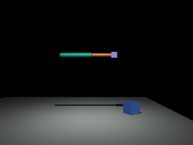
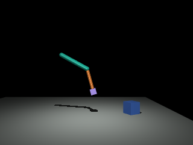
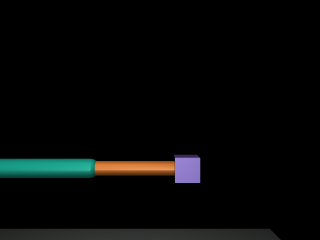
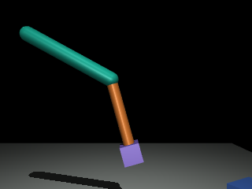

Lesson 01
MJCF Hierarchy
MuJoCo turns a short piece of text into something that moves. You need no physics background. Each section climbs one step: plain words, a picture, MuJoCo's own names, optional maths, then your code.
Dotted words show a definition on hover. Maths boxes are optional. Predict boxes hide the answer until you guess.
1. A simulator must know two different kinds of thing
Think about a board game. Some things never change while you play: the board, the rulebook, how many pieces there are. Other things change on every turn: where each piece is standing right now.
A physics simulator has the same split:
These stay fixed while the simulation runs.
These change every few milliseconds.
Watch the split happen
Press Play. The left box never changes. The right box changes all the time. The pendulum on the right is drawn using only the numbers in those two boxes.
<body name="pendulum"
pos="0 0 1">
<joint type="hinge"
axis="0 1 0"/>
<geom name="rod" …/>
<body name="bob" …>
<geom name="weight" …/>
</body>
</body>MuJoCo reads this once, at the start. ⟶ MjModel.from_xml_string()
Dashed border = never changed by the simulation.
This lesson runs its own small copy of the pendulum maths in your browser, using the same masses and timestep as your lesson script. It is a faithful sketch, not real MuJoCo.
model. If it describes "right now", look in data.2. The official names for those boxes
Now that the idea is clear, here are the names MuJoCo uses. There are four: one text format and three Python objects.
| Name | Plain meaning | LEGO analogy | Changes while running? |
|---|---|---|---|
| MJCF | The text file that describes your robot or object | Instruction booklet | - |
| MjSpec | An editable version of the booklet, inside Python | A booklet you can still scribble on | You edit it before building |
| MjModel | The finished design: sizes, masses, counts | The built model | No (the structure is frozen) |
| MjData | Everything about "right now" | How you are holding it this second | Yes, every step |
# ① text → fixed design (done once)
model = mujoco.MjModel.from_xml_string(XML)
# ② fixed design → a live state (can make many)
data = mujoco.MjData(model)
# ③ edit the blueprint in Python (optional)
spec = mujoco.MjSpec.from_string(XML)
model2 = spec.compile()Line ① reads the text and works out every fixed number: how many bodies, how heavy each shape is, where the hinge is.
Line ② creates an empty "right now" for that design. Everything starts at zero: time = 0, angle = 0.
Line ③ is for later lessons. You use MjSpec when your Python code should build or change a model, for example "add 10 boxes".
model.opt.gravity. The simulation itself never changes them. You can never change the structure (how many bodies or joints) without building a new model.New words: MJCFMjSpecMjModelMjData
3. Three building words: body, geom, joint
Every MuJoCo model is made from three kinds of piece. Toggle them below to see each one on its own.
Untick "geoms": the pendulum vanishes, but the bodies are still there. That is why we call bodies invisible. The small red/blue arrows are each body's own x (red) and z (blue) directions.
New words: bodygeomjointhingeparent / child
4. Build the pendulum one line at a time
MuJoCo counts every piece. Your script prints those counts as nbody, njnt, ngeom, nq and nv. Before each line is added, guess which count will change.
nbody,njnt,ngeom: "number of bodies / joints / geoms".nq: how many numbers MuJoCo needs to say where everything is (positions). It's the length of qpos.nv: how many numbers it needs to say how fast everything moves. It's the length of qvel.
Question
- The world body always exists, even in an empty file. That's why
nbodystarts at 1. - Only joints change
nqandnv. Bodies and shapes don't add ways to move. - Swinging the pendulum changes
qpos(the data), but every count (the model) stays the same.
New words: nbody · njnt · ngeomnq · nvqpos · qvelworld body
5. Your lesson's two experiments, live
Lesson 1 asked you to try two edits to the XML. Guess first, then move the sliders.
Predict before you touch the sliders
- Experiment A: the pendulum body's
posgoes from0 0 1to0 0 2. Where does the bob end up? Doesnqchange? - Experiment B: the rod's
fromtogoes from0 0 0 0 0 -1to0 0 0 0 0 -2. Does the ball move to the new end of the rod?
A. The bob rises 1 m too. It is a child of the pendulum body, and children follow their parent. nq stays 1, because you still have exactly one hinge.
B. No! The rod gets longer, but the ball stays 1 m below the hinge. The ball sits on the bob body, and the bob body has its own pos="0 0 -1". The rod and the bob are not linked. MuJoCo does exactly what the XML says, not what you meant. To fix it, change the bob's pos to 0 0 -2 as well.
The XML above rewrites itself as you drag. Orange numbers are the ones you changed. "World" means measured from the fixed floor origin, in metres.
6. Your script, line by line
Here is what 01_mjcf_hierarchy.py does, with the physical meaning of each MuJoCo line.
| Code | What it means physically |
|---|---|
model = mujoco.MjModel.from_xml_string(XML) | Read the description. Work out every fixed number: 3 bodies, 1 hinge, rod mass 8.38 kg, ball mass 7.24 kg. |
data = mujoco.MjData(model) | Make a fresh "right now" for that design. Time = 0, angle = 0 (hanging straight down), not moving. |
model.nbody, model.njnt, … | Read the counts from the model. They describe the design, so they live there. |
mj_id2name(model, mjOBJ_BODY, i) | MuJoCo stores everything by number (ID). This turns ID 1 back into the name "pendulum". |
data.qpos[0] = 0.7 | Tilt the pendulum by 0.7 radians (about 40°). This edits the data. |
mujoco.mj_forward(model, data) | "Look at the new angle and work out where every piece is." The clock does not move. |
mujoco.mj_step(model, data) | Move time forward by one tick (0.002 s). Gravity pulls; the angle changes a tiny bit. |
# What your script printed, with labels and units added
bodies: 3 # world, pendulum, bob
joints: 1 # the hinge
geoms: 2 # rod (capsule), weight (sphere)
qpos: 1 # one angle is enough to say where everything is
qvel: 1 # one spin speed is enough to say how it moves
qpos[0] before: 0.0 rad # hanging straight down
qpos[0] after step: 0.69997161 rad # set to 0.7, then fell 0.0000284 rad in 2 msNew words: IDmj_forwardmj_stepradian
7. The maths underneath, only if you want it
You don't need this to use MuJoCo. It shows that nothing is magic: every number in your output can be worked out by hand.
What is a radian?
A radian is another way to measure angles. If you walk along a circle a distance equal to its radius, you have turned 1 radian. A full turn is 2π ≈ 6.283 radians.
MuJoCo always uses radians inside qpos, even if the XML lets you write degrees.
Where do the masses 8.38 kg and 7.24 kg come from?
You never wrote a mass in the XML. MuJoCo assumes every shape is as dense as water (1000 kg per cubic metre) and multiplies by the shape's volume.
The ball is a sphere with radius r = 0.12 m:
The rod is a capsule: a cylinder (radius 0.05 m, length 1 m) with a half-ball on each end. Two half-balls make one ball:
Both match what MuJoCo computes (model.body_mass). A 1 m "rod" made of water-density material is surprisingly heavy!
Counting rule: where nq and nv come from
nq and nv are the sums over all joints. Each joint type adds a fixed amount:
| Joint type | adds to nq | adds to nv | Why |
|---|---|---|---|
| hinge | 1 | 1 | one angle, one spin speed |
| slide | 1 | 1 | one distance, one speed |
| ball | 4 | 3 | rotation stored as 4 numbers (a "quaternion"), but only 3 ways to spin |
| free | 7 | 6 | 3 for position + 4 for rotation; 3 + 3 speeds |
Bodies and geoms add nothing. You will meet ball and free joints later; the point now is that nq and nv are not always equal.
Why the angle fell by exactly 0.0000284 rad in one step
Lesson 3 explains this fully. Short version: in one step, MuJoCo does two small updates, in this order.
At 0.7 rad, gravity gives this pendulum an angular acceleration of −7.097 rad/s² (MuJoCo works this out from the masses). The pendulum starts at rest (speed 0):
That matches your output: 0.69997161.
8. Three quick checks
Q1. You add a second hinge joint inside the bob body. What are nbody, njnt and nq now?
nbody = 3 (no new body), njnt = 2, nq = 2. Now the ball can swing on its own: it's a double pendulum!
Q2. You delete the "weight" geom but keep the bob body. What do you see? Does nbody change?
The ball disappears and its 7.24 kg disappears with it, so the pendulum is lighter. nbody stays 3: the invisible bob body is still there. Only ngeom drops to 1.
Q3. You run data.qpos[0] = 1.0. Did you change the model or the data? What is model.nq afterwards?
The data. You changed where the pendulum is right now. The design is untouched: model.nq is still 1.
Glossary: every word from this lesson
- MJCF
- MuJoCo's XML text format for describing a model.
- MjSpec
- An editable model description inside Python;
spec.compile()turns it into an MjModel. - MjModel
- The fixed design: counts, sizes, masses, timestep, gravity.
- MjData
- The live state: time, qpos, qvel, and everything computed from them.
- body
- An invisible point with its own x/y/z directions (a frame). Holds geoms, joints and child bodies.
- geom
- A shape attached to a body. You see it, it collides, it adds mass.
- joint / hinge
- Lets a body move relative to its parent. A hinge rotates around one line.
- world body
- The fixed root of every model. Always body ID 0.
- nq / qpos
- How many position numbers there are / the list of them (angles in rad, distances in m).
- nv / qvel
- How many speed numbers there are / the list of them (rad/s, m/s).
- mj_forward
- Work out everything about the current moment. Time does not move.
- mj_step
- Move time forward by one timestep.
Recap: the lesson in one minute
MuJoCo splits every simulation into two objects. MjModel is the fixed blueprint. It stores body positions, joint types, geom shapes, masses, and material properties. The model never changes during simulation.
MjData is the mutable state. It holds the current joint angles (qpos), joint velocities (qvel), accelerations (qacc), and the simulation clock (time). Every physics step updates data, not the model.
The input is an MJCF XML file. MuJoCo parses it into a model. You create data from that model. Then you step the simulation forward.
Bodies are frames in the hierarchy. They have no shape. Geoms are visible shapes attached to bodies. Joints define how a body moves relative to its parent.
Try the sandbox: change the pivot height and rod length. The world position of the bob moves, the model counts never do.
Lesson 02
Frames and Axes
Every position in MuJoCo is measured from somewhere. This lesson shows the two kinds of position, local and world, how MuJoCo turns one into the other, and what a joint's axis really means.
Dotted words show a definition on hover. Maths boxes are optional. Predict boxes hide the answer until you guess.
1. "Two steps to the left" of what?
Imagine telling a friend where your phone is. You could say "on the tray, near the front edge". Or you could say "2.3 m from the kitchen door, 0.9 m up". Both are correct. The first one is measured from the tray. The second one is measured from the room.
Now someone carries the tray to the sofa. The first description is still true: the phone is still near the front edge of the tray. The second description is now wrong. The phone moved through the room.
Try it: carry the tray
Drag the tray (or use the sliders). Watch which numbers change.
Tilt the tray and the phone's world position changes in a curved way. The local position still never changes. Section 4 explains why the tilt matters.
pos in your XML is local: measured from the parent body. World positions only appear after MuJoCo does the maths.2. Meet x, y and z
To give a position you need three directions. MuJoCo always uses the same ones and the same colours:
0 0 -9.81.A set of three arrows like this, stuck to a point, is called a frame. The world has one frame, fixed forever. Every body carries its own frame, which moves and turns with the body.
Drag the picture to look around. The faint frame at the origin is the world. The bright frame is a body. When it turns, its own x and z arrows turn with it. That is why "1 m along the body's x" is not the same as "1 m along the world's x".
Why y points into the screen: the right-hand rule
MuJoCo uses a right-handed frame. Point the fingers of your right hand along x (right). Curl them toward y. Your thumb then points along z (up). The only way this works with x right and z up is if y points away from you.
This matters in section 5, where the same rule tells you which way a hinge turns.
New words: framex · y · z axesright-handed
3. Local numbers live in the model, world numbers live in the data
This links straight back to Lesson 1. Local positions are part of the design, so they live in model. World positions depend on the current joint angles, so they live in data.
| You want… | Measured from | Where to read it | Who sets it |
|---|---|---|---|
| A body's position | its parent (local) | model.body_pos[id] | You, in the XML pos |
| A body's position | the world | data.xpos[id] | MuJoCo, in mj_forward |
| A body's directions (orientation) | the world | data.xmat[id] or data.xquat[id] | MuJoCo |
| A geom's position | its body (local) | model.geom_pos[id] | You (or fromto) |
| A geom's position | the world | data.geom_xpos[id] | MuJoCo |
| A hinge's turning line | its body (local) | model.jnt_axis[id] | You, in the XML axis |
data, an x at the front means "in world coordinates": xpos, xmat, xquat, geom_xpos. No x means local.data.qpos and read data.xpos straight away, you get the old world positions. World positions are only refreshed when you call mj_forward (or mj_step). Prevention rule: change qpos → call mj_forward → then read xpos.New words: body_posxposxmat · xquatgeom_xposjnt_axisorientation
4. How MuJoCo finds a world position: follow the chain of arrows
This is the model from your Lesson 2 script. Seen from the side (x right, z up):
<body name="base" pos="0 0 1"> <!-- 1 m above the world origin -->
<body name="link" pos="0 0 0.6"> <!-- 0.6 m above BASE -->
<joint name="hinge" type="hinge" axis="0 1 0"/>
<geom name="link_geom" type="capsule" fromto="0 0 0 0 0 -0.8"/> <!-- centre is 0.4 m below LINK -->
</body>
</body>To find where the capsule's centre is in the world, MuJoCo walks from the world to the capsule. It adds one arrow per step. Each arrow is a local pos, turned to match its parent's current direction.
Orange arrow = base's local pos. Teal = link's local pos. Purple = the geom centre, measured from the link. The thin dashed arrow is their sum: the world position. All numbers are (x, y, z) in metres, measured in the world frame.
Predict: hinge at 0, tilt the base by +30°. Does the link stay at (0, 0, 1.6)?
No. It moves to (0.30, 0, 1.52). The link's local pos is still "0.6 m along the base's z arrow". But the base's z arrow now leans 30° toward +x. So the teal arrow leans too. I checked this with real MuJoCo, using euler="0 30 0" on the base: link xpos = [0.3, 0, 1.5196].
This is why "world = parent + local" is only true when nothing is rotated. The full rule is world = parent's world position + (local offset turned by the parent's orientation).
5. A joint's axis is the line it turns around
A hinge is like a door hinge, or a skewer through a chicken on a rotisserie. The axis attribute tells MuJoCo which way the skewer points. It's written in the body's own (local) directions:
axis="0 1 0": the skewer points along y (into the screen). The rod swings left/right in the picture, like a playground swing.axis="1 0 0": the skewer points along x. The rod swings toward or away from you.axis="0 0 1": the skewer points straight up, along the rod itself…
The thick dashed line is the hinge axis. The curved arrow shows which way a positive angle turns. Drag to look around.
axis="0 1 0" your thumb points into the screen. Your fingers curl clockwise as you look at it, so up turns toward +x. That means a rod hanging down swings toward −x (left).Predict: with axis="0 0 1" and angle 0.7 rad, where does the capsule centre go?
Nowhere. It stays at (0, 0, 1.2). The axis runs straight along the rod. Spinning a rod around its own length is like twirling a pencil between your fingers: it turns, but its centre doesn't move. I checked with real MuJoCo: geom_xpos = [0, 0, 1.2]. With axis="1 0 0" it becomes [0, 0.258, 1.294]. That is the same swing as before, but toward +y instead of −x.
New words: axispositive rotationright-hand rule
6. The maths, one step at a time
Each box builds on the one before. Stop whenever you like. You can use MuJoCo without any of this.
Step 1: no turning: just add the arrows
When no body is rotated, world positions are plain additions. Add the x parts together, then the y parts, then the z parts:
Step 2: turning in a flat picture: sin and cos
When the hinge turns by angle θ, the geom's local arrow (0, −0.4) must be turned before we add it. In the side view (x right, z up), a turn about +y moves a local point (x, z) to:
cos and sin are just "how much of the arrow ends up pointing each way" after the turn. Put in the script's numbers, θ = 0.7 rad, local point (0, −0.4):
That matches your script's geom world position: [-0.258 0. 1.294] exactly.
Step 3: in 3D: rotation matrices (what xmat is)
In 3D the same turn is written as a 3×3 grid of numbers, called a rotation matrix. For a turn θ about y:
The general rule MuJoCo applies down the whole tree:
A neat fact: the columns of a rotation matrix are the body's own x, y, z arrows, written in world coordinates. Column 3 of the link's xmat is its z arrow:
Step 4: quaternions: four numbers for a turn (xquat)
A rotation matrix uses 9 numbers. MuJoCo also stores turns as a quaternion, which uses only 4. Think of it as "an axis plus how far to turn around it", packed cleverly:
For the link: θ = 0.7 rad about axis (0, 1, 0):
"No turn" is always [1, 0, 0, 0]. Quaternions show up again with ball and free joints. That's why those joints have 4 or 7 numbers in qpos.
Gotcha: the XML uses degrees, qpos uses radians
By default, MJCF reads angles written in the XML (like euler="0 30 0" or a joint range) as degrees. Everything in data, including qpos, is radians. You can change the XML unit with <compiler angle="radian"/>.
7. Your script, line by line
Code in 02_frames_and_axes.py | Physical meaning |
|---|---|
link_id = mj_name2id(model, mjOBJ_BODY, "link") | MuJoCo stores bodies by number. This asks "which number is the body called link?" (answer: 2). |
model.body_pos[link_id] | The link's local position, exactly as written in the XML: (0, 0, 0.6) from the base. Part of the design. |
model.jnt_axis[joint_id] | The hinge's turning line in the link's own frame: (0, 1, 0). |
data.qpos[model.jnt_qposadr[joint_id]] = angle | Set the hinge angle. jnt_qposadr says where this joint's slot is inside qpos. Here it is slot 0. |
mujoco.mj_forward(model, data) | Walk the chain of arrows and refresh every world position. Time does not move. |
data.xpos[link_id] | The link's world position, in metres. |
data.xmat[link_id].reshape(3,3)[:, 2] | xmat is stored as 9 numbers in a row. reshape turns them into a 3×3 grid, and [:, 2] takes column 3: the link's z arrow in world coordinates. |
data.geom_xpos[geom_id] | The capsule centre's world position. |
# Your output, with meanings added (all world frame, metres)
θ = 0.00 rad: link xpos = [ 0. 0. 1.6 ] # 1 + 0.6 straight up
link z = [ 0. 0. 1. ] # link's z arrow points straight up
geom xpos = [ 0. 0. 1.2 ] # 0.4 m below the link
θ = 0.70 rad: link xpos = [ 0. 0. 1.6 ] # unchanged! the hinge is AT the link origin
link z = [ 0.644 0. 0.765] # tilted 0.7 rad toward +x
geom xpos = [-0.258 0. 1.294] # hanging part swung toward −x8. Your lesson's three questions
Q1. base pos changes from "0 0 1" to "0 0 2". What is the link's world position (hinge at 0)?
(0, 0, 2.6). The link's local position is still 0.6 above the base, and the base is now 2 m up. The link's model.body_pos doesn't change at all.
Q2. The axis changes from "0 1 0" to "1 0 0". Which way does the rod swing now?
It swings in the y-z plane, toward or away from you, instead of left and right. At +0.7 rad the capsule centre is at (0, +0.258, 1.294). In a pure side view the rod seems to just get shorter, because it is leaning toward you.
Q3. The link's local pos changes from "0 0 0.6" to "0 0 1.2". Does the link move in the world?
Yes, up to (0, 0, 2.2). Changing a local position moves that body and all its children in the world. Changing it never changes nq, nbody or njnt.
Glossary: new words from this lesson
- frame
- An origin point plus x, y, z arrows. The world has one; every body has one.
- local position
- Measured from the parent body's frame. What you write in the XML
pos. - world position
- Measured from the fixed world origin. Computed by MuJoCo.
- body_pos / geom_pos
- Local positions stored in the model.
- xpos / geom_xpos
- World positions stored in the data, refreshed by mj_forward.
- orientation, xmat, xquat
- Which way a body faces in the world: as a 3×3 rotation matrix, or as a 4-number quaternion [w, x, y, z].
- axis / jnt_axis
- The line a hinge turns around, written in the body's local frame.
- right-hand rule
- Thumb along the axis; fingers curl in the positive direction.
- mj_name2id
- Turns a name like "link" into the ID number used to index arrays.
Recap: the lesson in one minute
Each body in the MJCF tree creates its own coordinate frame. A body's pos attribute is expressed in its parent's frame, not in world coordinates.
MuJoCo walks the tree from root to leaves. At each body, it combines the parent transform with the local position and any joint rotation. The result is the body's world position, stored in data.xpos.
A joint's axis attribute is also in the body's local frame. A hinge with axis="0 1 0" rotates around the local y-axis. The world direction of that axis depends on all parent transforms.
Key rule: always call mj_forward() before reading world positions. Without it, data.xpos may contain stale or zero values.
Try the frame explorer: turn the hinge and watch the link's world position stay put while the capsule centre swings.
Lesson 03
State and Stepping
A simulator does not run time smoothly. It jumps forward in tiny ticks, working out each moment from the one before. This lesson shows what is stored at each tick and what mj_forward, mj_step and mj_resetData each do.
Dotted words show a definition on hover. Maths boxes are optional. Predict boxes hide the answer until you guess.
1. A simulation is a flipbook
A cartoon flipbook is just still drawings. Flip through them fast and they seem to move. Each drawing is a tiny bit different from the one before.
MuJoCo works the same way. It stores one page (the current moment) in MjData. Then it works out the next page, a tiny moment later, and replaces the old one.
03_state_and_stepping.py. That is a 1 m capsule, 22.25 kg, with timestep 0.002 s. Its in-browser physics was checked against real MuJoCo, and the two agree to 5 decimal places for this model. The numbers you see here are the numbers your script prints.Try it: drive the flipbook yourself
Press the buttons one at a time and watch which numbers flash. Each press adds a line to the log. The log uses the same format as your script's output.
Film strip: one frame is kept every 25 steps (0.05 s). Faint ghosts on the main view show the last few pages.
qpos by hand, qacc still holds the value from before your change. MuJoCo does not recompute anything until you call mj_forward or mj_step. Prevention rule: after editing qpos or qvel by hand, call mj_forward before reading anything computed.2. The four numbers on every page
For a one-hinge pendulum, each page holds four important numbers. Think of a car on a road:
| Number | Pendulum meaning | Car analogy | Unit |
|---|---|---|---|
| qpos | The angle, measured from hanging straight down | Where the car is on the road | rad |
| qvel | How fast the angle is changing | The speedometer | rad/s |
| qacc | How fast the speed is changing | How hard the car is speeding up or braking | rad/s² |
time | The simulation clock | The clock on the dashboard | s |
Watch them change together. Each graph is the "steepness" of the one above it. Where the angle graph is steepest, the speed is largest. Where the angle is at its peak (flat), the speed is zero.
Teal = qpos (rad). Orange = qvel (rad/s). Purple = qacc (rad/s²). The dashed line marks "now". Notice that qacc is always the opposite sign to qpos: gravity always pulls back toward hanging down.
qpos and qvel yourself (that's where the pendulum starts). qacc is always computed by MuJoCo from the forces. You don't set it. You read it.New words: qaccaccelerationrad/s · rad/s²data.time
3. forward, step, reset: what each one changes
| Call | time | qpos | qvel | qacc | xpos (world positions) |
|---|---|---|---|---|---|
mj_forward(model, data) | ✗ same | ✗ same | ✗ same | ✓ computed | ✓ computed |
mj_step(model, data) | ✓ + timestep | ✓ new | ✓ new | ✓ computed | ✓ computed |
mj_resetData(model, data) | → 0 | → model.qpos0 | → 0 | → 0 | cleared (call mj_forward) |
model.opt.timestep (0.002 s) is part of the design. It's how big every tick is.data.time is the current clock. It grows by one timestep per mj_step.Same idea as Lesson 1: the step size is fixed, and the clock reading changes.
qpos[0] = 0.7 in Python. That changes the data, not the model. So mj_resetData goes back to the model's starting angle, qpos0 = 0, hanging straight down. It doesn't go back to 0.7.To reset to a custom pose, set
qpos again after the reset. Or save the pose in the XML as a keyframe (<key qpos="0.7"/>) and call mj_resetDataKeyframe(model, data, 0).New words: model.opt.timestepqpos0keyframemj_resetData
4. Slow motion: what happens inside one mj_step
One mj_step does four small jobs, always in the same order. Step through them below. The numbers are real. They reproduce line "step 1" of your script exactly.
- Find the forces → acceleration. Gravity pulls the rod's middle straight down. Because the rod is tilted, that pull has a turning effect around the hinge. This gives
qacc. - Update the speed. new speed = old speed + timestep × acceleration.
- Update the angle, using the NEW speed. new angle = old angle + timestep × new speed.
- Move the clock. time = time + timestep.
New words: integratorsemi-implicit Eulertorque
5. Experiment: how big should one tick be?
Your model uses timestep="0.002": 500 pages per simulated second. Why so small? Change only the timestep and compare against a very fine "truth" run (timestep 0.0002).
Predict first: timestep goes from 0.002 to 0.1 (50× bigger). What happens to the swing over 5 seconds?
At 0.02 the curve is almost on top of the truth. At 0.1 it still swings, but it drifts out of time with the truth: the wiggles end up at the wrong moments. At 0.3 it is badly wrong. At 0.5 it "explodes": the pendulum spins over the top and the angle runs off to about −38 rad.
I ran these same timesteps in real MuJoCo. After 5 s: 0.002 → 0.48919 rad, 0.1 → 0.61049 rad, 0.5 → −37.729 rad. The browser numbers match. Debugging rule: if a simulation explodes, try halving the timestep first.
Grey = fine reference. Teal = your timestep (dots are the actual pages MuJoCo would compute). Tick the checkbox for a second, separate experiment: it shows why MuJoCo uses the new speed. Real MuJoCo never uses the old speed this way.
6. The maths, from "rate of change" to the step formula
Step 1: speed is "how fast something changes"
If the angle goes from 0.70 to 0.68 rad in 0.01 s, it changed by −0.02 rad in 0.01 s:
Mathematicians make the time gap tiny and call the result a derivative. They write it with a dot: θ̇ ("theta-dot") is the speed, and θ̈ ("theta-double-dot") is the acceleration. In MuJoCo names: qvel = θ̇ and qacc = θ̈.
Step 2: Newton's law for turning: where qacc comes from
For things that turn, Newton's "force = mass × acceleration" becomes:
Gravity pulls the rod's centre of mass (0.5 m from the hinge) straight down. Only the sideways part of that pull turns the rod, which is why sin θ appears:
Your model's numbers. MuJoCo computes the mass and inertia from the capsule's shape and a density of 1000 kg/m³:
Step 3: turning the law into pages: the step formula
A computer can't use infinitely tiny time gaps, so it uses the timestep h = 0.002 s. With "rate × time = change":
Step 1 of your script, by hand:
A detail many people miss: the qacc printed after mj_step is the one computed at the start of that step, from the old angle. That's why the "after forward" row and the "step 1" row show the same −8.92670.
Step 4: why tiny steps: error and stability
Each step assumes the acceleration stays constant for the whole tick. It doesn't really, so each step makes a small error. Smaller h means smaller errors. Halving h roughly halves the total error.
For small swings this pendulum takes about
With h = 0.002 there are about 845 pages per swing, plenty. With h = 0.5 there are fewer than 4, so the method can't follow the motion at all, and it explodes. A good rule of thumb is to use many dozens of steps per fastest motion in your model. Stiff springs and hard contacts move fast, so they need small timesteps.
7. Your script, line by line
Code in 03_state_and_stepping.py | Physical meaning |
|---|---|
data.qpos[0] = 0.7 | Tilt the pendulum 0.7 rad (about 40°) from hanging. This edits the data. |
data.qvel[0] = 0.0 | Hold it still: spin speed 0 rad/s. It is like holding the pendulum and about to let go. |
mujoco.mj_forward(model, data) | Study the current page: work out positions and the acceleration (−8.927 rad/s²). The clock stays at 0. |
for step in range(1, 11): mj_step(...) | Draw 10 new pages, each 0.002 s after the last. That is 0.02 s in total. |
mujoco.mj_resetData(model, data) | Back to page one as the model describes it: time 0, angle qpos0 = 0, speed 0. |
model.opt.timestep | The tick size, read from the model (0.002 s). It's part of the design. |
# clock (s) angle (rad) spin speed (rad/s) speeding up (rad/s²)
after forward time=0.000 qpos= 0.70000 qvel= 0.00000 qacc=-8.92670 # studied, not moved
step 1 time=0.002 qpos= 0.69996 qvel=-0.01785 qacc=-8.92670 # first page: barely moved
step 2 time=0.004 qpos= 0.69989 qvel=-0.03571 qacc=-8.92632 # speed keeps growing
…
step 10 time=0.020 qpos= 0.69804 qvel=-0.17841 qacc=-8.90966 # 0.02 s in: falling faster
after reset time=0.000 qpos= 0.00000 qvel= 0.00000 qacc= 0.00000 # back to qpos0, NOT 0.78. Your lesson's four questions
These are the Lesson 3 checkpoint questions. Answer them here, then tell me your answers in the chat so I can update your progress.
Q1. You call mj_forward() three times, with no mj_step(). Does data.time change?
No. It stays 0.0. mj_forward only studies the current page. Calling it again gives the same results. (Checked in real MuJoCo: time = 0.0, qacc = −8.927 after two calls.)
Q2. qpos = 0.7 and qvel = 0. What happens to qpos after one step under gravity?
It goes down very slightly, to 0.69996. Gravity gives a negative acceleration. The speed becomes −0.01785 rad/s, and the angle moves by 0.002 × that. The change is tiny because the pendulum starts from rest and 2 ms is short.
Q3. The timestep is 0.002 s. What is data.time after ten steps?
0.020 s (10 × 0.002).
Q4. You add mj_resetData(model, data) after the loop. Which values go back, and to what?
All of them: time → 0, qvel → 0, qacc → 0, and qpos → 0, not 0.7. The 0.7 was set in Python on the data. The model's own starting angle (qpos0) is 0. The model itself (timestep, nq, masses) isn't touched by a reset.
Glossary: new words from this lesson
- qpos / qvel / qacc
- Angle (rad), spin speed (rad/s), and how fast the speed changes (rad/s²) for each joint.
- data.time
- The simulation clock, in seconds.
- model.opt.timestep
- The fixed size of one tick (here 0.002 s). Part of the model.
- mj_forward
- Compute everything for the current state (positions, forces, qacc). No time passes.
- mj_step
- Compute, then move time forward by one timestep.
- mj_resetData
- Set the data back to the model's defaults: time 0, qpos = qpos0, qvel 0.
- qpos0 / keyframe
- The model's built-in starting pose / a saved pose in the XML you can reset to.
- integrator, semi-implicit Euler
- The rule for turning acceleration into the next page: speed first, then angle using the new speed.
- torque, inertia
- Turning force (N·m) and resistance to being turned (kg·m²).
- stale
- A computed value that no longer matches the state, because you changed qpos or qvel and haven't called mj_forward.
Recap: the lesson in one minute
MjData holds four key state arrays. qpos stores joint positions (angles for hinges, in radians). qvel stores joint velocities (rad/s). qacc stores accelerations. time tracks the simulation clock in seconds.
mj_forward(model, data) computes all derived quantities (world positions, contact forces, sensor values) from the current qpos and qvel. It does not advance time. Use it when you need to read positions without simulating.
mj_step(model, data) does a full physics step. It computes forces, integrates accelerations into velocities, integrates velocities into positions, and advances time by model.opt.timestep (default 0.002 seconds).
mj_resetData(model, data) resets all state arrays to their defaults without rebuilding the model. qpos returns to the model default qpos0 (zero for this hinge), not to the angle you last set. qvel, qacc go to zero. time resets to zero.
Try the state sandbox: step, play and reset. It uses the same pendulum as your script, so the numbers match.
Lesson 04
Inspection and Visualization
Goal: find any part of a model by its name, read where it is in the world, and take a picture of it without opening a window. You will use a small two-link arm and a loose box. By the end you can also look at an XML file and say what the model looks like before you run it.
Dotted words show a definition on hover. Maths boxes are optional. Predict boxes hide the answer until you guess.
1. Names are for people, numbers are for the computer
Think about the contacts list on your phone. You tap "Mum". You never type her number. The phone looks up the name and dials the number for you.
MuJoCo works the same way. In the XML file you give parts friendly names, like forearm or hand. Inside, MuJoCo stores everything in numbered rows. A part's row number is called its id.
Each kind of part has its own numbered list. Bodies have a list, joints have a list, and so on. So "id 1" means a different thing in each list.
Try it: look up a name
Pick a kind of part, then pick a name. The picture lights up that part. The box underneath shows the id and the row of the position array that belongs to it.
Side view of the zero pose: x to the right, z up, in the world frame (m). Every number here was printed by 04_inspection_and_visualization.py.
world. MuJoCo adds it for you. It never moves, so its row in every position array is always zero.New words: idnameworld body
2. Looking up a name in code
Here is the model's XML on the left and the Python that reads it on the right. Every name="..." becomes a row in a list. The order in the file decides the id.
<worldbody> <!-- body 0: world -->
<geom name="floor" .../> <!-- geom 0 -->
<camera name="side" .../> <!-- camera 0 -->
<body name="upper_arm" pos="0 0 1"> <!-- body 1 -->
<joint name="shoulder" .../> <!-- joint 0 -->
<geom name="upper_geom" .../> <!-- geom 1 -->
<body name="forearm" pos="0.5 0 0"> <!-- body 2 -->
<joint name="elbow" .../> <!-- joint 1 -->
<geom name="forearm_geom" .../> <!-- geom 2 -->
<geom name="weight" .../> <!-- geom 3 -->
<site name="hand" .../> <!-- site 0 -->
<camera name="track" .../> <!-- camera 1 -->
</body>
</body>
<body name="box" pos="1.2 0 0.1"> <!-- body 3 -->
<freejoint name="box_free"/> <!-- joint 2 -->
<geom name="box_geom" .../> <!-- geom 4 -->
</body>
</worldbody># the long way: ask for the id, then index the array
fid = mujoco.mj_name2id(model,
mujoco.mjtObj.mjOBJ_BODY, "forearm")
# fid = 2
data.xpos[fid] # row 2 of xpos
# the short way: named access
model.body("forearm").id # 2
data.body("forearm").xpos # same row
data.site("hand").xpos # site 0
data.joint("elbow").qpos # elbow angle
# and back again: id to name
mujoco.mj_id2name(model,
mujoco.mjtObj.mjOBJ_BODY, 2)
# 'forearm'The script prints every list. Each line is one kind of part, with id:name pairs:
body nbody = 4 0:world 1:upper_arm 2:forearm 3:box
joint njnt = 3 0:shoulder 1:elbow 2:box_free
geom ngeom = 5 0:floor 1:upper_geom 2:forearm_geom 3:weight 4:box_geom
site nsite = 1 0:hand
camera ncam = 2 0:side 1:track| Call | Plain meaning | Phone analogy |
|---|---|---|
| mj_name2id | Name in, row number out | Search contacts for "Mum", get her number |
| mj_id2name | Row number in, name out | Caller ID shows a name for a number |
named access data.body("forearm") | Look up and read in one go | Tap the contact and it dials |
| mjtObj | Which list to search | Contacts vs your email address book |
"forarm" and mj_name2id returns -1. In Python, data.xpos[-1] is the last row, so you silently read the box: (1.2000, 0.0000, 0.1000) m. The named form model.body("forarm") is safer. It stops with a KeyError that lists the valid names. Prevention rule: prefer named access, or check that the id is not -1.New words: mj_name2idmj_id2namenamed accessmjtObj
3. Where is each part? Three different "where"s
Imagine a small sticker glued to each body. The sticker shows a little x arrow and z arrow. It is the body's own frame from Lesson 2. The question "where is the forearm?" can mean three different things:
The forearm has a 1 kg block at its tip. That block pulls the balance point toward the hand. So the balance point is not at the middle of the forearm.
Predict first: set shoulder = 0.5 rad and elbow = 0.8 rad. Where is the hand, in world x and z (m)?
MuJoCo says site_xpos of the hand is (0.5458, 0.0000, 0.3749) m in the world frame. The arm tips down, because a positive turn about +y swings x toward -z (right-hand rule, Lesson 2). The forearm's total tilt is 0.5 + 0.8 = 1.3 rad, because both hinges turn about the same y axis. The maths box below builds this number by hand.
Dots: filled circle = body frame origin (xpos), ringed cross = centre of mass (xipos), orange dot = hand site. All in the world frame, metres; y is always 0 here. This picture runs its own copy of the arm's position maths. It matches MuJoCo to 4 decimals: check_fk.py runs the sandbox's position code (the same formulas as this picture) at 8 poses and finds a worst difference of 2.2e-16 m.
Look at the frozen box. body_ipos is the balance point measured from the body's own sticker. It never changes. The forearm is 0.40 m long, so the middle is 0.20 m. The block pulls the balance point out to 0.2891 m.
Step 1: where the balance point comes from (a weighted average)
MuJoCo gives the forearm a mass from its shapes and a density of 1000 kg/m³ (water). The script prints the total: 2.2441 kg. The 0.1 m cube is 1 kg, so the thin capsule is the other 1.2441 kg.
Step 2: the hand, by hand (forward kinematics)
Working out positions from joint angles is called forward kinematics. Walk down the chain, one link at a time. A link of length L, tilted by angle a about +y, moves you by (L cos a, 0, -L sin a).
The script compares this hand-made answer with MuJoCo's site_xpos. The biggest difference is 1.1e-16 m: only computer rounding.
Step 3: the forearm's balance point at this pose
qpos moves nothing by itself. xpos, xipos and site_xpos keep their old values until mj_forward runs. Your script shows this:
site_xpos(hand) before mj_forward = ( 0.9000, 0.0000, 1.0000) m # stale: still the zero pose
site_xpos(hand) after mj_forward = ( 0.5458, 0.0000, 0.3749) m # correct for (0.5, 0.8)New words: xposxiposcentre of massbody_ipossitesite_xposforward kinematics
4. Which way is it facing? A quaternion, gently
Knowing where a body is isn't enough. You also need to know which way it faces. Here is a simple way to describe any turn.
A quaternion packs those two things into four numbers, written [w, x, y, z]:
- w says how far you turned. It is 1 for no turn and gets smaller as the turn grows.
- x, y, z point along the skewer. They are 0 when there is no turn.
Both use half the angle. That is just how the rule works. You don't need to know why to use it.
For a turn about y the quaternion is always [cos(a/2), 0, sin(a/2), 0]. Only w and y change.
MuJoCo stores each body's turn in two ways. xquat is the quaternion. xmat is the same turn as a 3 x 3 grid of numbers. Each column of xmat is one of the body's arrows, written in world coordinates.
# pose (0.5, 0.8), from the script
upper_arm xquat=[ 0.9689, 0.0000, 0.2474, 0.0000] # turned 0.5 rad about +y
forearm xquat=[ 0.7961, 0.0000, 0.6052, 0.0000] # turned 1.3 rad about +y
forearm xmat (3x3, rows; columns are the body's x, y, z axes in world):
( 0.2675, 0.0000, 0.9636)
( 0.0000, 1.0000, 0.0000)
(-0.9636, 0.0000, 0.2675) # column 1 = (0.2675, 0, -0.9636): forearm's x arrow points right and steeply downStep 1: the forearm's quaternion by hand
Step 2: the box, turned 30 degrees about the vertical
The XML says euler="0 0 30": turn 30 degrees about z. MuJoCo converts that to a quaternion when it builds the model.
Check: w² + x² + y² + z² = 0.9330 + 0.0670 = 1. A quaternion that describes a turn always has length 1. MuJoCo calls this a unit quaternion.
[w, x, y, z]. Some other libraries put w last. "No turn" in MuJoCo is [1, 0, 0, 0].New words: quaternionxquatxmatunit quaternion
5. Which seats in qpos belong to which joint?
Picture qpos as a row of seats on a train. Each joint books a block of seats next to each other. A hinge needs one seat: its angle.
The box has a free joint. It can fly anywhere and turn any way. So it books 7 seats in qpos: 3 for where it is (x, y, z in metres), then 4 for its quaternion.
Speeds need fewer seats. The box needs 3 numbers for how fast it moves and 3 for how fast it spins. Spinning speed needs only 3 numbers, one per axis, not 4. So the box books 6 seats in qvel.
The values are the script's qpos at pose (0.5, 0.8) with the box at rest; every qvel is 0 rad/s or m/s.
| Name | Shape | Plain meaning |
|---|---|---|
model.nq / model.nv | numbers: 9 / 8 | How many seats in qpos / in qvel. Here nq is not equal to nv, because of the free joint's quaternion. |
| jnt_qposadr | (njnt,) = (3,) | The first qpos seat each joint owns: [0, 1, 2] |
| jnt_dofadr | (njnt,) = (3,) | The first qvel seat each joint owns: [0, 1, 2] |
jnt_qposadr is 9 and its jnt_dofadr is 8 (checked in MuJoCo). Prevention rule: use data.joint("name").qpos or jnt_qposadr, never the joint id, to find a joint's seats.New words: free jointnq / nvjnt_qposadrjnt_dofadrdof
6. Cameras: taking a picture without a window
A camera in MuJoCo is a named eye that you place in the XML. You can then ask MuJoCo to draw what that eye sees and save it as a picture. No window has to open.
side, placed in <worldbody> 3 m in front of the arm (y = -3), looking along +y.track, with mode="trackcom", placed inside the forearm body.Predict: the arm bends from the zero pose to (0.5, 0.8). Which camera changes its world position? Where will the forearm appear in each picture?
Only track moves. side stays at (0.6000, -3.0000, 0.7000) m. track moves from (0.7900, -1.2000, 1.2000) m to (0.5170, -1.2000, 0.6817) m. That is the forearm's centre of mass (0.5161, 0, 0.4817) plus the same fixed offset it started with. So in the tracking pictures the forearm's balance point stays at the same spot in the frame, while the room seems to move.




These four 320 x 240 pictures were rendered by your script with mujoco.Renderer, with no window open.
<camera name="side"
pos="0.6 -3.0 0.7"
xyaxes="1 0 0 0 0 1"/>
<!-- inside body "forearm" -->
<camera name="track" mode="trackcom"
pos="0.29 -1.2 0.2"
xyaxes="1 0 0 0 0 1"/>renderer = mujoco.Renderer(model, 240, 320)
# height 240 px, width 320 px
mujoco.mj_forward(model, data)
renderer.update_scene(data, camera="side")
pixels = renderer.render()
# numpy array, shape (240, 320, 3), uint8 RGB
data.cam("track").xpos
# data.cam_xpos row 1, world, mxyaxes="1 0 0 0 0 1" says which way the picture's right and up point. Picture-right is world +x, picture-up is world +z. A camera looks along its own -z axis, which here is world +y: into the scene.
| Camera mode | Plain meaning |
|---|---|
fixed (default) | Stays put relative to the body it is in. In worldbody that means it never moves. |
trackcom | Keeps its starting offset from the centre of mass of its body (and the bodies below it), but does not turn. |
targetbody | Stays in place but turns to keep looking at a chosen body. Not used here. |
New words: cameratrackcommujoco.Renderercam_xpos
7. Your script, line by line
Code in 04_inspection_and_visualization.py | Physical meaning |
|---|---|
mujoco.mj_id2name(model, obj, i) | Read the contacts list row by row: which name sits at id i. |
mujoco.mj_name2id(model, mjOBJ_BODY, "forearm") | Find the forearm's row number (2). A wrong name gives -1. |
mujoco.mj_forward(model, data) | Work out where every body, site and camera is for the current qpos. No time passes. |
data.xpos[b], data.xquat[b], data.xipos[b] | Body b's frame origin (m), its turn as a quaternion, and its balance point (m). All in the world frame. |
data.joint("shoulder").qpos[0] = 0.5 | Turn the shoulder to 0.5 rad. Positions stay stale until the next mj_forward. |
data.site("hand").xpos | Where the hand marker is in the world (m). |
data.body("forearm").xmat.reshape(3, 3) | The forearm's turn as a grid. The columns are its x, y, z arrows in world coordinates. |
model.jnt_qposadr[j], model.jnt_dofadr[j] | The first qpos seat and first qvel seat that joint j owns. |
mujoco.Renderer(model, 240, 320) + update_scene(data, camera="side") | An off-screen camera film 240 px high and 320 px wide. Point it through a named camera, then take the picture. |
Run it from the project folder:
uv run --python .venv/bin/python \
lessons/04-inspection-and-visualization/04_inspection_and_visualization.pyThe script's real output, shortened:
== 2. Zero pose (all joint angles 0), after mj_forward ==
body 0 world xpos=( 0.0000, 0.0000, 0.0000) m xquat=[ 1.0000, 0.0000, 0.0000, 0.0000] xipos=( 0.0000, 0.0000, 0.0000) m # world never moves
body 1 upper_arm xpos=( 0.0000, 0.0000, 1.0000) m xquat=[ 1.0000, 0.0000, 0.0000, 0.0000] xipos=( 0.2500, 0.0000, 1.0000) m # shoulder; balance point mid-link
body 2 forearm xpos=( 0.5000, 0.0000, 1.0000) m xquat=[ 1.0000, 0.0000, 0.0000, 0.0000] xipos=( 0.7891, 0.0000, 1.0000) m # elbow; balance point pulled to the block
body 3 box xpos=( 1.2000, 0.0000, 0.1000) m xquat=[ 0.9659, 0.0000, 0.0000, 0.2588] xipos=( 1.2000, 0.0000, 0.1000) m # 30 degrees about z
site hand site_xpos=( 0.9000, 0.0000, 1.0000) m (world) # 0.5 + 0.4 m along x
forearm mass: capsule 0.03 m radius + 1 kg cube -> body_mass = 2.2441 kg
forearm body_ipos (centre of mass in its own frame) = ( 0.2891, 0.0000, 0.0000) m
== 4. Pose shoulder = 0.5 rad, elbow = 0.8 rad ==
upper_arm xpos=( 0.0000, 0.0000, 1.0000) m xquat=[ 0.9689, 0.0000, 0.2474, 0.0000] xipos=( 0.2194, 0.0000, 0.8801) m
forearm xpos=( 0.4388, 0.0000, 0.7603) m xquat=[ 0.7961, 0.0000, 0.6052, 0.0000] xipos=( 0.5161, 0.0000, 0.4817) m
by hand: elbow = ( 0.4388, 0.0000, 0.7603) m hand = ( 0.5458, 0.0000, 0.3749) m
max |by hand - MuJoCo| for hand = 1.1e-16 m # hand maths = MuJoCo
== 5. Where each joint lives in qpos and qvel ==
nq = 9 (numbers in qpos) nv = 8 (numbers in qvel)
joint 0 shoulder type=hinge qposadr=0 (1 number: qpos[0:1]) dofadr=0 (1 number: qvel[0:1])
joint 1 elbow type=hinge qposadr=1 (1 number: qpos[1:2]) dofadr=1 (1 number: qvel[1:2])
joint 2 box_free type=free qposadr=2 (7 numbers: qpos[2:9]) dofadr=2 (6 numbers: qvel[2:8])
full qpos (shape (9,)) = [0.5 0.8 1.2 0. 0.1 0.9659 0. 0. 0.2588] # 2 angles (rad), box x y z (m), box quaternion
== 6. Cameras ==
camera 0 side mode=fixed cam_xpos at pose (0.5, 0.8) = ( 0.6000, -3.0000, 0.7000) m
camera 1 track mode=trackcom cam_xpos at pose (0.5, 0.8) = ( 0.5170, -1.2000, 0.6817) m
saved cam_side_zero.png (320 x 240 px, camera 'side', pose zero: ...) # 4 PNGs in the lesson folder8. Your lesson's questions
Answer these here, then tell me your answers in the chat so I can update your progress.
Q1. What does mj_name2id(model, mjOBJ_JOINT, "elbow") return? And for mjOBJ_BODY with "elbow"?
1 for the joint list (shoulder is 0, elbow is 1). -1 for the body list, because no body is called "elbow". Each kind of part has its own list.
Q2. The forearm's xpos and xipos are different numbers. Which one is the elbow, and why is the other one 0.2891 m further along?
xpos is the elbow: the forearm's frame starts at pos="0.5 0 0" in the upper arm. xipos is the balance point. The 1 kg block at the tip pulls it from the middle (0.20 m) out to 0.2891 m along the forearm.
Q3. Shoulder = 0 rad, elbow = pi/2 rad (1.5708). Where is the hand (world, m)? What is the forearm's xquat?
The upper arm points straight right, so the elbow is at (0.5, 0, 1). The forearm hangs straight down, 0.4 m. Hand = (0.5000, 0.0000, 0.6000) m. Turn = pi/2 about y, half angle pi/4: xquat = [0.7071, 0, 0.7071, 0]. Both checked in MuJoCo (check_lesson4.py). Try it in the sandbox.
Q4. You set data.qpos[0] = 1.0 and immediately print data.site("hand").xpos. Is it right?
No, it is stale. It still shows the pose from the last mj_forward or mj_step. Call mujoco.mj_forward(model, data) first.
Read a model from its XML alone
Don't run anything. Read this XML and picture it. A slide joint lets a body move along a line, like a drawer.
<worldbody>
<body name="cart" pos="0 0 0.5">
<joint name="slider" type="slide" axis="1 0 0"/>
<geom type="box" size="0.2 0.1 0.05"/>
<body name="pole" pos="0 0 0.05">
<joint name="pivot" type="hinge" axis="0 1 0"/>
<geom type="capsule" fromto="0 0 0 0 0 0.6" size="0.02"/>
<site name="tip" pos="0 0 0.6"/>
</body>
</body>
<body name="ball" pos="1 0 1">
<freejoint/>
<geom type="sphere" size="0.1"/>
</body>
</worldbody>Q5. What does it look like? Give nbody, njnt, nq, nv, and the world position of the tip site at the start.
A cart (a flat box) that slides along x, with a 0.6 m pole standing straight up on a hinge. A ball floats 1 m to the side, free to fall. It is a cart-pole plus a loose ball.
Checked in MuJoCo (check_lesson4.py):
nbody=4 njnt=3 ngeom=3 nsite=1 nq=9 nv=8 # world, cart, pole, ball; slide 1 + hinge 1 + free 7 / 6
jnt_qposadr=[0, 1, 2] jnt_dofadr=[0, 1, 2]
pole xpos=( 0.0000, 0.0000, 0.5500) m tip site_xpos=( 0.0000, 0.0000, 1.1500) m ball xpos=( 1.0000, 0.0000, 1.0000) m
after qpos[0] = 0.3 (slide): tip site_xpos=( 0.3000, 0.0000, 1.1500) m # the whole pole rides alongTip z = 0.5 (cart) + 0.05 (pole) + 0.6 (site) = 1.15 m. Success check: your nq and nv match, and you said the pole points up.
Glossary: new words from this lesson
- id
- A part's row number in its list (bodies, joints, geoms, sites, cameras each have their own). Counting starts at 0; body 0 is the world.
- mj_name2id / mj_id2name
- Name to id, and id to name. A missing name gives -1.
- named access
model.body("forearm"),data.site("hand"): look up and read one row in one go.- mjtObj
- The list to search: mjOBJ_BODY, mjOBJ_JOINT, mjOBJ_GEOM, mjOBJ_SITE, mjOBJ_CAMERA.
- xpos
- (nbody, 3) world position of each body's frame origin, m.
- xipos / centre of mass
- (nbody, 3) world position of each body's balance point, m.
- body_ipos
- (nbody, 3) the balance point in the body's own frame, m. Part of the model.
- site / site_xpos
- A massless marker on a body / (nsite, 3) its world position, m.
- forward kinematics
- Working out positions from joint angles, link by link.
- quaternion, unit quaternion
- [w, x, y, z]: w = cos(half angle), (x, y, z) = sin(half angle) times the axis. Length 1.
- xquat / xmat
- (nbody, 4) orientation as a quaternion / (nbody, 9) the same as a 3 x 3 matrix whose columns are the body's axes in world.
- free joint
- Move and turn freely: 7 numbers in qpos (x, y, z, then quaternion), 6 in qvel.
- slide joint
- Move along one line; qpos is a distance in m.
- nq / nv, dof
- Sizes of qpos and qvel. A dof is one independent way to move.
- jnt_qposadr / jnt_dofadr
- (njnt,) the first qpos / qvel index each joint owns.
- camera, trackcom
- A named viewpoint; trackcom keeps a fixed offset from a body's centre of mass without turning.
- cam_xpos
- (ncam, 3) each camera's world position, m.
- mujoco.Renderer
- Draws pictures off-screen from a camera into a numpy array (height, width, 3).
Recap: the lesson in one minute
Names are for you, ids are for arrays. mj_name2id(model, mjtObj, name) or model.body(name).id turns a name into a row index. Every kind (body, joint, geom, site, camera) has its own list. Body 0 is always world. A missing name gives -1, which Python reads as the last row.
After mj_forward, data.xpos (nbody, 3) holds each body's frame origin in world metres, data.xquat (nbody, 4) its orientation as [w, x, y, z], data.xmat (nbody, 9) the same as a rotation matrix, data.xipos its centre of mass, and data.site_xpos each site. Before mj_forward these are stale.
qpos is addressed by joint. model.jnt_qposadr and model.jnt_dofadr give each joint's first index. A free joint uses 7 qpos (position + quaternion) but 6 qvel, so nq can differ from nv.
Cameras are named in MJCF: fixed in worldbody, or following a body with mode="trackcom". mujoco.Renderer(model, h, w) plus update_scene(data, camera=name) and render() gives an image array with no window.
Open the inspector sandbox: move the shoulder and elbow sliders, click each body, and press "Q3 pose (0, 1.57)". The slider stops at 1.57 rad, a little short of pi/2, so the hand reads (0.5003, 0.0000, 0.6000) m, not exactly 0.5000. MuJoCo gives the same.
Lesson 05
Actuators and Control
So far the pendulum could only fall. Now we give it a muscle. You will add a motor to the hinge, send it a command, and predict the exact twist it produces. Then you will meet two smarter muscles: one that pulls toward a target angle and one that holds a target speed.
Dotted words show a definition on hover. Maths boxes are optional. Predict boxes hide the answer until you guess.
1. An actuator is a muscle at the joint
Your pendulum from Lesson 3 has a hinge but nothing to turn it. Gravity is the only thing that moves it.
Your arm is different. A muscle at your elbow can twist it. You decide how hard, and the muscle does the pushing.
MuJoCo calls such a muscle an actuator. You send it one number every step. It turns that number into a twist on the hinge.
A twisting push has a name: torque, in newton metres (N m). Try the tug of war below. Nothing moves here: it only compares the two twists.
Orange = gravity's twist. Teal = the muscle's twist. Arrow length shows size. The view is from the front: +x points right, +z points up, and the hinge axis +y points into the screen. A positive angle swings the rod to the left.
05_actuators_and_control.py or its helper 05_check_browser_match.py.New words: actuatortorqueN m
2. One line of XML adds the muscle
You add actuators inside an <actuator> block, next to <worldbody>. The simplest one is a motor. It says: "push on this joint with the strength I tell you."
<!-- the Lesson 3 pendulum, plus: -->
<actuator>
<motor name="motor"
joint="hinge"
gear="100"
ctrlrange="-1 1"
ctrllimited="true"/>
</actuator>aid = mujoco.mj_name2id(model,
mujoco.mjtObj.mjOBJ_ACTUATOR, "motor") # 0
model.nu # 1 actuator
model.actuator_trnid[aid, 0] # 0 = joint "hinge"
model.actuator_gear[aid, 0] # 100.0
model.actuator_ctrlrange[aid] # [-1. 1.]
model.actuator("motor").gear[0] # 100.0, by name
data.ctrl # [0.] shape (1,)Each XML word lands in an array. The first <motor> becomes actuator number 0, so it lives at index 0 of every actuator_... array. You find that index with mj_name2id, exactly as in Lesson 4.
| XML | Becomes | Shape, unit | Plain meaning | Lives in |
|---|---|---|---|---|
<motor> (1st actuator) | model.nu = 1 | integer | How many muscles the model has | model |
joint="hinge" | actuator_trnid[0, 0] = 0 | (nu, 2), joint id | Which joint this muscle twists | model |
gear="100" | actuator_gear[0, 0] = 100 | (nu, 6), N m per unit ctrl | How strong one unit of command is | model |
ctrlrange="-1 1" | actuator_ctrlrange[0] | (nu, 2), ctrl units | The smallest and largest command allowed | model |
| (you write it) | data.ctrl[0] | (nu,), unitless here | The command you send this step | data |
| (MuJoCo computes it) | data.actuator_force[0] | (nu,), actuator units | What the muscle produces, before the gear | data |
| (MuJoCo computes it) | data.qfrc_actuator[0] | (nv,), N m on the hinge | The twist that actually reaches the joint | data |
nu = 1, so ctrl has one slot.ctrllimited="true" clips any command outside -1 to 1. Here it means ctrl is a throttle from -100 % to +100 %.New words: motorctrlnugearctrlrangeactuator_forceqfrc_actuator
3. From a command to a twist on the hinge
A motor does three small things with your command. It clips it into the allowed range. It hands that out as its own output. Then the gear multiplies it into the twist on the hinge.
Predict: you set data.ctrl[0] = 0.5 with gear = 100. What twist reaches the hinge? What does data.actuator_force[0] show?
The hinge gets 50 N m (100 x 0.5). But actuator_force[0] shows 0.500, not 50. It is the muscle's output before the gear. The twist on the joint is in qfrc_actuator[0] = 50.000 N m. Your script prints all three.
Drag ctrl past 1 or below -1. The value you wrote stays in data.ctrl, but the muscle only uses the clipped value. Your script checks three cases: ctrl 0.8 gives 80 N m, ctrl 1.5 gives 100 N m, ctrl -3 gives -100 N m.
actuator_force and calling it the joint torque. For a motor with gear 100 they differ by a factor of 100. Rule: the twist on the joint is qfrc_actuator, in N m. actuator_force is the muscle's own output, before the gear.New words: clampingctrllimited
4. Experiment: hold the rod still at 0.5 rad
Now let time run. The rod starts at 0.5 rad (about 29 degrees), at rest. The motor pushes with a constant ctrl. Your job: find the ctrl that keeps it perfectly still.
Predict: which ctrl holds the rod still at 0.5 rad? Hint: gravity's twist there is 109.14 x sin(0.5) N m.
Gravity's twist is 109.14 x 0.4794 = 52.32 N m. The motor must give the same, so ctrl = 52.32 / 100 = 0.52325. Your script sets exactly that and steps for 1 s. The rod stays at qpos = 0.50000 rad with qvel = 0. Set ctrl back to 0 and it falls: after one more second it is at -0.43288 rad.
Teal arrow = motor twist (gear x ctrl). Orange arrow = gravity twist (-109.14 sin qpos). The strip below the rod traces qpos over the 3 s run; the dashed line marks 0.5 rad. This page runs its own small copy of the pendulum maths, checked against MuJoCo (see the maths section).
New words: holding torqueequilibrium
5. Three kinds of muscle: motor, position, velocity
A motor is dumb but honest: it pushes with the strength you ask, whatever the rod is doing. MuJoCo has two smarter shortcuts. They look at the joint and push to reach a goal.
torque = gear x ctrltorque = kp x (ctrl - qpos)torque = kv x (ctrl - qvel)Each is one XML line. Only the actuator changes; the pendulum is identical. That is one variable at a time.
<motor name="motor" joint="hinge" gear="100" ctrlrange="-1 1" ctrllimited="true"/>
<position name="servo" joint="hinge" kp="500" ctrlrange="-1.57 1.57" ctrllimited="true"/> <!-- target angle, quarter turn each way -->
<velocity name="cruise" joint="hinge" kv="200" ctrlrange="-2 2" ctrllimited="true"/> <!-- target speed, rad/s -->kp is the spring's stiffness (N m per rad). kv is how hard cruise control corrects a speed error (N m per rad/s). Both are part of the model.
Predict: all three start hanging still, and all get ctrl = 0.5. After 1 s, which rod is highest? Which is lowest?
The same number means three different things. The motor pushes a steady 50 N m and has swung highest: 0.97690 rad. The servo aims for 0.5 rad, overshoots and is at 0.73142 rad, still moving up at 2.34 rad/s. Cruise control only asked for 0.5 rad/s, so it has crept to 0.38133 rad. These are the script's numbers at t = 1.000 s.
Teal = motor, purple = position (servo), blue = velocity (cruise). The dashed line on the servo shows its target, 0.5 rad. Run 10 s to see the long story: the motor and the servo swing forever (no damping), and cruise control slows down and stalls near 1.16 rad.
New words: position actuatorvelocity actuatorkpkv
6. Model or data? Who writes what
Lesson 3's rule still holds. MjModel is the machine as built. MjData is what is happening right now. Actuators have parts in both.
| Name | Plain meaning | Analogy | Lives in | Who writes it? |
|---|---|---|---|---|
actuator_gear, actuator_gainprm, actuator_biasprm, actuator_ctrlrange | How the muscle is built | The engine size | model | The XML, once |
data.ctrl | The command right now | Your foot on the pedal | data | You, every step |
data.actuator_force, data.qfrc_actuator | What the muscle produced this step | The speedometer reading | data | MuJoCo, every step |
Your script tries the three classic mistakes. Here is what it prints:
wrote actuator_force=999, after mj_step it is: 0.500 # overwritten: MuJoCo recomputes it from ctrl
model.actuator_gear set to 200, qfrc_actuator: 100.000 N m # ctrl 0.5 now gives 100 N m: you rebuilt the machine
after mj_resetData: ctrl=0.0, gear still 200 (reset touches data only) # reset does not undo model editsdata.actuator_force or data.qfrc_actuator to push the joint. MuJoCo overwrites both on the next step. Write data.ctrl instead.model.actuator_gear mid-run to "push harder". It works, but you have redesigned the robot, and mj_resetData will not undo it. Commands go in data.ctrl; design goes in the model.data.ctrl, call mj_step, read qfrc_actuator and qpos. Also note that mj_resetData sets ctrl back to 0, so set it again after a reset.New words: gainprmbiasprm
7. The maths, from one multiplication to the step formula
Step 1: motor twist is a multiplication
First clip the command into ctrlrange, then multiply by the gear:
Step 2: gravity's twist, and the holding command
Gravity pulls the centre of mass, d = 0.5 m below the hinge. Only the sideways part turns the rod, hence sin:
Script: ctrl needed = 0.52325, and after 1 s qpos=0.50000 rad, qvel=0.00e+00.
Step 3: Newton for turning, with the real inertia
Total twist = turning inertia x angular acceleration. The turning inertia about the hinge has two parts: the rod spinning about its own middle, plus its mass carried 0.5 m from the hinge.
With constant ctrl 0.5, the twists balance where sin(qpos) = 50 / 109.14044, at qpos = 0.47589 rad. The motor rod swings around that angle.
Step 4: position and velocity actuators are "gain x ctrl + bias"
Inside MuJoCo every actuator uses one recipe. Only the numbers in gainprm and biasprm differ:
The spring settles a little below its target, because it must also hold up the rod. Balance needs 500 (0.5 - qpos) = 109.14 sin(qpos). That gives qpos = 0.41249 rad, a droop of 0.08751 rad. A stiffer kp droops less.
Step 5: one step of the integrator, and how this page matches MuJoCo
The page uses MuJoCo's default Euler integrator for this model, exactly as in Lesson 3:
A detail: MuJoCo's Euler integrator treats only joint damping implicitly. The kp and kv terms of these actuators are plain forces computed from the current state. With integrator="implicitfast" the kv term would be implicit and numbers would shift slightly. Example, kv 1000 and ctrl 2 after 1 s: qvel 1.89665 rad/s with Euler, 1.89640 with implicitfast.
Verification. 05_check_browser_match.py runs real MuJoCo and this page's formula side by side for 10 s. It tries nine cases covering all three types, low and high gear, kp, kv, and clipped ctrl. The largest difference in qpos or qvel was 1.8e-12. That is far better than the 4-decimal match the sandbox needs.
8. Your script, line by line
Run it with uv run --python .venv/bin/python lessons/05-actuators-and-control/05_actuators_and_control.py.
Code in 05_actuators_and_control.py | Physical meaning |
|---|---|
BASE_XML.format(actuator=MOTOR) | The Lesson 3 pendulum with one muscle slotted in. Only that line changes between the three versions. |
mujoco.mj_fullM(model, data, M) | Read the hinge's turning inertia from MuJoCo (7.87639 kg m^2) instead of computing it by hand. |
mj_name2id(model, mjOBJ_ACTUATOR, "motor") | Look up the muscle's index (0) by its name, as in Lesson 4. |
data.ctrl[0] = 0.5 | Send the command: half strength. This edits the data. |
mujoco.mj_forward(model, data) | Compute the muscle's output and the twist on the hinge without moving time. |
data.qfrc_actuator[0] | The twist reaching the hinge, in N m: gear x clipped ctrl. |
ctrl_hold = tau_g / gear | The command whose twist exactly cancels gravity at 0.5 rad. |
for _ in range(500): mj_step(...) | 500 steps of 0.002 s = 1 s of simulated time. |
model.actuator_gear[aid, 0] = 200.0 | Redesign the machine on purpose, to show it is a model change, not a command. |
=== 1. The pendulum (read from MuJoCo, not typed in) ===
body_mass[1] (pendulum mass, kg): 22.25085
CoM distance d (hinge to CoM, m): 0.500 # body frame, straight below the hinge
I = mass matrix [0,0] (inertia about hinge, kg m^2): 7.87639
m*g*d (max gravity torque, N m): 109.14044
=== 2. The motor actuator: names, ids, arrays ===
model.nu (number of actuators): 1
actuator_trnid[0,0] (joint id it drives): 0 # joint "hinge"
actuator_gear[0,0] (torque per unit ctrl, N m): 100.0
actuator_ctrlrange[0] (allowed ctrl): [-1. 1.]
=== 3. Predict the torque: ctrl = 0.5, gear = 100 ===
data.actuator_force[0] (actuator output, before gear): 0.500 # NOT the joint torque
data.qfrc_actuator[0] (torque on hinge, N m): 50.000 # 100 x 0.5
=== 4. Which ctrl holds the pendulum still at 0.5 rad? ===
gravity torque m*g*d*sin(0.5) (N m): 52.32471
ctrl needed = gravity torque / gear: 0.52325
after 1 s: time=1.000 s qpos=0.50000 rad qvel=0.00e+00 rad/s # held perfectly
ctrl=0 for 1 more s: qpos=-0.43288 rad (no muscle: it swings)
=== 5. Clamping by ctrlrange ===
data.ctrl[0]=+1.50 actuator_force=+1.000 qfrc_actuator=+100.000 N m # clipped to 1
data.ctrl[0]=-3.00 actuator_force=-1.000 qfrc_actuator=-100.000 N m # clipped to -1
=== 8. Same start (hanging still), ctrl = 0.5 for each, angle after 1 s ===
motor t=1.000 s qpos= 0.97690 rad qvel=-0.43967 rad/s actuator_force= 0.500
servo t=1.000 s qpos= 0.73142 rad qvel= 2.34401 rad/s actuator_force=-113.367 # past target: spring pulls back
cruise t=1.000 s qpos= 0.38133 rad qvel= 0.30311 rad/s actuator_force= 39.315 # 200 x (0.5 - 0.30311) at step start
integrator: mjINT_EULER9. Your lesson's four questions
These are the Lesson 5 checkpoint questions. Answer them here, then tell me your answers in the chat so I can update your progress.
Q1. A motor has gear = 100 and ctrlrange -1 to 1. You set data.ctrl[0] = 0.8. What are actuator_force[0] and qfrc_actuator[0]?
0.800 and 80.000 N m. 0.8 is inside the range, so no clipping. The gear multiplies it by 100. (Script, section 5: actuator_force=+0.800 qfrc_actuator=+80.000 N m.)
Q2. Same motor, but you set data.ctrl[0] = 1.5. What happens to data.ctrl[0] and to the twist?
data.ctrl[0] still reads 1.5: MuJoCo does not overwrite your command. But the muscle uses the clipped value 1.0, so the twist is 100 N m, not 150.
Q3. A position actuator has kp = 500. ctrl = 0.5, qpos = 0.2. What twist does it apply? Which way does it turn the rod?
500 x (0.5 - 0.2) = 150 N m, positive: it pulls toward the larger target angle. If qpos were above 0.5 the sign would flip. (Script, section 7: servo ... actuator_force= 150.000.)
Q4. You want the rod to push harder. A friend writes model.actuator_gear[0, 0] = 200 in the control loop. What would you change instead, and why?
Raise data.ctrl[0] (up to the limit 1). ctrl is the command and lives in the data. The gear is part of the machine's design in the model. Editing it changes the robot itself, it bypasses ctrlrange, and mj_resetData will not undo it.
Glossary: new words from this lesson
- actuator
- A muscle in the model: it turns a command number into a force or twist on a joint.
- torque (N m)
- A twisting push around an axis.
- nu
model.nu, the number of actuators. Also the length ofdata.ctrl.- ctrl
data.ctrl, shape (nu,): the command you write before each step.- gear
model.actuator_gear[i, 0]: multiplies the actuator output into joint torque.- ctrlrange, ctrllimited, clamping
- The allowed command range. With ctrllimited on, commands outside it are clipped before use.
- actuator_force
data.actuator_force, shape (nu,): the actuator's output before the gear.- qfrc_actuator
data.qfrc_actuator, shape (nv,): the twist all actuators put on each joint, in N m for a hinge.- motor
- Actuator with torque = gear x ctrl. A hand pushing with a set strength.
- position actuator, kp
- Torque = kp (ctrl - qpos). A spring pulling toward a target angle; kp is its stiffness in N m per rad.
- velocity actuator, kv
- Torque = kv (ctrl - qvel). Cruise control for spin speed; kv in N m per rad/s.
- gainprm, biasprm
- Model numbers MuJoCo uses for every actuator: force = gain x ctrl + bias terms in qpos and qvel.
- holding torque, equilibrium
- The twist that exactly cancels gravity, so the rod stays still.
Recap: the lesson in one minute
Actuators are declared in an <actuator> block. Each one names a joint. model.nu counts them, and data.ctrl (shape (nu,)) holds one command per actuator.
Each step MuJoCo clips ctrl into ctrlrange, computes actuator_force = gain x ctrl + bias(qpos, qvel), and multiplies by gear to get qfrc_actuator, the joint torque in N m.
Motor: torque = gear x ctrl (gear 100, ctrl 0.5: 50 N m). Position: torque = kp (ctrl - qpos), ctrl is a target angle. Velocity: torque = kv (ctrl - qvel), ctrl is a target speed.
Holding still means actuator torque = m g d sin(qpos). For this pendulum at 0.5 rad: 52.32471 N m, so ctrl = 0.52325.
Model vs data: gear, kp, kv and ctrlrange are in MjModel. ctrl, actuator_force and qfrc_actuator are in MjData. You write ctrl; MuJoCo writes the forces.
Try the actuator sandbox: pick a type, set ctrl and the gear or gain, and press Play. Find the ctrl that holds each type still at the angle you choose.
Lesson 06
Sensors and Observation
A real robot cannot peek inside the simulator. It only knows what its sensors report. In this lesson you add five sensors to the course pendulum, read them from one array, and pack them into the short list of numbers a control policy sees.
Dotted words show a definition on hover. Maths boxes are optional. Predict boxes hide the answer until you guess.
1. A robot only knows what its sensors tell it
In lessons 3 and 5 you read the pendulum's angle straight from MuJoCo's memory. A real robot cannot do that. It has no memory of the true state to look at.
A real robot has sensors instead. Each sensor measures one thing and reports a number. The robot's brain only ever sees those numbers.
Watch the panel fill up
Press Play. The pendulum starts at 0.7 rad and swings freely. Each gauge on the right lights up in turn. At the same moment, the cells of the long list that belong to it light up too. Click a sensor name to keep one lit.
This page runs its own small copy of the pendulum and sensor maths. It was checked against real MuJoCo 3.15 with check_browser_match.py: every one of the 9 numbers agrees to better than 1e-13 over 5000 steps (largest gap 3.9e-14). The motor is off here (ctrl = 0).
New words: sensorpolicyobservation
2. The sensor block: five gauges in the XML
You declare sensors in the XML, inside a <sensor> block. MuJoCo then fills one array, sensordata, with all their readings.
First, the pendulum needs a place to mount sensors on. A site is a weightless marker point fixed to a body. We put one called tip at the rod's end, pos="0 0 -1" in the pendulum's frame, because the rod is 1 m long.
<body name="pendulum" pos="0 0 1">
<joint name="hinge" axis="0 1 0"/>
<geom type="capsule" fromto="0 0 0 0 0 -1" size="0.08"/>
<site name="tip" pos="0 0 -1"/> <!-- rod end -->
</body>
<motor name="motor" joint="hinge" gear="100" ctrlrange="-1 1" ctrllimited="true"/>
<sensor>
<jointpos name="angle" joint="hinge"/>
<jointvel name="spin" joint="hinge"/>
<actuatorfrc name="motor_force" actuator="motor"/>
<framepos name="tip_pos" objtype="site" objname="tip"/>
<accelerometer name="tip_acc" site="tip"/>
</sensor># fixed facts about the sensors live in the MODEL
model.nsensor # 5 how many sensors
model.nsensordata # 9 how long sensordata is
model.sensor_adr # [0 1 2 3 6] where each slice starts
model.sensor_dim # [1 1 1 3 3] how many numbers each owns
model.sensor_type # [9 10 15 26 1] type codes
# the readings live in the DATA, after mj_forward / mj_step
data.sensordata # shape (9,)
data.sensordata[3:6] # tip_pos: x, y, z
data.sensor("tip_pos").data # same 3 numbers, by nameThe motor is exactly the lesson 5 motor: ctrl is a throttle from -1 to +1, and gear="100" turns it into up to 100 N m at the hinge.
Predict: five sensors are declared. How long is data.sensordata? And which index holds the tip's z (height)?
It has 9 numbers, not 5. Three sensors give one number each. tip_pos and tip_acc give three each: 1 + 1 + 1 + 3 + 3 = 9.
The tip z is at index 5. tip_pos starts at address 3, so x is 3, y is 4 and z is 5. MuJoCo printed nsensordata 9 and sensor_adr [0 1 2 3 6].
Which XML line owns which cells
Sensors are packed in the order you wrote them. Each one starts where the last one ended.
| id | XML element | What it measures | dim | Frame | Unit | adr | Slice |
|---|---|---|---|---|---|---|---|
| 0 | jointpos angle | Hinge angle from hanging down | 1 | joint | rad | 0 | [0] |
| 1 | jointvel spin | How fast the angle changes | 1 | joint | rad/s | 1 | [1] |
| 2 | actuatorfrc motor_force | Motor output before the gear (equals ctrl here) | 1 | actuator | ctrl units (x100 = N m at hinge) | 2 | [2] |
| 3 | framepos tip_pos | Where the tip site is | 3 | world | m | 3 | [3:6] |
| 4 | accelerometer tip_acc | Acceleration felt at the tip (section 4) | 3 | tip site | m/s² | 6 | [6:9] |
tip_acc is sensor id 4, but its numbers start at index 6. Always slice from sensor_adr[i], taking sensor_dim[i] numbers, or read it by name.motor_force reports data.actuator_force, the output before the gearbox. For this motor that is simply ctrl. The hinge feels 100 times more, stored in data.qfrc_actuator. With ctrl = 0.5 the script printed motor_force = 0.500 and qfrc_actuator = 50.0 N m.New words: sitesensordatansensornsensordatasensor_adrsensor_dimjointposjointvelactuatorfrcframeposaccelerometer
3. Reading the panel: sensors update only when MuJoCo computes
A dashboard gauge only moves when the car's computer refreshes it. MuJoCo is the same. sensordata is filled in by mj_forward and by mj_step. Nothing else touches it.
Try it below. Move the angle slider (that is data.qpos[0] = ... in Python). The sensor readings stay frozen until you press mj_forward().
Solid rod = the true state, qpos[0]. Dashed rod = what the angle sensor last reported.
STALE: sensordata describes an older state
sensordata[0] = 0.70000 and qpos[0] = 0.70000. It printed sensordata[3:6] = (-0.64422, 0, 0.23516) and site_xpos of the tip = the same three numbers. A simulated sensor with no noise copies the true value.mj_step computes the sensors first, then moves the pendulum. So after one step from 0.7 rad, qpos[0] = 0.69996 but the angle sensor still says 0.70000. The sensors describe the start of the step. Call mj_forward if you need them for the new state.Two ways to read a slice
# 1. by address: fast, but you must know the layout
adr, dim = model.sensor_adr[3], model.sensor_dim[3] # 3, 3
tip = data.sensordata[adr:adr + dim] # world x, y, z in m
# 2. by name: safer, survives adding sensors earlier in the XML
tip = data.sensor("tip_pos").data # the same 3 numbersNew words: data.sensor(name)stalesite_xpos
4. The accelerometer feels the push, not the pull
Put a phone flat on a table. Its accelerometer does not read zero. It reads about 9.81 m/s² pointing up.
Why? An accelerometer cannot feel gravity itself. Gravity pulls on every part of it equally. What it feels is the table pushing it up, stopping it from falling.
So MuJoCo's accelerometer reports its real acceleration minus gravity. At rest the real acceleration is zero. Zero minus (0, 0, -9.81) gives (0, 0, +9.81).
One more detail: the reading is in the site's own frame. The tip site turns with the rod. Its z axis always points from the tip back up the rod, toward the hinge. Its x axis points across the rod.
Predict: the pendulum hangs straight down and does not move. What three numbers does tip_acc read?
(0, 0, +9.81) m/s², in the tip site frame. The script printed sensordata[6:9] = 0.00000, 0.00000, 9.81000. The site's z axis points up the rod, which is straight up when hanging, so the push from the hinge shows up as +9.81 on z.
Red and blue arrows: the tip site's x and z axes. Yellow arrow: the accelerometer reading. Each slider change is like setting qpos and qvel and then calling mj_forward; motor off. y is always 0 here, because the pendulum swings in the x-z plane.
Try the "Bottom, 2 rad/s" button. The tip is moving in a circle, so it accelerates toward the hinge. That extra push adds to the 9.81: the script printed tip_acc = (0, 0, 13.81). The maths section shows where 13.81 comes from.
New words: accelerometersite framecentripetal acceleration
5. From sensors to an observation vector
A policy is the driver: a function that reads some numbers and returns ctrl. The short list of numbers it reads is the observation, usually called obs.
Why build it from sensors, if sensors equal the truth?
sensordata in simulation means your code only uses what the real one will have.noise attribute to record how wrong.noise="0.01" on angle, 0.05 on spin and 0.2 on tip_acc. MuJoCo 3.15 keeps these in model.sensor_noise, but sensordata stays clean: three mj_forward calls at rest all gave tip z = 9.81000. If you want noisy readings, add them yourself:
rng = np.random.default_rng(0) # fixed seed: same noise every run
noise_std = np.repeat(model.sensor_noise, model.sensor_dim) # (9,) one std per cell
noisy = data.sensordata + rng.normal(0, 1, model.nsensordata) * noise_std
# seed 0 gives: angle 0.0013 rad, spin -0.0066 rad/s, tip_acc z 9.6693 m/s^2Why cos and sin, and not the angle itself?
An angle wraps around. One full turn, 2π = 6.28319 rad, puts the pendulum exactly where 0 rad does. But to a policy, 0 and 6.28319 look like very different numbers.
The fix is to give the policy a point on a circle instead: (cos θ, sin θ). The same pose always gives the same point, however many turns came before.
Press 0, then 2π. The number line marker jumps far away. The circle point does not move at all. π and -π are both "pointing straight up": same circle point too.
Predict: the pendulum hangs at rest and the motor is set to ctrl = 0.5. After 0.5 s, is spin (obs[2]) positive or negative? Is the angle above or below 0.476 rad, the angle where the motor could hold it still?
Positive, and above. ctrl = 0.5 gives 0.5 x 100 = 50 N m at the hinge. Gravity can only match that at sin θ = 50 / 109.14, so θ = 0.476 rad. The pendulum is still moving fast when it gets there, so it overshoots. The script printed obs at t = 0.5 s as [0.82879, 0.55957, 1.67319]: angle 0.59386 rad, still rising.
Here is the rollout from your script. obs = [cos(angle), sin(angle), spin], shape (3,), dtype float64, built only from sensors:
| time (s) | angle sensor (rad) | obs[0] cos | obs[1] sin | obs[2] spin (rad/s) | motor_force | qfrc_actuator (N m) |
|---|---|---|---|---|---|---|
| 0.000 | 0.00000 | 1.00000 | 0.00000 | 0.00000 | 0.50 | 50.0 |
| 0.100 | 0.03200 | 0.99949 | 0.03199 | 0.62026 | 0.50 | 50.0 |
| 0.200 | 0.12236 | 0.99252 | 0.12206 | 1.15567 | 0.50 | 50.0 |
| 0.300 | 0.25879 | 0.96670 | 0.25591 | 1.53434 | 0.50 | 50.0 |
| 0.400 | 0.42299 | 0.91186 | 0.41049 | 1.71044 | 0.50 | 50.0 |
| 0.500 | 0.59386 | 0.82879 | 0.55957 | 1.67319 | 0.50 | 50.0 |
motor_force as a 4th element. It is already between -1 and 1, because it equals ctrl. The script printed obs4 = [0.82879, 0.55957, 1.67319, 0.5]. Keeping every input roughly the same size helps learned policies. That is one reason to read the force before the gear (0.5) rather than the hinge torque (50 N m).New words: policyobservation (obs)noisesensor_noiseangle wrapping
6. The maths behind the sensor numbers
Step 1: where is the tip? (framepos)
The hinge is at (0, 0, 1) in the world. The tip is 1 m down the rod. Turning by θ about the y axis swings the tip toward -x:
At θ = 0.7 rad: sin 0.7 = 0.64422 and cos 0.7 = 0.76484.
Step 2: the accelerometer at rest
Accelerometer = (real acceleration of the site) - (gravity), turned into the site's frame.
Hanging straight down, the site frame lines up with the world frame, so no turning is needed. Script: sensordata[6:9] = 0.00000, 0.00000, 9.81000.
Step 3: at the bottom of the swing, moving (the centripetal term)
Anything moving in a circle accelerates toward the centre, even at constant speed. Its size is speed² / radius. For a spinning rod, that is ω² · L, with ω the spin speed in rad/s and L = 1 m.
At the bottom there is no sideways push (sin 0 = 0 and the motor is off), so x stays 0. At 3 rad/s it would be 9.81 + 9 = 18.81 m/s² (checked in MuJoCo).
Step 4: tilted, at rest, and the general formula
In the tip site's frame, with L = 1 m, the two non-zero readings are:
At θ = 0.7 rad, at rest, motor off, the script printed qacc = -8.92670 rad/s²:
Why is x not zero? A single point mass on a string would fall with qacc = -g sin θ / L, and x would cancel to 0. Our rod's mass is spread along it, so the tip falls faster than that. The tip "feels" pushed sideways by the rest of the rod.
Step 5: what the page computes each step
The sandbox and pictures use MuJoCo's own numbers for this rod: I = 7.87639 kg m² about the hinge and m g d = 109.14044 N m (both read from MuJoCo by check_browser_match.py).
The sensors are computed before the update, exactly as mj_step does. Over 5000 steps with ctrl switching between 0, +1, -1, +0.5 and -0.3, the largest difference from MuJoCo was 3.9e-14.
7. Your script, line by line
Code in 06_sensors_and_observation.py | Physical meaning |
|---|---|
<site name="tip" pos="0 0 -1"/> | A weightless mounting point at the rod's end, 1 m below the hinge in the pendulum frame. |
<sensor> ... </sensor> | Five gauges. Their order here fixes their order in sensordata. |
model.nsensor, model.nsensordata | 5 sensors, 9 numbers. Fixed facts, so they live in the model. |
model.sensor_adr, model.sensor_dim | Where each sensor's slice starts and how long it is: [0 1 2 3 6] and [1 1 1 3 3]. |
mujoco.mj_forward(model, data) | Compute everything for the current state, including every sensor reading. Time does not move. |
data.sensor("angle").data[0] | Read one sensor by name. Returns a view of its slice of sensordata. |
data.site("tip").xpos | The "ground truth" tip position in the world frame, to compare with tip_pos. |
rng.normal(0, 1, 9) * noise_std | Our own noise, scaled by the stored sensor_noise. Fixed seed 0, so every run gives the same noise. |
np.array([cos(q), sin(q), qd]) | The observation: a point on the circle for the angle, plus the spin speed. |
mj_step 50 times, then mj_forward | Advance 0.1 s (50 × 0.002 s), then refresh the sensors so they describe the new state. |
# == 1. What the model declares (MjModel, fixed) ==
nsensor (number of sensors) 5
nsensordata (length of data.sensordata) 9
id name type adr dim noise
0 angle mjSENS_JOINTPOS 0 1 0.01
1 spin mjSENS_JOINTVEL 1 1 0.05
2 motor_force mjSENS_ACTUATORFRC 2 1 0.00
3 tip_pos mjSENS_FRAMEPOS 3 3 0.00 # 3 numbers: [3:6]
4 tip_acc mjSENS_ACCELEROMETER 6 3 0.20 # 3 numbers: [6:9]
# == 2. Hanging at rest, after mj_forward ==
sensordata[0] angle hinge angle (joint ) 0.00000 rad
sensordata[2] motor_force actuator_force, before gear (actuator) 0.00000 ctrl units
sensordata[5] tip_pos tip z (world ) 0.00000 m # hinge at z = 1, rod 1 m long
sensordata[8] tip_acc accel z (tip site) 9.81000 m/s^2 # +9.81 up: the support push
# == 3. Stale values ==
set qpos[0] = 0.7, no mj_forward: angle sensor = 0.00000 rad (stale)
after mj_forward: angle sensor = 0.70000 rad
sensordata[3] tip_pos tip x (world ) -0.64422 m # = -sin 0.7
sensordata[5] tip_pos tip z (world ) 0.23516 m # = 1 - cos 0.7
sensordata[6] tip_acc accel x (tip site) 2.60692 m/s^2 # maths step 4
sensordata[8] tip_acc accel z (tip site) 7.50310 m/s^2
qpos[0] = 0.70000 rad (same as sensordata[0])
site_xpos['tip'] = [-0.64422 0. 0.23516] m world (same as sensordata[3:6])
qacc[0] = -8.92670 rad/s^2
ctrl = 0.5: motor_force sensor = 0.500 (= actuator_force, before gear), qfrc_actuator = 50.0 N m at the hinge (gear 100)
after one mj_step:
qpos[0] = 0.69996 rad, angle sensor = 0.70000 rad (sensors describe the START of the step)
# == 4. Bottom of the swing, qvel = 2.0 rad/s ==
tip_acc (tip site frame) = [ 0. 0. 13.81] m/s^2 # 9.81 + 2.0^2 x 1.0
# == 5. Noise ==
tip_acc z, three mj_forward calls at rest: ['9.81000', '9.81000', '9.81000'] # MuJoCo adds none
# == 6. Rollout from rest, ctrl = 0.5 ==
obs shape (3,), dtype float64
time angle(rad) obs = [cos(angle), sin(angle), spin rad/s] motor_force qfrc_actuator
0.000 0.00000 [ 1.00000, 0.00000, 0.00000] 0.50 50.0 N m
0.500 0.59386 [ 0.82879, 0.55957, 1.67319] 0.50 50.0 N m # overshot 0.476 rad, still risingRun it yourself: uv run --python .venv/bin/python lessons/06-sensors-and-observation/06_sensors_and_observation.py
8. Your lesson's checkpoint questions
Answer them here, then tell me your answers in the chat so I can update your progress.
Q1. You add <gyro site="tip"/> as the last sensor. A gyro gives 3 numbers. What are nsensor, nsensordata, and the gyro's sensor_adr?
nsensor = 6, nsensordata = 12, adr = 9. It starts right after tip_acc, which ended at index 8. Checked in MuJoCo: sensor_adr = [0 1 2 3 6 9].
Q2. After a step, you set data.qpos[0] = 1.0 and immediately read data.sensor("angle").data. What do you get?
The old reading, not 1.0. Sensors are only filled in by mj_forward or mj_step. Call mj_forward first, and it will say 1.0.
Q3. The pendulum passes the bottom at 3 rad/s, motor off. What does tip_acc z read?
18.81 m/s²: 9.81 for the support push plus 3² × 1 m = 9 for the circular motion. MuJoCo gives exactly 18.81.
Q4. Why does the observation contain cos(angle) and sin(angle) instead of the angle?
Because the angle wraps. 0 and 2π rad are the same pose but very different numbers. cos and sin give the same pair (1, 0) for both, so the policy sees one pose as one input.
Q5. You set noise="0.05" on a sensor. Does MuJoCo 3.15 make sensordata noisy?
No. It only stores 0.05 in model.sensor_noise. Add noise yourself in Python, for example with np.random.default_rng(0), so runs stay repeatable.
Glossary: new words from this lesson
- sensor
- A declared measurement in the XML. Each one reports a fixed number of floats.
- site
- A weightless marker point with its own frame, fixed to a body. Sensors mount on sites.
- data.sensordata
- One flat array (here shape (9,)) holding all sensor readings, in XML order.
- nsensor / nsensordata
- Number of sensors (5) and total number of readings (9). Model constants.
- sensor_adr / sensor_dim
- Start index and length of each sensor's slice in sensordata.
- data.sensor(name).data
- One sensor's slice, looked up by name.
- jointpos / jointvel
- Joint angle (rad) and spin speed (rad/s). Equal to qpos and qvel after mj_forward.
- actuatorfrc
- The actuator output before the gear (data.actuator_force). Here it equals ctrl; the hinge torque is 100 times it, in qfrc_actuator.
- framepos
- Position of a site or body, world frame, metres. Equal to site_xpos.
- accelerometer
- Real acceleration minus gravity, in the site frame. Reads +9.81 m/s² up at rest.
- centripetal acceleration
- Acceleration toward the centre of a circle: ω² · L.
- noise / sensor_noise
- Stored standard deviation of sensor error. MuJoCo 3.15 does not add it for you.
- policy
- The function that turns an observation into a ctrl command.
- observation (obs)
- The fixed-length array the policy reads, here [cos θ, sin θ, spin], shape (3,).
- stale
- A sensor value left over from an older state, because mj_forward has not been called.
Recap: the lesson in one minute
Sensors are declared in the MJCF <sensor> block. Each one reads a joint, actuator, site or body. MuJoCo packs all readings, in XML order, into data.sensordata. Sensor i owns the slice that starts at sensor_adr[i] and is sensor_dim[i] long. Here that is 5 sensors and 9 numbers. data.sensor("name").data reads a slice by name.
sensordata is computed by mj_forward and mj_step only. After mj_step it describes the start of that step. Without noise, jointpos equals qpos and framepos equals site_xpos. actuatorfrc reads the force before the gear (here equal to ctrl); the hinge torque is gear x that. The accelerometer reports acceleration minus gravity in the site frame: (0, 0, 9.81) at rest, plus ω² L at the bottom of a swing.
An observation is the policy's input, built from sensors: [cos θ, sin θ, θ̇], shape (3,). cos and sin remove the 2π wrap. The noise attribute is only stored in model.sensor_noise; add noise yourself with a seeded generator.
Open the sensor sandbox: push the motor, watch each slice of sensordata light up, and switch on the noise to see what a real robot would read.
Lesson 07
Contact and Constraints
When a box lands on the floor, the floor pushes back. When it sits on a slope, the surfaces grip each other. This lesson shows you how to predict which shapes can touch, how to read every touch MuJoCo finds, and which settings to change when things sink, slide or pass through each other.
Dotted words show a definition on hover. Maths boxes are optional. Predict boxes hide the answer until you guess.
1. A contact is the floor pushing back
Put a book on a table. Gravity pulls it down. The table pushes it up with exactly the same strength. That push is why the book does not sink.
Now tilt the table a little. The book still stays put. Something along the surface is holding it. That grip is friction.
Tilt the table more and the book finally slides. Sandpaper grips hard and holds the book at a steep tilt. Ice grips weakly and lets go almost at once.
Try it: let go of two boxes on the same slope
Both slopes are tilted 20 degrees. Both boxes weigh 1 kg. The only difference is the grip number.
This picture replays numbers recorded from MuJoCo by record_ramp_grid.py (positions every 0.1 s). Distances are measured along the slope, going downhill. Boxes and slopes are drawn to scale: each box is 0.2 m wide.
New words: contactfriction
2. Who is allowed to touch: colour-coded plugs
Every shape carries two small sets of switches. Think of them as plugs and sockets with colours.
- The first set says "my plug colours". MuJoCo calls it contype.
- The second set says "socket colours I accept". MuJoCo calls it conaffinity.
Two shapes may touch if either one's plug fits the other one's socket. One direction is enough.
(contype1 & conaffinity2) or (contype2 & conaffinity1) is not zero. The & keeps only the bits (colours) both numbers share.The script drops three balls onto a floor. Each ball has different switches. Your job is to predict which ones land.
Predict: floor has contype 1, conaffinity 1. Red is 1/1, green is 2/2, blue is 0/1. Which balls land on the floor?
Red and blue land. Green falls through. Red: 1 & 1 = 1, so it collides. Green: 1 & 2 = 0 and 2 & 1 = 0 (no shared bit), so the floor ignores it. Blue: its plug is 0, but the floor's plug 1 fits blue's socket 1. One direction is enough.
Real MuJoCo after 1.0 s: red centre at z = 0.0996 m, blue at 0.0996 m (resting, radius 0.1 m), green at z = -4.3952 m (still falling). data.ncon = 2, with pairs floor-red and floor-blue.
Toggle the bits. Bit 1 is worth 1, bit 2 is worth 2. The picture and the pair list update from the rule.
| geom | contype bit 1 | contype bit 2 | conaffinity bit 1 | conaffinity bit 2 |
|---|
The picture shows the rule's prediction, not a live simulation. For the script's bits, real MuJoCo agrees: red and blue rest at z = 0.0996 m, green falls to z = -4.3952 m after 1 s. Balls sit far apart, so ball-ball pairs never actually meet here.
ncon = 0. Switching the filter off with <flag filterparent="disable"/> gives ncon = 2.New words: contypeconaffinitybitmaskparent-child filter
3. Reading every touch: data.contact
After each step, MuJoCo writes a list of every touching pair it found. You can read that list like a logbook. Here are the names you need.
| Name | Plain meaning | Shape and unit | Model or data? |
|---|---|---|---|
| data.ncon | How many touching points right now | one integer | data (changes) |
data.contact[i].geom1, .geom2 | Which two shapes touch (geom ids) | two integers | data |
| dist | Gap between surfaces. Negative means they overlap | one number, m | data |
data.contact[i].pos | Where the touch is: midway between the two surfaces | 3 numbers, m, world frame | data |
| frame | Which way the push points. First 3 numbers = the normal | 9 numbers (3x3), world frame | data |
| mj_contactForce | How hard contact i pushes. f6[0] is the push along the normal | 6 numbers, N and N·m, contact frame | computed from data |
friction | The grip number(s) of a geom. First one is sliding grip μ (mu) | 3 numbers, no unit | model (XML) |
| condim | Which kinds of grip are on | 1, 3, 4 or 6 | model (XML) |
| margin | Start the contact this far before touching | one number, m | model (XML) |
contype, conaffinity | Plug and socket colours (section 2) | integers (bits) | model (XML) |
friction, condim, margin, contype and conaffinity are written in the XML. They live in model.geom_friction, model.geom_condim and so on. The contact list is data: it is rebuilt every step.XML next to the Python that reads it
<!-- geom 0 -->
<geom name="floor" type="plane"
size="2 2 0.1"/>
<body name="box" pos="0 0 0.1">
<freejoint/>
<!-- geom 1: 0.2 m cube, 1 kg -->
<geom name="box" type="box"
size="0.1 0.1 0.1" mass="1"/>
</body>for i in range(data.ncon):
c = data.contact[i]
c.geom1 # 0 = floor
c.geom2 # 1 = box
c.dist # m, negative = overlap
c.pos # (3,) m, world frame
c.frame[0:3] # normal, world frame
mujoco.mj_contactForce(model, data, i, f6)
f6[0] # normal push, NThe floor is geom 0 because it comes first in the XML. The box is geom 1. MuJoCo always lists the lower id as geom1 here, so the normal points from the floor up into the box: (0, 0, 1).
Predict: the 1 kg box rests flat on the floor. How many contacts does MuJoCo list, and how hard does each one push? (g = 9.81 m/s^2)
4 contacts, one per bottom corner, each pushing 2.4525 N. The weight is 1 × 9.81 = 9.81 N, shared equally by four corners: 9.81 / 4 = 2.4525 N. The script's sum of the four f6[0] values is 9.8100 N.
Each contact has dist = -0.000108 m: the box sinks about 0.1 mm into the floor. That is normal for MuJoCo, see the picture below.
Pick how soft the contact is. MuJoCo calls this setting solref. The first number is a time constant in seconds: smaller is stiffer.
Numbers are from 07_contact_and_constraints.py, part B, after 1.0 s of settling. The overlap is far too small to see at true scale, so the zoom window magnifies it.
New words: data.ncondata.contactdistcontact framenormalmj_contactForcesolref
4. Experiment: when does the box start to slide?
Put the 1 kg box on a ramp. Change only the ramp angle. Gravity splits into two parts:
- A part pressing the box into the ramp. The ramp pushes back with the same strength. This is the normal force N.
- A part pulling the box down the slope. Friction must cancel it, or the box slides.
Friction can grip with at most μ × N. This is Coulomb's rule. Steeper ramps press less and pull more, so at some angle the grip runs out.
Side view, world x to the right, z up. Orange = weight, blue = normal push, teal = friction. Red dashed = the extra pull friction cannot cover. This diagram uses the ideal textbook rule. At 20 degrees and μ = 0.5, MuJoCo's own mj_contactForce gives N = 9.2184 N and friction 3.3552 N, the same as the rule to 4 decimals.
Predict: μ = 0.5. Above what angle does the box slide? Does MuJoCo's box sit perfectly still below that angle?
Above 26.57 degrees, because tan(26.57 deg) = 0.5 = μ. Below it, the box stays almost still, but not perfectly. MuJoCo's soft contacts let it creep a few millimetres per second. The table below shows it.
The script releases the box from rest and measures how far it moves down the slope in 1.0 s. "S" means it moved more than 10 mm (slides). A dot means it stayed put.
| angle (deg) | tan(angle) | μ = 0.2 | μ = 0.5 | μ = 0.8 | ideal rule, μ = 0.5 |
|---|---|---|---|---|---|
| 10 | 0.1763 | 0.9 mm . | 0.6 mm . | 0.7 mm . | 0.0 mm |
| 15 | 0.2679 | 322.6 mm S | 1.0 mm . | 1.1 mm . | 0.0 mm |
| 20 | 0.3640 | 757.3 mm S | 1.9 mm . | 1.7 mm . | 0.0 mm |
| 25 | 0.4663 | 1186.2 mm S | 5.6 mm . | 2.3 mm . | 0.0 mm |
| 26 | 0.4877 | 1271.0 mm S | 6.7 mm . | 2.6 mm . | 0.0 mm |
| 27 | 0.5095 | 1355.4 mm S | 53.0 mm S | 2.8 mm . | 41.6 mm |
| 30 | 0.5774 | 1606.8 mm S | 332.4 mm S | 4.7 mm . | 328.6 mm |
| 35 | 0.7002 | 2013.8 mm S | 803.6 mm S | 9.8 mm . | 804.4 mm |
| 40 | 0.8391 | 2405.9 mm S | 1271.5 mm S | 154.3 mm S | 1274.1 mm |
Read each column top to bottom. The box switches from "." to "S" right where tan(angle) passes μ: between 10 and 15 degrees for μ = 0.2 (threshold 11.31), between 26 and 27 for μ = 0.5 (threshold 26.57), between 35 and 40 for μ = 0.8 (threshold 38.66).
Fix for creep: add
<option cone="elliptic" impratio="10"/>. Then 20 deg moves 0.20 mm instead of 1.85 mm, and 26.5 deg moves 0.22 mm instead of 22.34 mm. 27 deg still slides (46.68 mm).condim: switching the grip off
condim says how many directions a contact can push in. With condim="1" it only pushes straight out: no grip at all, like a box on wet ice. With condim="3" (the default) it adds the two sideways grip directions. condim="4" adds twisting grip and 6 adds rolling grip, used for spinning or rolling objects.
Predict: a gentle 10 degree ramp, μ = 0.5. How far does the box go in 1 s with condim 1, and with condim 3?
condim 1: 853.4 mm. condim 3: 0.6 mm. With condim 1 the friction number is ignored, so the box slides at any angle. A frictionless box would go 0.5 × 9.81 × sin(10 deg) × 1^2 = 851.7 mm. MuJoCo is within 2 mm. Try both in the sandbox.
New words: normal forceCoulomb's ruleμ (mu)creepcondimcone, impratio
5. Margin: start pushing before the touch
Normally, a contact only appears once two surfaces overlap. A margin asks MuJoCo to start the contact a little earlier, while there is still an air gap.
The ball (radius 0.1 m) starts with its centre at z = 0.13 m: a 0.03 m air gap. Change only the floor's margin.
Numbers from part D of the script. The settle button jumps to the resting height MuJoCo reached after 2 s; it does not simulate in the browser.
Predict: with margin 0.05, the contact is active from 5 cm away. Where does the ball end up resting?
It floats about 5 cm above the floor: the centre rests at z = 0.1496 m instead of 0.0996 m. A margin does not just detect early, it also pushes early. At the start, data.contact lists a contact with dist = +0.030 m: positive, so the surfaces are not touching yet.
Why margin helps: a thin plate and a fast ball
MuJoCo checks for overlap once per step. A small, fast ball can jump from above a thin plate to inside it, and get pushed out the far side. This is called tunnelling.
| Setup (timestep 0.002 s) | plate margin | ball z after 0.5 s | Result |
|---|---|---|---|
| Plate 1 cm thick. Ball radius 0.02 m, thrown down at 10 m/s. | 0 | -4.9309 m | went through the plate |
| 0.05 | 0.0746 m | stopped on the plate (and floats by the margin) |
solref time constant (but keep it at least twice the timestep). Things slide that should stick: raise friction, check condim is not 1, try cone="elliptic" with impratio. Things pass through: check contype/conaffinity first, then thicken thin geoms, add a small margin, or shrink the timestep.New words: margintunnelling
6. The maths: from the weight to the sliding angle
Step 1: weight shared by four corners
The box has mass m = 1 kg. Gravity is g = 9.81 m/s^2.
Step 2: splitting the weight on a ramp
Tilt the ramp by an angle. The weight splits into a part into the ramp and a part along it. At 20 degrees, cos(20 deg) = 0.93969 and sin(20 deg) = 0.34202:
Step 3: the threshold angle, atan(μ)
The box is on the edge of sliding when the pull equals the grip limit:
The mass cancels. A heavy box and a light box start sliding at the same angle.
Step 4: how far it slides in 1 s
Above the threshold, the leftover pull speeds the box up. Newton's law, per kilogram:
With condim 1 there is no friction term: a = g sin(10 deg) = 1.7035 m/s^2, so d = 851.7 mm. MuJoCo: 853.4 mm.
7. Your script, line by line
Code in 07_contact_and_constraints.py | Physical meaning |
|---|---|
model.geom_contype[i], model.geom_conaffinity[i] | Read each shape's plug and socket colours from the model. |
can_collide(t1, a1, t2, a2) | Apply MuJoCo's rule by hand to predict the pair before simulating. |
mujoco.mj_step(model, data) × 500 | Let things fall and settle for 1.0 s (500 steps of 0.002 s). |
data.ncon, data.contact[i] | Open the logbook of touches found in this state. |
mj_id2name(model, mjOBJ_GEOM, c.geom1) | Turn the geom id into a readable name ("floor", "box"). |
c.dist, c.pos, c.frame[0:3] | Overlap (m, negative = sinking), touch point (m, world), push direction (world). |
mujoco.mj_contactForce(model, data, i, f6) | How hard contact i pushes, in its own contact frame. f6[0] is the normal push in N. |
euler="0 {deg} 0" on the ramp plane | Tilt the floor by deg degrees about the world y axis to make a ramp. |
(qpos[0:3] - p0) @ downhill | Box displacement projected onto the downhill direction (cos, 0, -sin), in metres. |
margin="0.05" on the floor | List and push contacts from 5 cm away. |
Real output (shortened). Run it with uv run --python .venv/bin/python lessons/07-contact-and-constraints/07_contact_and_constraints.py.
# A. which pairs may touch
floor-red 1&1=1 1&1=1 -> can collide
floor-green 1&2=0 2&1=0 -> ignored (passes through)
floor-blue 1&1=1 0&1=0 -> can collide
red centre z (world) = 0.0996 m -> resting on the floor # radius 0.1 m, sunk 0.4 mm
green centre z (world) = -4.3952 m -> fell through the floor
data.ncon = 2 pairs in data.contact: ['floor-red', 'floor-blue']
default (parent-child pairs skipped) ncon = 0
# B. resting box: one contact per corner, normal (0, 0, 1) in world frame
data.ncon = 4
contact 0: geom1=floor geom2=box dist=-0.000108 m pos=(-0.100, -0.100, -0.000054) m normal=frame[0:3]=(0, 0, 1) normal force=2.4525 N
...
sum of normal forces = 9.8100 N vs m*g = 9.8100 N # the floor carries the whole weight
# C. ramp, mu = 0.5, 20 deg: forces in newtons
normal force N = 9.2184 N (m g cos20 = 9.2184 N)
friction force |F| = 3.3552 N (m g sin20 = 3.3552 N)
friction limit mu N = 4.6092 N -> needed < limit, so it sticks
condim=1: 853.4 mm (no friction at all) # 10 deg ramp, 1 s
condim=3: 0.6 mm (sliding friction on)
# D. margin: a contact with positive dist
floor margin=0.05: ncon = 1 at start (dist = +0.030 m); after 2 s the ball centre rests at z = 0.1496 m
plate margin=0.00: ball z after 0.5 s = -4.9309 m -> went through the platepos at z = -0.000054 m? The contact point sits midway between the two surfaces. The box bottom is 0.000108 m below the floor surface, and half of that is 0.000054 m.8. Your lesson's checkpoint questions
Answer these here, then tell me your answers in the chat so I can update your progress.
Q1. A floor has contype 1, conaffinity 1. A ball has contype 2, conaffinity 3. Do they collide?
Yes. Floor plug 1 & ball socket 3 = 1 (bit 1 is shared). The other direction, 2 & 1 = 0, does not matter: one direction is enough. Check it with the toggles in section 2.
Q2. A 1 kg box rests on 4 corners. data.ncon = 4. What is the sum of f6[0] over the four contacts?
9.81 N, the weight m g. Each corner carries 2.4525 N. Success check: the script prints sum of normal forces = 9.8100 N.
Q3. Friction μ = 0.8. At what ramp angle should the box start sliding? Which MuJoCo setting would you change if it creeps below that angle?
atan(0.8) = 38.66 degrees. The script agrees: 35 deg moves 9.8 mm (stays put), 40 deg moves 154.3 mm (slides). To reduce creep, set <option cone="elliptic" impratio="10"/>.
Q4. You see a contact in data.contact with dist = +0.02 m. Are the two geoms touching? Why is it listed?
No, there is a 2 cm gap. It is listed because one of the geoms has a margin larger than 0.02 m. The contact is already active and will push, so the object may float by about the margin.
Q5. A box slides down a 10 degree ramp even though friction is 0.5. What is the first thing to check?
Check condim. With condim="1" there is no friction at all, and the box goes 853.4 mm in 1 s. With condim 3 it moves only 0.6 mm.
Glossary: new words from this lesson
- contact
- A place where two geoms touch (or nearly touch), with the push between them.
- contype / conaffinity
- Integer bitmasks on each geom: "plug colours" and "socket colours". Two geoms may collide if (contype1 & conaffinity2) or (contype2 & conaffinity1) is non-zero.
- parent-child filter
- MuJoCo skips pairs where one body is the other's parent. Turn off with
<flag filterparent="disable"/>. - data.ncon
- Number of contacts in the current state.
- data.contact[i]
- One contact:
geom1,geom2,dist(m),pos(m, world),frame(first row = normal, world). - dist
- Signed gap between surfaces, m. Negative = overlap.
- normal, normal force
- The direction straight out of the surface, and the push along it (N).
- mj_contactForce
- Returns 6 numbers for contact i in the contact frame; the first is the normal push in N.
- friction, μ (mu)
- Grip number. Sliding grip can be at most μ times the normal force (Coulomb's rule). Threshold angle = atan(μ).
- condim
- 1 = push only, 3 = plus sliding grip (default), 4 = plus twisting, 6 = plus rolling.
- creep
- Slow sliding of something that should stick, caused by soft contacts. Reduce with
cone="elliptic"and a largerimpratio. - solref
- Contact softness: time constant (s) and damping ratio. Smaller time constant = stiffer, less sinking.
- margin
- Distance (m) at which a contact becomes active before touching. Objects rest about this far apart.
- tunnelling
- A fast or thin object passing through another between steps.
Recap: the lesson in one minute
Filtering first. Two geoms can collide only if contype1 & conaffinity2 or contype2 & conaffinity1 is non-zero, and they are not a parent-child pair. If something falls through, check these bits first.
Reading contacts. After mj_forward or mj_step, data.ncon says how many contacts exist. Each data.contact[i] gives geom1, geom2, dist (negative = overlap), pos (world) and frame (first row = normal). mj_contactForce gives the push in the contact frame; for a resting 1 kg box the four normal pushes sum to 9.81 N.
Friction. A box sticks while tan(angle) < μ and slides above atan(μ) (26.57 deg for μ = 0.5). MuJoCo's soft contacts creep a few mm per second near the limit; cone="elliptic" with impratio reduces it. condim="1" removes friction entirely.
Margin makes contacts appear and push before touching (dist > 0). It can stop fast objects tunnelling through thin geoms, but objects then rest about one margin apart.
Open the ramp sandbox. Find the angle where the box starts to slide for μ = 0.3, then switch to condim 1 and see what changes.
Lesson 08
Controllers and Experiments
Goal: write a PD controller from scratch, tune its two numbers by experiment, see why too big a timestep breaks it, and save a run so anyone can repeat it. You will drive the motor from Lesson 5, reading the angle and speed you met in Lesson 6.
Dotted words show a definition on hover. Maths boxes are optional. Predict boxes hide the answer until you guess.
1. A controller is a rule that turns "how far off am I" into "how hard to push"
Think of a shower tap. The water is too cold, so you turn the tap towards hot. The colder it is, the more you turn. That is the first half of a controller.
As the water warms up quickly, you ease off before it gets too hot. You react to how fast it is changing, not only to where it is. That is the second half.
A controller does exactly this for the pendulum, 500 times a second. It looks at the angle, compares it with the angle we want, and decides how hard the motor pushes.
Try it: three controllers chase the same target
Each button lets one controller drive the pendulum from hanging down (0 rad) to the yellow target line (1.0 rad) for 3 s. Watch the angle trace on the right.
P only bounces forever around the wrong angle. P + D settles, but below the target, because gravity keeps pulling down. P + D + gravity help lands on the target. This page runs its own small copy of the pendulum maths; it matches real MuJoCo (see the note in section 3).
New words: controllererrorP (proportional)D (derivative)gravity help
2. The control loop: read the state, compute ctrl, step
Now the official names. The controller's output goes into data.ctrl, the same array you set by hand in Lesson 5. The only new thing is that Python now writes it fresh before every step.
The model is the course pendulum with the Lesson 5 motor and the Lesson 6 joint sensors. Left: the XML. Right: the Python that reads each part.
<actuator>
<motor name="motor" joint="hinge" gear="100"
ctrlrange="-1 1" ctrllimited="true"/>
</actuator>
<sensor>
<jointpos name="angle" joint="hinge"/>
<jointvel name="spin" joint="hinge"/>
</sensor># actuator 0 -> index 0 of ctrl
model.actuator_gear[0][0] # 100 N m per unit ctrl
model.actuator_ctrlrange[0] # [-1. 1.]
data.ctrl[0] = np.clip(tau / 100, -1, 1)
data.qfrc_actuator[0] # torque applied, N m
# sensor 0 -> sensordata[0], sensor 1 -> [1]
data.sensordata[0] # angle, rad
data.sensordata[1] # spin, rad/s
data.qpos[0], data.qvel[0] # same state| Name | Plain meaning | Shape | Unit and frame | Who sets it? |
|---|---|---|---|---|
data.qpos[0] | Hinge angle, from hanging straight down | (nq,) = (1,) | rad, joint frame, + about +y | MuJoCo, each step |
data.qvel[0] | Hinge spin speed | (nv,) = (1,) | rad/s, joint frame | MuJoCo, each step |
data.ctrl[0] | The controller's output: how hard to drive the motor | (nu,) = (1,) | no unit, -1 to 1; torque = 100 × ctrl N m | You, before each step |
model.actuator_ctrlrange[0] | The allowed ctrl range | (nu, 2) | [-1, 1], so ±100 N m | Fixed in the model |
data.actuator_force[0] | The actuator's output after clipping, before the gear | (nu,) = (1,) | ctrl units (-1 to 1) | MuJoCo, each step |
data.qfrc_actuator[0] | The torque the motor really puts on the hinge | (nv,) = (1,) | N m, joint frame | MuJoCo, each step |
I from mj_fullM | How hard the rod is to spin about the hinge | (nv, nv) = (1, 1) | 7.8764 kg m² | Computed from the model |
ctrl = clip(tau / 100, -1, 1). A tau of 50 N m becomes ctrl 0.5. A tau of 400 N m would be ctrl 4.0, so it is clipped to 1.0: only 100 N m.Step through three turns of the loop
Every turn does three jobs in this order. The numbers are real (kp = 400, kd = 40). They reproduce the first lines your script prints. Notice that the controller asks for about 400 N m, so the motor is clipped at 100 N m from the very first step.
- Read the state. Angle
qpos[0]and speedqvel[0]. - Compute ctrl.
tau = kp × (target - angle) - kd × speedin N m, thendata.ctrl[0] = clip(tau / 100, -1, 1). - Call
mj_step. MuJoCo applies torque = 100 × ctrl, updates speed then angle, and moves time 0.002 s forward.
mj_step, before the state moves. So right after turn 1, qpos[0] is 0.000152 rad but sensordata[0] still says 0.000051 rad. Either read qpos/qvel directly (this lesson does), or call mj_forward first to refresh the sensors. Both give the same angle once fresh.data.ctrl[0] = 8.0 (tau 800 / 100), MuJoCo leaves 8.0 in ctrl but uses 1.0: actuator_force[0] = 1.0 and the torque qfrc_actuator[0] = 100.0 N m. Clipping yourself just makes your logs honest. When gains ask for more than the motor has, the motor is saturated.New words: data.ctrlcontrol loopgearctrlrangeactuator_forceqfrc_actuatorsaturationmj_fullM
3. Tune the two numbers by experiment, one at a time
Our controller has two knobs. kp is the spring strength (N m per rad of error). kd is the shock absorber strength (N m per rad/s of speed). Every run starts hanging still at 0 rad, asks for 1.0 rad, and lasts 3 s.
Predict first: kd = 0 (no shock absorber). What does the pendulum do?
It never settles. It swings up past the target, falls back to where it started, and repeats. Nothing removes energy, so the bounce never dies. Bigger kp only makes it bounce faster. Real MuJoCo, 3 s each:
| kp (N m/rad) | balance angle q* (rad) | lowest (rad) | highest (rad) | swing at 2-3 s (rad, peak to peak) | peak tau asked / torque applied (N m) | settled? |
|---|---|---|---|---|---|---|
| 100 | 0.4881 | -0.0000 | 0.9981 | 0.9457 | 100.0 / 100.0 | no |
| 400 | 0.8036 | 0.0000 | 1.2513 | 1.2513 | 400.0 / 100.0 | no |
| 1600 | 0.9447 | 0.0000 | 1.2513 | 1.2512 | 1600.0 / 100.0 | no |
The pendulum swings around q*, the angle where the spring's pull balances gravity (section 4 explains why q* is below 1.0). Look at kp = 400 and kp = 1600: the same highest swing, 1.2513 rad. Both ask for far more than 100 N m, so the motor gives its full 100 N m either way. Past the limit, a bigger gain changes nothing.
Now add the shock absorber. Four words describe a step response. Rise time: how quickly it gets there. Overshoot: how far it swings past. Settling time: when it stays within 0.02 rad. Steady-state error: the gap left at the end. All four are measured from the balance angle q*, where the response really ends up.
Teal = angle qpos[0] (rad). Yellow dashed = target. Grey dashed = balance angle q*, where the spring's pull equals gravity. Purple band = q* ± 0.02 rad; the purple line marks the settling time. Orange dot = the highest swing. Real MuJoCo and this page agree to better than 1e-15 rad at every step of a 3 s run. That was checked with 08_check_browser_copy.py for six cases, including kp = 400, kd = 40 (clipped at the start) and kp = 60, kd = 25 (never clipped).
The script's table, kp fixed at 400, only kd changes:
| kd (N m s/rad) | damping ratio | rise (s) | overshoot (%) | settle (s) | ss error (rad) | time at motor limit (s) | in words |
|---|---|---|---|---|---|---|---|
| 10 | 0.089 | 0.364 | 47.4 | not settled | 0.1113 | 1.694 | underdamped: still bouncing at 3 s |
| 40 | 0.356 | 0.370 | 25.4 | 1.674 | 0.1968 | 0.678 | underdamped: a few bounces |
| 112 | 0.998 | 0.514 | 0.1 | 0.670 | 0.1964 | 0.172 | about critical: fastest without bouncing |
| 400 | 3.563 | 1.892 | 0.0 | not settled | 0.2172 | 0.058 | overdamped: slow, still creeping at 3 s |
New words: kpkdrise timeovershootsettling timesteady-state errorunderdamped / critical / overdamped
4. Gravity leaves a gap; gravity compensation closes it
To hold the rod at an angle, the motor must push constantly against gravity. A P controller only pushes when there is an error. So it needs some error left over to make that push. The rod stops where the spring's pull equals gravity's pull.
Predict first: you double kp from 400 to 800. What happens to the steady-state error?
It roughly halves, from 0.1964 to 0.1063 rad. It does not reach zero: a stiffer spring needs a smaller stretch to make the same push, but always some stretch. It is not exactly half, because gravity's pull shrinks a little as the rod sits lower. kd stays 112 in every row, so only kp changes:
| kp | quick guess m g d sin(1) / kp | balance-equation error | measured at 3 s | measured with gravity comp |
|---|---|---|---|---|
| 200 | 0.4592 | 0.3362 | 0.3363 | 0.002377 |
| 400 | 0.2296 | 0.1964 | 0.1964 | 0.000000 |
| 800 | 0.1148 | 0.1063 | 0.1063 | 0.000000 |
All errors are target minus angle, in rad. The balance equation (maths step 4) predicts the measured error to 4 decimals. The kp = 200 run with gravity comp is still creeping in at 3 s (it is overdamped at kd = 112), so 0.002377 rad is left.
The fix is gravity compensation. We know the gravity torque exactly from the model, so we add it to the command. The spring then only has to do the moving, not the holding:
tau = kp * (target - q) - kd * qvel # PD: spring + shock absorber, N m
tau += m * g * d * np.sin(q) # gravity comp: 109.1404 * sin(q) N m
data.ctrl[0] = np.clip(tau / 100, -1, 1) # torque -> ctrlOrange = PD only, stops at q*. Teal = PD + gravity comp, reaches 1.0 rad. With kp = 400, kd = 112 and gravity comp the script measures rise 0.626 s, overshoot 0.0 %, settle 0.902 s, steady-state error 0.000000 rad. At the end the motor gives 91.838 N m, exactly the holding torque. Without gravity comp it settles giving only 78.565 N m, which is why it sits lower.
New words: gravity compensationfeed-forwardbalance angle q*
5. A big timestep can make a good controller go unstable
Back to the shower. Imagine you may only look at the water every 10 seconds. Each time you look, you turn the tap and leave it for the next 10 seconds. A strong reaction now overshoots badly before you look again. Then you over-correct the other way.
The simulated controller has the same problem. It reads the state once per step and holds its push for the whole timestep. A strong shock absorber (big kd) with a long step brakes so hard that the speed flips. With an even longer step, each flip is bigger than the last.
Predict first: kp = 400, kd = 400, gravity comp on. The timestep goes 10× larger, from 0.002 to 0.02 s. Stable?
Yes, still stable, but closer to the edge. At 0.02 s each step shrinks a wobble to 0.9800 of its size (at 0.002 s: 0.9980). The edge is about 0.0386 s. At 0.039 s each step grows a wobble by 1.0196×, and the motor ends up buzzing: its torque swings by 16.55 N m every step. Try the presets below.
Top: grey = timestep 0.002 s (reference), teal = your timestep (dots are the actual steps). Bottom: torque on the hinge in N m; red lines = the ±100 N m motor limit. kp = 400, kd = 400, gravity comp on, target 1.0 rad, 10 s. The verdict is "buzzing" if the torque still swings by more than 1 N m between 8 and 10 s, the same test the script uses. The checkbox is a separate experiment: it switches off ctrllimited to show what the wobble does with an unlimited motor. Stable runs match MuJoCo to 1e-15 rad. Buzzing runs are chaotic: a difference in the last digit of sin() grows by up to 1.6× per step, so above 0.04 s the page's buzz details can differ slightly from the script's table. The verdict does not change.
The script's sweep (real MuJoCo, 10 s per run). Only the timestep changes:
| h (s) | steps | kd h/I | kp h²/I | test (< 4) | growth per step | torque swing 8-10 s (N m) | angle at 10 s (rad) | verdict | no motor limit |
|---|---|---|---|---|---|---|---|---|---|
| 0.002 | 5000 | 0.1016 | 0.00020 | 0.203 | 0.9980 | 0.02 | 1.0000 | stable | stays at target |
| 0.010 | 1000 | 0.5078 | 0.00508 | 1.021 | 0.9899 | 0.02 | 1.0000 | stable | stays at target |
| 0.020 | 500 | 1.0157 | 0.02031 | 2.052 | 0.9800 | 0.02 | 1.0000 | stable | stays at target |
| 0.030 | 333 | 1.5235 | 0.04571 | 3.093 | 0.9703 | 0.02 | 1.0000 | stable | stays at target |
| 0.035 | 286 | 1.7775 | 0.06221 | 3.617 | 0.9655 | 0.02 | 1.0000 | stable | stays at target |
| 0.038 | 263 | 1.9298 | 0.07333 | 3.933 | 0.9658 | 0.02 | 1.0000 | stable | stays at target |
| 0.039 | 256 | 1.9806 | 0.07724 | 4.038 | 1.0196 | 16.55 | 1.0001 | buzzing | passes 1 rad off at 7.92 s |
| 0.040 | 250 | 2.0314 | 0.08126 | 4.144 | 1.0735 | 17.06 | 0.9997 | buzzing | passes 1 rad off at 2.16 s |
| 0.050 | 200 | 2.5392 | 0.12696 | 5.205 | 1.6177 | 22.14 | 0.9942 | buzzing | passes 1 rad off at 0.20 s |
The formula kp h²/I + 2 kd h/I = 4 puts the edge at h = 0.03864 s. Searching with real MuJoCo (30 s runs, halving the interval) finds 0.03859 s. Softer gains tolerate more: the same formula gives 0.1164 s for kd = 112 and 0.1979 s for kd = 40.
New words: stabilitycontrol ratechatteringkd h / Ikp h² / I
6. The maths, from Newton's law to the stability limit
Step 1: the equation of motion, with the real numbers
Newton's law for turning: inertia × angular acceleration = sum of torques. For our pendulum the torques are the motor and gravity:
Turn 0 of the loop, by hand: q = 0 and qvel = 0, so tau = 400 N m. ctrl = 400 / 100 = 4.0, clipped to 1.0, so tau_motor = 100 N m. qacc = 100 / 7.8764 = 12.696 rad/s². Then qvel = 0.002 × 12.696 = 0.025392 rad/s and qpos = 0.002 × 0.025392 = 0.000051 rad. The script prints exactly those.
Step 2: PD turns the pendulum into a spring and shock absorber
While the motor is inside its limit, put tau = kp (target - q) - kd · qvel into step 1 and move everything to one side:
The left side is a mass on a spring (kp) with a shock absorber (kd). Without the shock absorber it swings at the natural frequency:
While the motor is clipped, none of this holds: the torque is just 100 N m, whatever the gains. That is why the first part of every 1.0 rad step looks the same for kp = 400 and kp = 1600.
Step 3: damping ratio and critical kd
The damping ratio compares your kd with the kd that just stops the bouncing:
Why 0.1 % and not exactly 0 at kd = 112? Near the balance angle, gravity acts like a little extra spring, so the true stiffness is a bit above 400 and 112 is a hair under critical. The overshoot numbers are also smaller than a textbook spring would give, because the clipped motor cannot push as hard as the gains ask at the start.
Step 4: predicting the steady-state error
At rest, qacc = 0 and qvel = 0, so the motor's push equals gravity. Write the error as e = target - q:
Quick guess: pretend the rod is still at the target on the right side:
That overestimates, because the rod sits lower where gravity pulls less. Solving the balance equation properly (the script halves an interval 80 times) gives 0.1964 rad, and MuJoCo measures 0.1964 rad at 3 s. Doubling kp to 800 gives 0.1063. With gravity comp the right side cancels: kp · e = 0, so e = 0. The resting torque, 400 × 0.1964 = 78.6 N m, is inside the 100 N m limit, so the balance is reachable.
Step 5: the timestep limit
With gravity comp on and the motor inside its limit, write one MuJoCo step for the error e = q - target and the speed v:
This multiplies (e, v) by a fixed 2 × 2 matrix every step. A wobble shrinks only if both of the matrix's growth factors (eigenvalues) are smaller than 1 in size. For this matrix that works out to:
Read them as "how much the brake removes per step" (kd h / I) and "how far the spring moves you per step" (kp h² / I), both compared with the inertia. With kp = 400, kd = 400, I = 7.8764:
The tiny gap is the search, not the formula: right at the edge a wobble grows so slowly that 30 s is barely enough to see it.
7. Your script, line by line, and a log anyone can repeat
Code in 08_controllers_and_experiments.py | Physical meaning |
|---|---|
mujoco.mj_fullM(model, data, M) | Fill M (nv × nv = 1 × 1) with the rod's turning inertia about the hinge: 7.8764 kg m². |
MGD = mass * g * d | Gravity's torque when the rod is horizontal: 109.1404 N m, from body_mass[1] and body_ipos[1]. |
GEAR = model.actuator_gear[0][0] | 100 N m of torque per unit of ctrl. |
mujoco.mj_resetData(model, data) | Start every experiment the same: hanging still, time 0. |
q, qvel = data.qpos[0], data.qvel[0] | 1. Read the state: angle (rad) and spin speed (rad/s), fresh for this step. |
tau = kp*(target - q) - kd*qvel | 2. Compute the torque we want: spring towards the target, brake on the speed (N m). |
tau += MGD * np.sin(q) | Optional gravity help: exactly the torque needed to hold the rod at q. |
data.ctrl[0] = np.clip(tau / GEAR, -1, 1) | Turn torque into ctrl for actuator 0, inside its range. ctrl 1.0 = 100 N m. |
mujoco.mj_step(model, data) | 3. Step: torque → qacc → new qvel → new qpos, time + h. |
data.qfrc_actuator[0] | The torque the motor really applied on the hinge this step (N m). |
model.opt.timestep = h | Change the tick size for the stability sweep (a model setting, so the script puts it back afterwards). |
np.savetxt(path, rows, header=...) | Write time, qpos, qvel, ctrl, target to 08_pd_log.csv, with all the settings in # header lines. |
# model facts, read from MuJoCo
body_mass[1] pendulum mass m 22.2509 kg
turning inertia I (mj_fullM, nv x nv) 7.8764 kg m^2
m g d (gravity torque at 90 deg) 109.1404 N m
actuator 0 'motor': nu = 1, gear = 100 N m per unit ctrl, ctrlrange = [-1. 1.], ctrllimited = True
torque to HOLD 1.0 rad = m g d sin(1) 91.839 N m -> ctrl = 0.91839 (92 % of the limit, 8.161 N m to spare)
# the loop, turn 1 (kp 400, kd 40): read, compute tau, then ctrl, step
turn 1: read time=0.002 s qpos[0]=0.000051 rad qvel[0]=0.025392 rad/s -> tau=398.9640 N m -> ctrl[0]=clip(tau/100)=1.0000
after mj_step: qpos[0]=0.000152 rad ... | sensordata angle=0.000051 ... # sensors lag one step
clipping: data.ctrl[0] = 8.0 (tau 800 / 100, unclipped) -> after mj_step data.ctrl[0] = 8.0, actuator_force[0] = 1.0, qfrc_actuator[0] = 100.0 N m
# experiment 2, kp = 400: kd sweep
natural frequency sqrt(kp/I) = 7.1263 rad/s (one wobble every 2 pi/omega = 0.882 s), critical kd = 2 sqrt(kp I) = 112.26
112 0.998 0.514 0.1 0.670 0.1964 0.172 # kd, ratio, rise s, overshoot %, settle s, error rad, s at limit
# experiment 4: the stability edge
formula threshold: kp h^2/I + 2 kd h/I = 4 -> h = 0.03864 s
MuJoCo threshold (bisection, 30 s runs) -> h = 0.03859 s
# experiment 5: the log
wrote 08_pd_log.csv: 1501 rows x 5 columns (+ 6 header lines starting with #)Reproducible: the log records how it was made
A result you cannot repeat is a rumour. So the CSV starts with every setting that matters: MuJoCo version, model, timestep, gains, target, start state and the exact ctrl rule. The first lines of 08_pd_log.csv:
# lesson 08 PD step response, mujoco 3.15.0
# model: course pendulum + motor 'motor' gear 100 ctrlrange -1 1 (torque = 100 * ctrl N m)
# timestep 0.002 s, integrator Euler, gravity -9.81, start qpos 0 qvel 0
# kp 400 N m/rad, kd 40 N m s/rad, target 1.0 rad, gravity_comp no, duration 3.0 s
# ctrl = clip((kp*(target-qpos) - kd*qvel) / 100, -1, 1), written before each mj_step
# time_s,qpos_rad,qvel_rad_s,ctrl,target_rad
0.000000,0.000000,0.000000,1.000000,1.000000
0.002000,0.000051,0.025392,1.000000,1.000000
...
0.500000,0.975859,0.977124,-0.294286,1.000000 # nearly at the target, braking (negative ctrl)
1.000000,0.703250,-0.295259,1.000000,1.000000 # fell back below q*, motor at its limit
...
3.000000,0.803151,0.006932,0.784621,1.000000 # settled near q*, 0.197 rad short, 78.5 N mThere is no matplotlib in this course's environment, so this page plots the logged run for you. Any plotting tool can read the file the same way: np.loadtxt("08_pd_log.csv", delimiter=",") skips the # lines.
Top: qpos_rad column (teal) and target_rad (yellow). Bottom: ctrl column (orange) between the red ctrlrange lines. It sits at 1.0 for 0.678 s in total, then settles at 0.784621. The page recomputes this run with its copy of the maths; it matches the CSV rows above to all 6 printed decimals.
8. Your lesson's checkpoint questions
Answer here, then tell me your answers in the chat so I can update your progress. Success means you can say the number and the reason.
Q1. In what order must the loop do its three jobs, and what goes wrong if you write ctrl after mj_step?
Read state, compute ctrl, mj_step. If you write ctrl after the step, every step uses the command computed for the previous state. The controller is always one step late, which behaves like extra delay and makes bouncing and instability worse.
Q2. Your PD controller computes tau = 250 N m. What do you write into data.ctrl[0], and what torque does the hinge get?
ctrl = 250 / 100 = 2.5, clipped to 1.0. The hinge gets 100 N m, the motor's maximum (gear 100 × ctrl 1.0). Writing 2.5 unclipped gives the same torque, because MuJoCo clips inside mj_step, as the script's 8.0 test shows.
Q3. kp = 400 and no gravity comp. You raise kd from 112 to 400. Does the steady-state error go down?
No. At rest the speed is zero, so kd does nothing there. The balance error stays 0.1964 rad. At 3 s the kd = 400 run even shows 0.2172 rad, because it is so overdamped that it has not arrived yet. Only bigger kp shrinks the error, and only gravity comp removes it.
Q4. kp = 400, kd = 400, gravity comp on. Is a timestep of 0.04 s stable? Use the test kp h²/I + 2 kd h/I < 4.
No. 0.08126 + 2.0314 = 4.144, more than 4. Each step grows a wobble by 1.0735×. In MuJoCo the torque is still swinging by 17.06 N m at 8 to 10 s; with no motor limit the wobble passes 1 rad at 2.16 s. Halving the timestep to 0.02 s gives 2.052: stable.
Glossary: new words from this lesson
- controller
- A rule run every step that turns the current state into a motor command.
- error
- Target angle minus current angle, in rad.
- PD controller
- tau = kp × error - kd × speed. P is the spring, D is the shock absorber.
- kp, kd (gains)
- Spring strength (N m per rad) and shock absorber strength (N m per rad/s).
- data.ctrl
- MjData array of actuator commands, shape (nu,). The controller's output. You write it before each mj_step. Here torque = 100 × ctrl.
- gear
- Torque per unit of ctrl (100 N m here). Divide tau by it to get ctrl.
- control loop
- Read state, compute ctrl, mj_step; repeated every timestep.
- ctrlrange, saturation
- The allowed ctrl range (here -1 to 1, so ±100 N m). Asking for more gives the limit: the motor is saturated.
- actuator_force, qfrc_actuator
- The actuator's clipped output before the gear (ctrl units), and the torque it puts on the hinge (N m).
- rise time, overshoot, settling time
- How fast it gets near the final angle, how far it swings past, and when it stays within 0.02 rad.
- steady-state error
- The gap left at the end. Here caused by gravity; removed by gravity compensation.
- natural frequency, damping ratio
- √(kp/I), how fast the spring alone swings; kd / (2√(kp I)), how much the bounce is damped.
- critical damping
- Damping ratio 1: fastest settling with no bounce.
- gravity compensation (feed-forward)
- Adding the known gravity torque m g d sin(q) to the command, without waiting for an error.
- stability, chattering
- Small wobbles shrink step after step; here it needs kp h²/I + 2 kd h/I < 4. Chattering is an unstable loop slamming the motor between its limits.
- mj_fullM
- Fills an nv × nv array with the mass matrix (turning inertia for a hinge).
Recap: the lesson in one minute
The control loop runs once per mj_step: read qpos/qvel (or fresh sensordata), compute tau = kp (target - q) - kd qvel in N m, write data.ctrl[0] = clip(tau / gear, -1, 1), step. With gear 100 the motor gives at most 100 N m; qfrc_actuator reports the torque it applied.
Tuning: kp sets stiffness, omega = √(kp/I) = 7.1263 rad/s at kp = 400. kd sets damping, ratio kd / (2√(kp I)); critical kd = 112.26. Below it bounces, above it crawls. kd = 0 never settles. Gains that ask for more than the motor has just saturate it.
Steady-state error comes from gravity: kp e = m g d sin(target - e), 0.1964 rad at kp = 400. Doubling kp roughly halves it. Adding m g d sin(q) (gravity compensation) removes it.
Stability depends on gains and timestep together: kp h²/I + 2 kd h/I < 4. For kp = kd = 400 the edge is h = 0.0386 s; past it the motor chatters. Log every run with its settings so the result can be repeated.
In the sandbox, find gains with gravity comp that settle within 1 s with less than 5 % overshoot and zero steady-state error. Then raise the timestep until it breaks.
Lesson 09
Environments and Next Steps
Goal: wrap the course pendulum in a small "game" with reset, step, observation and reward, so any controller or learning algorithm can play it. Then see where to go next: learning, planning, and moving to a real robot.
Dotted words show a definition on hover. Maths boxes are optional. Predict boxes hide the answer until you guess.
1. Turn the simulation into a video game
So far you have called MuJoCo directly. You set ctrl, called mj_step, and read qpos. That works, but every program does it a little differently.
A game console fixes this. Every game has the same few buttons. Any player can pick up any game and play it.
Our game: the course pendulum starts hanging at a small random tilt. The motor must lift it to 1.0 rad (the lesson 8 target) and hold it there. Each step, the player chooses a motor command. Each step, it loses points for being away from the target, for moving, and for pushing hard.
Try it: drive the game loop one press at a time
Press Step. Watch the orange dot carry the action to the pendulum. MuJoCo then ticks 10 times. The teal dot brings the new screen and the score back to the player.
The player box decides. The environment box holds MuJoCo. The yellow dashed line is the 1.0 rad target. The arrows are the only way information moves. Play runs the whole 5 s game in real time: 250 presses, 50 per second. This page runs its own small copy of the pendulum maths, checked against MuJoCo (section 6).
MjData. It only sends an action and gets back an observation and a reward. That fixed doorway is what lets you swap in a different player later, such as a learning algorithm.New words: environmentepisodeagent / policyobservationactionrewardreturn
2. The official names, and the MuJoCo calls behind each one
The doorway has a standard shape, called the Gymnasium API. A class that follows it is an environment (env for short). Here is what each game word means, and which MuJoCo calls do the work.
| Gym word | Plain meaning | Console analogy | MuJoCo calls inside |
|---|---|---|---|
env.reset(seed=0) | Start a new episode from a random tilt | New game | mj_resetData, then qpos[0] = np_random.uniform(-0.5, 0.5), then mj_forward |
env.step(action) | Apply one motor command, let time run 0.02 s | One button press | data.ctrl[0] = action, then mj_step 10 times |
| observation | The 3 numbers the player sees | The screen | [cos qpos[0], sin qpos[0], qvel[0]] (or sensordata, lesson 6) |
| action | The motor command (-1 to 1) | The button you press | written to data.ctrl[0]; torque = gear x ctrl = 100 x ctrl N*m |
| reward | Points for this step (0 is perfect) | The score change | computed from qpos[0], qvel[0] and the action |
| return | Sum of all rewards in the episode | Final score | none; you add it up |
| terminated | The game itself ended | Game over | never true here: there is no crash state |
| truncated | The clock ran out | Time up | true after 250 env steps (data.time = 5.0 s) |
| policy | The rule that picks the action | The player | outside the env: zero, random, PD, PD + gravity |
| seed | Fixes the "random" start | Level code | super().reset(seed=seed) seeds self.np_random |
Which XML element becomes which number
<option timestep="0.002"/> # model.opt.timestep
<body name="pendulum" pos="0 0 1">
<joint name="hinge" type="hinge"
axis="0 1 0"/> # qpos[0], qvel[0]
<geom type="capsule"
fromto="0 0 0 0 0 -1" size="0.08"/>
</body>
<motor name="motor" joint="hinge" gear="100"
ctrlrange="-1 1" ctrllimited="true"/> # ctrl[0]# the 3-number screen, from joint 0
q, qd = data.qpos[0], data.qvel[0]
obs = [cos(q), sin(q), qd] # shape (3,)
# the button, into actuator 0
data.ctrl[0] = a # -1..1, torque 100*a N*m
# the allowed button range, from the XML
lo, hi = model.actuator_ctrlrange[0] # -1, 1
action_space = Box(lo, hi, shape=(1,))
observation_space = Box(shape=(3,))| Array | Shape | Meaning | Unit, frame |
|---|---|---|---|
obs | (3,) float32 | [cos q, sin q, qvel]; q is the hinge angle from hanging straight down | none, none, rad/s; joint frame |
action | (1,) float32 | motor command; torque about the hinge axis (world +y) = 100 x action | no unit, -1..1 (so -100..100 N*m) |
reward | one float | score for this step | points (no unit) |
The two Box lines are the observation_space and the action_space. Learning libraries read them to know what the game looks like. Why cos and sin, not the angle? Angles wrap: 3.14 rad and -3.14 rad are the same pose. Cos and sin give smooth numbers with no jump (lesson 6).
New words: Gymnasiumenv.resetenv.stepterminatedtruncatedseedobservation_spaceaction_space
3. Two clocks: the physics tick and the button press
MuJoCo ticks every 0.002 s. The player does not need to decide that often. Real robot controllers also run slower than the physics.
So each step(action) holds the same torque for several ticks. That number is frame_skip. With 10, one env step is 10 x 0.002 = 0.020 s. That is a control rate of 50 actions per second.
Predict: you double frame_skip to 20 and keep the game at 5 s (so 125 steps, not 250). What happens to the return of the zero-torque player?
It halves: -256.548 becomes -128.276 for seed 0. The pendulum swings exactly the same way, because zero torque is zero torque at any rate. But the score is added up only 125 times instead of 250. Each reward is a snapshot, so fewer snapshots give a smaller sum.
The PD + gravity player also roughly halves: -24.566 becomes -12.787. Rule: only compare returns from envs with the same frame_skip and episode length. If you need to compare, multiply each reward by the step time: -256.548 x 0.02 = -5.131 and -128.276 x 0.04 = -5.131.
Top: every grey tick is one mj_step. Middle: a random player's command (page's own seeded random numbers) stays flat between presses, then jumps. Bottom: one reward dot per press. Only the first 0.2 s are drawn. The two returns are for the whole 5 s, and match the script's printed numbers.
New words: frame_skipcontrol ratephysics rate
4. Four players, same game, same seeds
The script plays the game with four players. Each plays the same 5 starts (seeds 0 to 4), so the comparison is fair.
- Zero: always ctrl 0. The pendulum just swings near the bottom.
- Random: a random ctrl between -1 and 1 each step.
- PD (lesson 8): torque = 400 x (1.0 - q) - 40 x qvel N*m, then ctrl = clip(torque / 100, -1, 1). It reads q back from the screen with atan2(sin q, cos q).
- PD + gravity: the same, plus m*g*d*sin(q) N*m to cancel gravity's pull (lesson 8's gravity compensation).
Predict: which player gets the highest return (closest to 0)? And does random beat doing nothing?
PD + gravity wins: mean return -36.622. Plain PD is close behind at -39.353. Zero scores -276.234 and random -311.319. Plain PD loses because it sags: at rest it stops at 0.80359 rad, where its spring pull 400 x (1.0 - q) just equals gravity's pull. Gravity compensation removes the sag and ends at 0.99999 rad.
Random is worse than nothing on average, though not on every seed (seed 4). Random pushes help as often as they hurt, and every push costs a little effort penalty. Random play is still useful: it is how a learning algorithm explores at the start.
| seed | start angle (rad) | zero | random | PD | PD + gravity |
|---|---|---|---|---|---|
| 0 | 0.13696 | -256.548 | -364.607 | -28.020 | -24.566 |
| 1 | 0.01182 | -250.117 | -274.149 | -34.684 | -31.981 |
| 2 | -0.23839 | -264.999 | -326.232 | -51.432 | -50.051 |
| 3 | -0.41435 | -296.021 | -318.863 | -66.057 | -65.403 |
| 4 | 0.44306 | -313.484 | -272.742 | -16.571 | -11.111 |
| mean | -276.234 | -311.319 | -39.353 | -36.622 |
From the script's printed table (MuJoCo 3.15.0, 250 env steps, frame_skip 10). Random uses env.action_space.sample() seeded with the same seed.
Grey = zero, purple = random, orange = PD, teal = PD + gravity, yellow dashed = target. Zero, PD and PD + gravity match the table above to 3 decimals. The start angles were recorded from the script, because a browser cannot run numpy's random generator. The page's random player uses its own seeded generator, so its returns differ from the table.
With seed 0 the script prints the state at t = 5.0 s. Zero: qpos = 0.13252 rad, still swinging near the bottom. PD: qpos = 0.80359 rad, ctrl = 0.78566 (sagging). PD + gravity: qpos = 0.99999 rad, ctrl = 0.91848, which is the 0.9184 holding command from section 2.
5. The score, term by term
Step 1: what the reward punishes
angle_error^2: being away from the target costs the most. Squaring makes a big miss cost much more than a small one, and makes "too low" and "too high" cost the same.
0.1 * qvel^2: moving costs a little. Without it, swinging fast through 1.0 rad would look perfect for an instant.
0.01 * ctrl^2: pushing costs a little. Holding 1.0 rad needs ctrl 0.9184, which costs 0.01 x 0.9184^2 = 0.0084 per step. That is small enough that holding the target is still worth it.
Every term is 0 or positive, and there is a minus sign in front. So the best possible reward is 0, and a real player at 1.0 rad gets about -0.0084 per step.
Step 2: one real step, by hand
reset(seed=0) gives qpos = 0.13696 rad, qvel = 0. The PD player computes its torque from the screen, then turns it into ctrl:
MuJoCo then ticks 10 times with 100 N*m. After step 1 the script prints qpos = 0.13934 rad, qvel = 0.21589 rad/s. The reward:
Step 3: the return is just the sum
The script runs a tiny episode with max_steps=5, seed 0, PD player:
| step | time (s) | ctrl | qpos (rad) | qvel (rad/s) | reward | return so far | truncated |
|---|---|---|---|---|---|---|---|
| 1 | 0.020 | 1.00000 | 0.13934 | 0.21589 | -0.75540 | -0.75540 | False |
| 2 | 0.040 | 1.00000 | 0.14602 | 0.43059 | -0.75782 | -1.51322 | False |
| 3 | 0.060 | 1.00000 | 0.15697 | 0.64294 | -0.76203 | -2.27526 | False |
| 4 | 0.080 | 1.00000 | 0.17214 | 0.85177 | -0.76791 | -3.04317 | False |
| 5 | 0.100 | 1.00000 | 0.19143 | 1.05595 | -0.77530 | -3.81846 | True |
Notice the reward gets slightly worse each step, even though the pendulum is rising. The angle error shrinks, but the speed penalty grows faster for now. A score does not have to improve every step for the player to be doing the right thing.
Step 4: why doubling frame_skip halves the return
A return is a sum of N snapshots. For the same 5 s, N = 5 / (0.002 * frame_skip):
Multiply each reward by the step time and the sum approximates the area under the reward curve, which does not depend on frame_skip:
6. Your script, line by line
Run it with uv run --python .venv/bin/python lessons/09-environments-and-next-steps/09_environments_and_next_steps.py. No viewer needed.
Code in 09_environments_and_next_steps.py | Physical meaning |
|---|---|
class PendulumHoldEnv(gym.Env) | The console. Inside it lives one MuJoCo model and its data. |
self.model = MjModel.from_xml_string(XML)self.data = MjData(self.model) | The blueprint (fixed) and the state (changes every tick). Built once, reused for every episode. |
spaces.Box(lo, hi, shape=(1,)) | The action is one ctrl between -1 and 1, read from actuator_ctrlrange. |
super().reset(seed=seed) | Seeds self.np_random, so seed 3 always starts at -0.41435 rad. |
mujoco.mj_resetData(model, data) | Back to the model's first page: time 0, qpos0 = 0, qvel 0, ctrl 0 (lesson 3). |
data.qpos[0] = np_random.uniform(-0.5, 0.5) | Tilt the pendulum by a random angle, in radians, from hanging down. |
mujoco.mj_forward(model, data) | Recompute everything for the new tilt, without moving the clock. |
data.ctrl[0] = a | Set the motor command. The motor applies 100 x a N*m about the hinge (gear 100). |
for _ in range(self.frame_skip): mj_step(...) | Hold that command for 10 ticks: 0.020 s of physics. |
reward = -(err**2 + 0.1*qd**2 + 0.01*a**2) | Points lost for missing the target, for speed and for effort, at the end of this step. |
truncated = self.steps >= self.max_steps | Time is up after 250 steps (5.0 s). terminated stays False: nothing can "crash". |
np.clip(tau / GEAR, -1.0, 1.0) | The PD players think in N*m (lesson 8) and divide by the gear to get ctrl. |
check_env(PendulumHoldEnv()) | Gymnasium's own tester: it calls reset and step and checks shapes, types and seeding. |
# == 1. The game and its clock ==
model.opt.timestep (physics tick) : 0.002 s
frame_skip (physics ticks per env step) : 10
env step (control period) : 0.020 s -> 50 actions per second # control rate
max_steps per episode : 250 -> 5.0 s of simulated time
observation_space : Box([ -1. -1. -inf], [ 1. 1. inf], (3,), float32)
action_space (ctrl, -1..1) : Box(-1.0, 1.0, (1,), float32)
motor gear (N*m per unit ctrl) : 100 -> max torque 100 N*m
pendulum mass, inertia about hinge : 22.25 kg, I = 7.8764 kg*m^2
target angle : 1.0 rad
torque to HOLD the target (m g d sin) : 91.84 N*m = ctrl 0.9184 # fits under 100 N*m
# == 2. Gymnasium's own checker ==
check_env: passed, 2 warning(s) # advice only, not errors
warning: WARN: A Box observation space minimum value is -infinity. This is probably too low.
warning: WARN: A Box observation space maximum value is infinity. This is probably too high.
# == 3. One short episode by hand (seed 0, PD policy, max_steps=5) ==
reset(seed=0): time=0.000 s qpos=0.13696 rad obs=[cos q, sin q, qvel]=[0.9906399846076965, 0.13652999699115753, 0.0]
step 1: time=0.020 s ctrl= 1.00000 ( 100.00 N*m) qpos= 0.13934 rad qvel= 0.21589 rad/s reward=-0.75540 return=-0.75540 terminated=False truncated=False
...
step 5: time=0.100 s ctrl= 1.00000 ( 100.00 N*m) qpos= 0.19143 rad qvel= 1.05595 rad/s reward=-0.77530 return=-3.81846 terminated=False truncated=True
# == 4. Returns over 5 seeds (frame_skip 10, 250 steps = 5.0 s) ==
mean -276.234 -311.319 -39.353 -36.622 # zero, random, PD, PD+grav
# == 6. Final state, seed 0, after 5.0 s ==
PD: qpos= 0.80359 rad qvel=-0.00006 rad/s ctrl= 0.78566 time=5.000 s steps=250 # sags
PD+grav: qpos= 0.99999 rad qvel=-0.00014 rad/s ctrl= 0.91848 time=5.000 s steps=250 # on target
# == 7. Gymnasium's built-in MuJoCo environments in this venv ==
'InvertedPendulum-v5' registered: True
gym.make('InvertedPendulum-v5'): fails with ModuleNotFoundError: No module named 'imageio'09_check_browser_physics.py runs the page's JavaScript and the real env side by side: zero, PD and PD + gravity players, seeds 0 to 4, frame_skip 10 and 20, every step. The largest differences were 8.2e-8 rad in qpos and 3.0e-6 in a 250-step return, far inside 4 decimals.7. Where next: four roads from here
Your env has the standard doorway. So many tools can now play it. Each road below answers a different question.
| Road | What it is, in one sentence | Pick it when |
|---|---|---|
| Reinforcement learning (Stable-Baselines3: PPO, SAC) | An algorithm plays your env thousands of times and tunes a neural-network policy to raise the return. | You cannot write a good controller by hand, for example a contact-rich grasp. |
| GPU-scale simulation (MJX, MuJoCo Playground) | MJX is MuJoCo written in JAX so thousands of copies can step in parallel on a GPU or TPU; Playground is a collection of ready environments and training recipes built on it. | Training needs many millions of steps and a CPU loop is too slow. |
| Trajectory optimisation and MPC (MuJoCo MPC) | Instead of training a policy, use the model to search for the best actions a short time ahead, apply the first, and replan every step. | Your model is accurate, you want behaviour without training, and you can afford the computing at run time. |
| Sim-to-real: system identification and domain randomisation | System identification measures the real robot (masses, friction, motor limits) and tunes the XML until simulated and real motions match; domain randomisation varies those values on every reset so the policy works across the whole range. | You plan to run the controller on hardware. Identify what you can measure; randomise what you cannot. |
Stable-Baselines3 2.9.0 is installed. The optional script 09_try_sac.py trains SAC on this env for 20,000 env steps (80 episodes). On this laptop it took 58 s. Mean return over seeds 0 to 4: SAC -24.253, PD + gravity -36.622, zero -276.234. From scores alone, the network found a controller that beats our hand-tuned PD on this score. (One run; exact numbers can vary between machines.)
Gymnasium also ships MuJoCo games such as InvertedPendulum-v5. Here it is registered, but gym.make fails: it needs imageio, which comes with the gymnasium[mujoco] extra and is not installed. JAX, MJX and MuJoCo Playground are not installed either. Nothing was installed for this lesson.
Predict: your SAC policy works in simulation, but the real pendulum is 10% heavier. Which road helps most?
Sim-to-real. Note the danger here: holding 1.0 rad already needs 92% of the motor. 10% more mass needs about 101 N*m, more than the motor can give. First weigh the real pendulum and update the mass in the XML (system identification). Then, inside reset, scale the mass by a random factor on each episode (domain randomisation), so the policy learns to cope with a range of masses. Capstone 2's grasp env randomises its start pose on every reset for the same reason.
Where this leads: Capstone 2, the warehouse robot
First, Capstone 1 asks you to build a cart-pole with everything from lessons 1-9. Later, Capstone 2's WarehouseGraspEnv is this lesson's pattern at full size. Its reset parks a mobile robot at a shelf with random parking error and moves the box a little. Its observation has 19 numbers in the chassis frame. Its action has 4 numbers in -1..1: a gripper-target move of up to 1.5 cm and a gripper command. It runs 25 physics steps per action (20 Hz) for 100 steps. train_grasp_rl.py trains SAC on it. Its notes tell two true stories of "reward hacking", where the learner found a loophole in the score.
New words: reinforcement learningPPO / SACMJXMPCsystem identificationdomain randomisationsim-to-real
8. Your lesson's questions
Answer them here, then tell me your answers in the chat so I can update your progress.
Q1. timestep = 0.002 s and frame_skip = 10. How many actions does the policy choose per simulated second? How many mj_step calls per episode of 250 steps?
50 actions per second (1 / 0.020 s), and 2,500 mj_step calls (250 x 10), which is 5.0 s.
Q2. You call env.reset(seed=3) twice. Do both games start at the same angle? Why?
Yes, both at -0.41435 rad. super().reset(seed=3) re-seeds self.np_random, so the same "random" number comes out. That is what makes the returns table repeatable.
Q3. Which MuJoCo calls does reset make, and in what order? Why the last one?
mj_resetData (clear everything), set data.qpos[0] (the random tilt), then mj_forward. The last one recomputes positions and forces for the new tilt, so nothing read afterwards is stale (lesson 3).
Q4. The PD player sees obs = [0.99064, 0.13653, 0.0]. What ctrl does it send?
q = atan2(0.13653, 0.99064) = 0.13696 rad. Torque = 400 x (1.0 - 0.13696) - 40 x 0.0 = 345.2 N*m. Divided by the gear, 3.452, which clips to ctrl = 1.0 (100 N*m, the motor's maximum). That is step 1 of the script's short episode.
Q5. Why is terminated always False in this env, while truncated becomes True?
Nothing in this game can "end" it: the pendulum cannot fall over or crash. The episode only stops because the 5 s clock runs out, which is truncation. Learning algorithms treat the two differently: after truncation the future still had value, after termination it did not.
Glossary: new words from this lesson
- Gymnasium
- The Python library that defines the standard
reset()/step()doorway. - environment (env)
- A simulation wrapped in that doorway, with a fixed observation, action and reward.
- episode
- One game, from reset until terminated or truncated. Here 250 steps, 5.0 s.
- observation
- What the player sees each step: here [cos q, sin q, qvel], shape (3,).
- action
- What the player sends each step: here one ctrl in -1..1, written to
data.ctrl[0]; the motor applies 100 x ctrl N*m. - reward / return
- Points for one step / the sum over a whole episode.
- terminated / truncated
- The game really ended / the time limit cut it off.
- policy (agent)
- The rule that turns an observation into an action: zero, random, PD, PD + gravity, or a neural network.
- seed
- A number that makes the random start repeatable.
- observation_space / action_space
- Descriptions of the shapes and ranges of the observation and the action (
Box). - frame_skip, control rate
- Physics ticks per env step (10); actions per second (50).
- reinforcement learning
- Training a policy from rewards alone, by playing many episodes (PPO and SAC are two algorithms).
- MJX, MuJoCo Playground
- MuJoCo in JAX for many parallel copies on a GPU or TPU; ready environments built on it.
- MPC
- Model predictive control: plan a short way ahead with the model, act, replan.
- system identification, domain randomisation
- Match the model to the real robot; vary the model on every reset so the policy copes with what you could not measure.
Recap: the lesson in one minute
A Gymnasium environment wraps one MjModel and one MjData behind two calls. reset(seed) runs mj_resetData, sets a seeded random qpos, runs mj_forward, and returns the first observation. step(action) writes data.ctrl, runs mj_step frame_skip times, and returns obs, reward, terminated, truncated, info.
The observation here is [cos qpos[0], sin qpos[0], qvel[0]], shape (3,). The action is the motor command, Box(-1, 1, (1,)), giving 100 x ctrl N*m. The reward is -(err^2 + 0.1*qvel^2 + 0.01*ctrl^2) with err = qpos - 1.0 rad, and the return is its sum over the episode.
frame_skip sets the control rate: 10 ticks of 0.002 s gives 50 actions per second. Returns only compare fairly at the same frame_skip and episode length. Over seeds 0 to 4: PD + gravity -36.622, PD -39.353, zero -276.234, random -311.319; a 58 s SAC run reached -24.253.
Next roads: reinforcement learning (Stable-Baselines3, MJX and Playground for GPU scale), trajectory optimisation and MPC (MuJoCo MPC), and sim-to-real (system identification and domain randomisation).
In the episode sandbox, pick a player and a seed, then Run episode. Check that the PD + gravity return for seed 0 is -24.566 and the zero return is -256.548, as in the script.
Capstone 1
Balance a Cart-Pole
Goal: build a model you have never seen, a pole balanced on a sliding cart, and keep it upright with a controller. There is nothing new to learn here. Every step uses a skill from Lessons 1 to 9, and each milestone says which one. The only fresh idea is that the controller must watch the cart as well as the pole.
Dotted words show a definition on hover. Maths boxes are optional. Predict boxes hide the answer until you guess.
1. The mission: balance a broom on your hand
Stand a broom upright on your palm. It starts to tip. You move your hand under it, and it stands again. That is the whole trick.
Now do it on a table. If you only chase the broom, your hand drifts. Soon you walk off the edge. So you have two jobs: keep the broom up, and keep your hand near the middle.
A cart-pole is that broom, made simple. A cart slides on a rail. A pole sits on a hinge on top. A motor pushes the cart left or right. Nothing else touches the pole.
Try it: three ways to treat the broom
Each run starts with the pole leaning 0.1 rad to the right, standing still. Watch the cart (orange trace) and the lean (teal trace).
Let go: the pole falls in under half a second. Lean only: the pole stands, but the cart drifts right and hits the rail stop at 4.398 s. Lean and cart: the pole stands and the cart comes home. This page runs its own copy of the cart-pole maths. It matches real MuJoCo to 15 decimals (milestone 3 shows how).
The five milestones
| Milestone | What you build or measure | Lessons it uses | Done when |
|---|---|---|---|
| 1. Build the model | MJCF with a slide joint, a hinge, a motor and sensors | 1, 2, 4, 5, 6, 7 | Your predicted counts match the printed ones |
| 2. Let go | Time the fall, see which way the cart goes | 3 | You can say why the cart moves the "wrong" way |
| 3. Mass matrix | Read mj_fullM, write the motion by hand | 3, 8 | Your hand qacc matches MuJoCo to 4 decimals |
| 4. Controller | Lean-only PD, then four knobs | 5, 8 | Upright from 0.1 rad, cart home, ctrl never clipped |
| 5. Gym environment | CartPoleBalanceEnv with reset, step, reward | 9 | check_env passes; your controller scores 500 / 500 |
New words: cart-polefull-state feedback
2. Milestone 1: build the model and predict its sizes
Uses: body tree (Lesson 1), axes and right-hand rule (Lesson 2), reading sizes and masses (Lesson 4), motor (Lesson 5), sensors (Lesson 6), switching contacts off (Lesson 7).
Done when: you wrote down nbody, njnt, nq, nv, nu and nsensordata before running, and they match.
Here is the XML. Every number has a reason, listed in the table under it.
<option timestep="0.002" gravity="0 0 -9.81"/>
<worldbody>
<geom name="rail" type="box" size="1.2 0.01 0.01"
pos="0 0 0.5" contype="0" conaffinity="0"/>
<body name="cart" pos="0 0 0.5">
<joint name="slider" type="slide" axis="1 0 0"
range="-1 1"/>
<geom name="cart_box" type="box" size="0.1 0.075 0.05"
mass="1" contype="0" conaffinity="0"/>
<body name="pole" pos="0 0 0">
<joint name="hinge" type="hinge" axis="0 1 0"/>
<geom name="pole_rod" type="capsule"
fromto="0 0 0 0 0 0.6" size="0.02"
contype="0" conaffinity="0"/>
<site name="tip" pos="0 0 0.6"/>
</body>
</body>
</worldbody>
<actuator>
<motor name="push" joint="slider" gear="20" ctrlrange="-1 1"/>
</actuator>
<sensor>
<jointpos name="cart_x" joint="slider"/>
<jointpos name="pole_angle" joint="hinge"/>
<jointvel name="cart_v" joint="slider"/>
<jointvel name="pole_spin" joint="hinge"/>
<framepos name="tip_pos" objtype="site" objname="tip"/>
</sensor># joint 0 'slider' -> qpos[0], qvel[0]
data.qpos[0] # x: cart along the rail, m
data.qvel[0] # cart speed, m/s
# joint 1 'hinge' -> qpos[1], qvel[1]
data.qpos[1] # lean, rad (0 = upright)
data.qvel[1] # lean speed, rad/s
# actuator 0 'push' -> ctrl[0]
data.ctrl[0] = 0.5 # force = 20 x 0.5 = 10 N
# sensors, in the order written
data.sensordata[0] # cart_x, m
data.sensordata[1] # pole_angle, rad
data.sensordata[2] # cart_v, m/s
data.sensordata[3] # pole_spin, rad/s
data.sensordata[4:7] # tip_pos (x, y, z), world, m
obs = data.sensordata[:4] # [x, lean, x speed, lean speed]
model.body_mass[2] # pole: 0.7875 kg
model.body_ipos[2] # pole CoM: (0, 0, 0.3) in pole frame
model.jnt_range[0] # [-1. 1.] m
data.ncon # 0: no contacts ever| Number | Reason |
|---|---|
timestep="0.002", gravity -9.81 | The course defaults from Lesson 3. 500 steps per second. |
rail size="1.2 ..." | Half-length 1.2 m, a bit longer than the cart can travel, so you can see the ends. |
range="-1 1" on the slider | A 2 m table-top track. The cart may go 1 m each way. Past that, MuJoCo's joint limit pushes back like an end stop. |
cart pos="0 0 0.5" | The rail sits at table height. This only moves the picture; a slide along x does not care about height. |
cart box 0.1 0.075 0.05, mass="1" | Half-sizes, so a 20 x 15 x 10 cm trolley. Mass given directly as a round 1 kg. |
pole fromto="0 0 0 0 0 0.6" | Points up from the hinge, 0.6 m long. So lean 0 means upright, and gravity makes it fall: an inverted pendulum. |
pole size="0.02", no mass given | A 4 cm thick rod. MuJoCo uses its default density of 1000 kg/m³ (water), as for every capsule in this course: 0.7875 kg. |
contype="0" conaffinity="0" | Lesson 7's switch: these geoms never collide. The cart and pole only move through their joints. (MuJoCo skips cart-pole pairs anyway, because they are parent and child.) |
gear="20", ctrlrange="-1 1" | At most 20 N on the cart. The balance tests below ask for at most 11.21 N, so the motor is never saturated there. |
Predict first: what are nbody, njnt, nq, nv, nu and nsensordata for this model?
nbody = 3 (world, cart, pole: the world counts, Lesson 1). njnt = 2. nq = 2, nv = 2: a slide and a hinge each have one position number and one speed number. nu = 1: one motor. nsensordata = 7: four 1-number sensors plus a 3-number framepos. The script also prints ngeom = 3, nsite = 1, nsensor = 5.
nbody=3 njnt=2 nq=2 nv=2 nu=1 ngeom=3 nsite=1 nsensor=5 nsensordata=7
body tree:
body 0 'world' joints=[] geoms=['rail'] mass=0.0000 kg
body 1 'cart' joints=['slider'] geoms=['cart_box'] mass=1.0000 kg
body 2 'pole' joints=['hinge'] geoms=['pole_rod'] mass=0.7875 kgTwo joints but only one motor. The pole has no motor of its own: you can only move it by moving the cart. That is what makes this a puzzle.
Try it: pose the model and read the sensors
Move the two joints by hand. This is Lesson 2 again: the hinge axis is +y, so by the right-hand rule a positive lean tips the top towards +x (right). The tip sensor reports the world position of the tip site.
tip_pos = (x + 0.6 sin(lean), 0, 0.5 + 0.6 cos(lean)) in the world frame, m. The world frame's origin is 0.5 m below the rail. At x = 0, lean = 0.1 the script prints sensordata = [0.0, 0.1, 0.0, 0.0, 0.0599, 0.0, 1.097]. The two speed sensors read 0 here because a pose set by hand has no speed.
New words: inverted pendulumslide joint (again)one motor, two joints
3. Milestone 2: let go and watch it fall
Uses: setting
qpos, mj_forward, the mj_step loop (Lesson 3).Done when: you have the time, and you can explain which way the cart moved.
Predict first: the pole leans right (+0.1 rad) and you let go. Nobody touches the cart. Does the cart move? Which way?
The cart moves left, the opposite way to the fall. When the pole passes 0.5 rad, at 0.392 s, the cart is at x = -0.0506 m, moving at -0.3182 m/s.
Why: nothing outside pushes the machine sideways. The rail has no friction and the motor is off. So the centre of mass of cart plus pole cannot move sideways. The pole's mass swings right, so the cart must slide left to balance it. It is like stepping off a small boat: you go forward, the boat goes back. The script checks it: the centre of mass starts at x = +0.013195 m and is at +0.013174 m when the pole passes 0.5 rad. The tiny difference is the integrator's step error (Lesson 3).
Teal = lean (rad). Orange = cart x, drawn 10 times bigger so you can see it. Yellow dashed = 0.5 rad. The run lasts 0.6 s, until the pole is nearly flat (1.4343 rad). The purple triangle under the rail is the centre of mass of the whole machine: it barely moves, from 0.0132 m to 0.0128 m, while the cart slides 0.1181 m left. That small drift is the integrator's step error; it grows as the pole spins faster.
| Start lean (rad) | passes 0.5 rad at (s) | cart x then (m) | cart speed then (m/s) | lean speed then (rad/s) |
|---|---|---|---|---|
| 0.05 | 0.510 | -0.0574 | -0.3238 | +2.7930 |
| 0.1 | 0.392 | -0.0506 | -0.3182 | +2.7421 |
New words: centre of massreaction
4. Milestone 3: the mass matrix ties the cart and the pole together
mj_fullM, and explain each entry.Uses:
mj_fullM and "inertia x qacc = forces" (Lesson 8), qacc (Lesson 3).Done when: your hand-written equations give MuJoCo's
qacc to 4 decimals.In Lesson 8 the pendulum had one joint, so its mass matrix was a single number. Now there are two joints, so it is a 2 x 2 table:
mj_fullM at lean 0.0: [[1.787493, 0.236248], [0.236248, 0.096741]]
mj_fullM at lean 0.3: [[1.787493, 0.225696], [0.225696, 0.096741]]| Entry | Value | Plain meaning | Where it comes from |
|---|---|---|---|
| M[0,0] | 1.787493 kg | How hard the cart is to speed up along the rail. It drags the pole with it. | cart 1 kg + pole 0.787493 kg |
| M[1,1] | 0.096741 kg m² | How hard the pole is to spin about the hinge | 0.025867 (about its own middle) + 0.787493 x 0.3² = 0.070874 |
| M[0,1] = M[1,0] | 0.236248 x cos(lean) kg m | The coupling: speeding up one joint pushes on the other | pole mass x 0.3 m (distance to its centre) x cos(lean) |
Predict first: the pole is exactly upright and still. You push the cart right with ctrl = +0.5 (10 N). Does the pole start to tip? Which way?
Yes, it tips left. MuJoCo gives qacc = [+8.260626 m/s², -20.172924 rad/s²]. The cart speeds up to the right, and the pole's lean speeds up in the negative direction: its top falls behind. Gravity does nothing yet (lean is 0), so all of that comes from the coupling term. Set the sliders below to lean 0, ctrl 0.5 to see it.
This is the controller's lever. To tip the pole back to the left, it pushes the cart to the right.
Speeds are zero here, so only gravity and the motor act. At lean 0.1, ctrl 0 this gives [-0.462220, +3.514795], the same as MuJoCo's data.qacc in the script. Try lean 0.1 and find the ctrl where qacc[1] changes sign: about that much push stops the pole from speeding up its fall, for an instant.
Step 1: the two equations of motion, in matrix form
Write the cart's position as x and the lean as θ. The pole's centre is 0.3 m up the pole, at (x + 0.3 sin θ, 0.5 + 0.3 cos θ). Newton's law for the two joints, written the MuJoCo way, is "mass matrix x qacc = forces":
Top row, the cart: motor force, plus a "spin" term that appears when the pole swings fast (its centre is moving on a circle). Bottom row, the hinge: gravity's turning effect. 2.317591 N m = 0.787493 kg x 9.81 m/s² x 0.3 m. It has a plus sign because it pushes the pole away from upright, unlike the hanging pendulum of Lesson 3.
MuJoCo keeps the same right-hand side, with the opposite sign, in data.qfrc_bias. At lean 0.1 at rest the script prints qfrc_bias = [+0.000000, -0.231373], and 2.317591 x sin(0.1) = 0.231373.
Step 2: solve it by hand at lean 0.1, at rest, ctrl 0
A 2 x 2 system [[a, b], [b, d]] q̈ = [r0, r1] has the answer q̈0 = (r0 d - b r1) / det, q̈1 = (a r1 - b r0) / det, with det = a d - b².
The cart accelerates left (minus) while the pole falls right (plus): milestone 2's reaction, as a number.
Step 3: a moving state, with the motor on
x = 0.2 m, lean 0.3 rad, x speed -0.5 m/s, lean speed 1.2 rad/s, ctrl 0.4. Now the spin term and the motor both count:
Notice x and the cart speed do not appear anywhere: the rail is the same everywhere, and there is no friction. Only the lean and the lean speed change the forces.
Step 4: these equations are the web page's physics
Every animation on this page, and the sandbox, does exactly this each step, like Lesson 3's pendulum: compute ctrl from the state, clip it to [-1, 1], solve the 2 x 2 system for qacc, then qvel += 0.002 x qacc, then qpos += 0.002 x qvel with the new speed.
10_check_browser_copy.py runs the page's own JavaScript in node and compares every step with MuJoCo. Six runs (two knob sets for 2 s, a push, a start where ctrl is clipped, lean-only for 4 s, and a 1 s fall): the largest difference is 8.9e-16, far better than 4 decimals.
New words: mass matrix (2 x 2)couplingqfrc_bias
5. Milestone 4: a controller that watches the lean, then one that watches everything
Uses: the control loop, PD, clipping (Lesson 8);
ctrl and gear (Lesson 5).Done when: after 6 s, |x| < 0.01 m and |lean| < 0.01 rad, the cart never reached the rail, and ctrl never needed clipping.
First try: Lesson 8's PD, aimed at the lean
Lesson 8 taught "push in proportion to the error, brake on the speed". Here the target lean is 0. A lean to the right needs a push to the right, so both gains are positive:
ctrl = 4.1404 * lean + 0.7561 * lean_speed # per rad, per rad/s; force = 20 * ctrl N
data.ctrl[0] = np.clip(ctrl, -1, 1)Predict first: start at 0.1 rad with this lean-only controller. Does the pole stay up? What does the cart do over 10 s?
The pole stays up, but the cart runs away. The lean is inside 0.01 rad from 0.488 s. To get there the cart had to dash right, and nothing in the rule asks it to stop. It keeps rolling at a steady 0.2284 m/s:
t=1.0 s x=+0.2240 m lean=+0.00071 rad x speed=+0.2285 m/s
t=2.0 s x=+0.4525 m lean=+0.00000 rad x speed=+0.2284 m/s
t=4.0 s x=+0.9092 m lean=+0.00000 rad x speed=+0.2284 m/s
cart reaches the 1 m rail stop at t=4.398 sAt the stop, MuJoCo's joint limit (a constraint, Lesson 7) halts the cart. The sudden stop knocks the pole over: the lean reaches 18.828 rad by 10 s, so it spins round and round. To this controller, an upright pole on a moving cart looks perfect.
The fix: four knobs
Add two more terms that watch the cart. The controller is still one line: each number of the state times its own knob, all added up.
ctrl = k_lean * lean + k_lean_speed * lean_speed + k_offset * x + k_cart_speed * x_speed| Knob | Value (ctrl per unit) | In newtons | Plain meaning |
|---|---|---|---|
| lean | 4.1404 per rad | 82.808 N per rad | Pole leans right: move right, under it. |
| lean speed | 0.7561 per rad/s | 15.123 N per rad/s | Pole falling fast: move sooner. Pole already coming back: ease off. |
| cart offset | 0.9827 per m | 19.654 N per m | Cart right of centre: push it further right, briefly. See below. |
| cart speed | 0.8076 per m/s | 16.152 N per m/s | Same idea for the cart's speed. |
Orange = cart x (m), red dashed = rail stops at ±1 m. Teal = lean, drawn 4 times bigger. The orange arrow on the cart is the motor force; the purple arrow is the push. The page stops the lean-only run when the cart reaches 1 m: it does not simulate MuJoCo's end stop. Readouts appear when a run ends.
| Run (real MuJoCo, 6 s) | settled at (s) | max cart travel (m) | lean range (rad) | peak ctrl (force) | clipped? |
|---|---|---|---|---|---|
| lean only, start 0.1 rad | never (rail at 4.398 s) | reaches +1 | upright from 0.488 s | 0.4140 (8.28 N) | no |
| four knobs, start 0.1 rad | 1.482 | +0.0962 | -0.0485 to +0.1000 | 0.4140 (8.28 N) | no |
| four knobs, start 0.2 rad | 1.922 | +0.1962 | -0.0997 to +0.2000 | 0.8281 (16.56 N) | no |
| four knobs, push from upright | 2.050 | +0.2202 | -0.1369 to +0.0285 | 0.5604 (11.21 N) | no |
The push is data.qfrc_applied[1] = +1.0 N m on the hinge for 0.1 s: a flick that starts the pole tipping right (Lesson 3's "you may set forces, MuJoCo computes qacc"). It is not a speed kick. The controller dashes the cart right, at up to 0.7714 m/s at 0.2 s. It outruns the pole, so the pole ends up leaning left, -0.1341 rad at 0.5 s. Then both drift home.
Optional maths 1: straighten the equations near upright
Near upright, sin θ ≈ θ, cos θ ≈ 1, and θ̇² is tiny. Milestone 3's system becomes a straight-line rule, with the mass matrix at lean 0:
Read the bottom row with ctrl = 0: θ̈ = 35.373832 θ. A lean that makes its own acceleration grows like exp(√35.373832 t) = exp(5.9476 t). It is multiplied by e every 0.168 s. Ku's bottom number is negative: pushing the cart right tips the pole left, the tablecloth again.
Optional maths 2: one MuJoCo step as a matrix
Stack the state s = [x, θ, ẋ, θ̇]. One Euler step (speed first, then position with the new speed) is linear near upright:
MuJoCo can also linearise a model for you with mujoco.mjd_transitionFD, by nudging each number a little. The script compares the two: max |A - A_fd| = 4.5e-14, max |B - B_fd| = 2.7e-20. Same model.
Optional maths 3: where the four knobs come from (LQR)
We did not tune the knobs by hand. We asked for the cheapest way to balance, with "cost" added up over every step:
Big x or θ is bad, and so is a big push. The method is called the linear quadratic regulator (LQR). With numpy only, iterate this rule from P = Q until P stops changing:
LQR writes ctrl = -K s, so its K comes out negative. We just flip the signs and call them knobs. Check: with these knobs each step multiplies the slowest wobble by at most 0.995763 (the largest eigenvalue size of A - B K, as in Lesson 8 step 5). Below 1, so every wobble shrinks; the slowest halves every 0.327 s.
New words: four knobs (gains)sign conventionqfrc_appliedLQR (optional)
6. Milestone 5: wrap it as a Gymnasium environment
CartPoleBalanceEnv, a gymnasium.Env like Lesson 9's PendulumHoldEnv.Uses: reset, step, observation, reward, terminated and truncated,
frame_skip, check_env, seeds (Lesson 9); sensors as the observation (Lesson 6).Done when:
check_env passes, and your four-knob controller scores the maximum on every seed.| Piece | Choice | Why |
|---|---|---|
| observation, shape (4,) | sensordata[:4] = [x, lean, x speed, lean speed] | Exactly what the controller reads. m, rad, m/s, rad/s. |
| action, shape (1,) | ctrl in [-1, 1] | The motor's ctrlrange; force = 20 x ctrl N. |
| frame_skip | 10 (one action every 0.02 s) | As in Lesson 9: 50 decisions per second. |
| reward | +1 for each step that ends upright and on the rail | The simplest score: "how long did you last". A cost like Lesson 9's would also work. |
| terminated | |lean| > 0.2 rad, or |x| > 0.9 m | A real fall, about 11.5 degrees. 0.9 m ends the game before the 1 m end stop is ever reached. |
| truncated | after 500 steps = 10 s | The clock ran out. Not a failure. |
| reset | x, lean and both speeds each drawn from [-0.05, 0.05] | A small random start, the same for the same seed. |
def step(self, action):
self.data.ctrl[0] = float(np.clip(action[0], -1.0, 1.0))
for _ in range(self.frame_skip): # hold the action for 10 ticks
mujoco.mj_step(self.model, self.data)
mujoco.mj_forward(self.model, self.data) # sensors lag one tick after mj_step (Lesson 8)
self.steps += 1
x, th = self.data.qpos
terminated = bool(abs(th) > 0.2 or abs(x) > 0.9)
reward = 0.0 if terminated else 1.0
truncated = self.steps >= self.max_steps
return self.data.sensordata[:4].astype(np.float32), reward, terminated, truncated, {"time": self.data.time}Predict first: four players, five seeds, 500 steps max. Rank them: zero (ctrl always 0), random, lean-only PD, four knobs. Does random beat zero?
| seed | start [x, lean, x speed, lean speed] | zero | random | lean-only | four knobs |
|---|---|---|---|---|---|
| 0 | [+0.0137 -0.0230 -0.0459 -0.0483] | 21 | 30 | 387 | 500 |
| 1 | [+0.0012 +0.0450 -0.0356 +0.0449] | 16 | 28 | 500 | 500 |
| 2 | [-0.0238 -0.0202 +0.0314 -0.0408] | 22 | 11 | 500 | 500 |
| 3 | [-0.0414 -0.0263 +0.0301 +0.0082] | 23 | 9 | 500 | 500 |
| 4 | [+0.0443 +0.0011 +0.0476 -0.0419] | 35 | 8 | 500 | 500 |
| mean | 23.4 | 17.2 | 477.4 | 500.0 |
The four-knob controller lasts the full 10 s every time, even though its knobs were designed for one decision per 0.002 s and here it decides only every 0.02 s. Random is worse than zero on average: full-strength random shoves knock the pole over faster than gravity alone (falls between 0.18 and 0.62 s, against 0.34 to 0.72 s for zero). Lean-only keeps the pole up every time, but on seed 0 the cart drifts past 0.9 m at 7.76 s. On the other seeds the drift is too slow to reach 0.9 m in 10 s. A short episode can hide a slow failure.
check_env passes with 2 warnings, the same kind as Lesson 9: the observation bounds are ±infinity. That is honest here: nothing limits the speeds.
7. Your script, line by line
Code in 10_capstone_cart_pole.py | Physical meaning |
|---|---|
model = mujoco.MjModel.from_xml_string(XML) | The blueprint: rail, cart, pole, motor, sensors. Fixed from now on (Lesson 1). |
mujoco.mj_fullM(model, data, M) | Fill the 2 x 2 mass matrix at the current lean (here 0). Gives 1.787493, 0.236248, 0.096741. |
data.qpos[:] = [x0, th0] then mj_forward | Place the cart and tilt the pole, then compute everything for that pose without moving time (Lesson 3). |
u = k @ state() | The four-knob rule: each of [x, lean, x speed, lean speed] times its knob, added up. |
data.ctrl[0] = np.clip(u, -1, 1) | Inside the motor's range: at most 20 N on the cart (Lessons 5 and 8). |
data.qfrc_applied[1] = 1.0 | The push: 1.0 N m on the hinge, while time < 0.1 s. MuJoCo adds it to the forces. |
mujoco.mj_step(model, data) | Forces to qacc (the 2 x 2 solve), then new speeds, then new positions, time + 0.002 s. |
hand_qacc(x, th, xd, thd, ctrl) | Milestone 3's equations in numpy. Matches data.qacc to 1e-15. |
lqr_gains(Q, R) | Straighten the model near upright, build A and B, iterate the Riccati rule until it settles. |
mujoco.mjd_transitionFD(...) | MuJoCo's own linearisation, used only to check A and B. |
class CartPoleBalanceEnv(gym.Env) | Milestone 5: reset, step, reward, terminated, truncated (Lesson 9). |
check_env(CartPoleBalanceEnv(), ...) | Gymnasium's own test that the env follows the rules. |
# Milestone 1
nbody=3 njnt=2 nq=2 nv=2 nu=1 ngeom=3 nsite=1 nsensor=5 nsensordata=7
joint 0 'slider': type=slide qposadr=0 dofadr=0 axis=[1. 0. 0.] limited=True range=[-1. 1.]
joint 1 'hinge': type=hinge qposadr=1 dofadr=1 axis=[0. 1. 0.] limited=False range=[0. 0.]
sensors (name, adr, dim): [('cart_x', 0, 1), ('pole_angle', 1, 1), ('cart_v', 2, 1), ('pole_spin', 3, 1), ('tip_pos', 4, 3)]
pole mass 0.7875 kg (...), CoM 0.3000 m above the hinge, inertia about its CoM (y) 0.025867 kg m^2
ncon (contacts) = 0 # contype/conaffinity 0 everywhere
# Milestone 2: zero control
start theta=0.1 rad: passes 0.5 rad at t=0.392 s; then cart x=-0.0506 m, ... # cart goes the other way
# Milestone 3
state x=0.0 th=0.1 xd=0.0 thd=0.0 ctrl=0.0: MuJoCo qacc=[-0.462220, +3.514795] hand=[-0.462220, +3.514795] ... max diff 8.9e-16
state x=0.0 th=0.0 xd=0.0 thd=0.0 ctrl=0.5: MuJoCo qacc=[+8.260626, -20.172924] ... # push right, pole tips left
# Milestone 4
lean-only: pole upright within 0.01 rad from t=0.488 s, peak ctrl 0.4140; cart reaches the 1 m rail stop at t=4.398 s
knobs (= -K): cart offset 0.9827 /m, lean 4.1404 /rad, cart speed 0.8076 /(m/s), lean speed 0.7561 /(rad/s)
balance from 0.1 rad: settle (...) 1.482 s, max cart travel +0.0962 m, peak ctrl 0.4140 (8.28 N), clipped: False
step 0: s=[0.0, 0.1, 0.0, 0.0] -> ctrl = 4.1404 x 0.1 = 0.41404 (force 8.2808 N, towards +x)
lean range -0.1369 .. +0.0285 rad, max cart travel +0.2202 m, peak ctrl 0.5604 (11.21 N), settle 2.050 s # the push
# Milestone 5
check_env: passed, 2 warning(s)
mean 23.4 17.2 477.4 500.0 # zero, random, lean-only, four knobsRun it with .venv/bin/python lessons/10-capstone-cart-pole/10_capstone_cart_pole.py. It takes a few seconds and needs no viewer.
8. Capstone questions
Answer here, then tell me your answers in the chat so I can update your progress. Success means you can give the number and the reason.
Q1. You add a second pole on top of the first: a new body with its own hinge, no new motor. What are nq, nv, nu, and the size of the mass matrix?
nq = 3, nv = 3, nu = 1, and mj_fullM fills a 3 x 3 table. One hinge adds one position and one speed. Still one motor for three joints, so the cart must balance both poles: a much harder puzzle.
Q2. The pole leans +0.1 rad, everything still, four-knob controller. What ctrl is sent at step 0, what force, and which way?
Only the lean term is non-zero: ctrl = 4.1404 x 0.1 = 0.41404, force = 20 x 0.41404 = 8.2808 N towards +x, to get the cart under the pole. Not clipped.
Q3. Why does the lean-only controller keep the pole up but lose the cart?
Its rule contains no x and no x speed. Once the pole is upright, it is happy with any cart speed. Catching the pole left the cart rolling at 0.2284 m/s, and with no friction it rolls on, to the 1 m stop at 4.398 s. You must watch the cart as well as the pole.
Q4. The cart sits at x = +0.5 m with the pole upright and still. Which way does the four-knob controller push first, and why?
Right, away from home: ctrl = 0.9827 x 0.5 = +0.49134. Pushing right tips the pole left (the coupling term). Then the cart can follow the leaning pole home. The script measures the cart reaching +0.5425 m at 0.218 s before it turns back, and -0.0015 m at 3 s.
Q5. In the environment, why end the episode at |x| > 0.9 m instead of letting the cart hit the 1 m joint limit?
Hitting the end stop is a failure, so the game should end and stop giving reward. Ending at 0.9 m does that before the joint-limit constraint ever acts. A learning agent then never sees the jolt of the stop, which would teach it nothing useful. It also keeps every episode in the region this page's physics copies exactly.
Glossary: words used in this capstone
- cart-pole
- A cart on a rail with a pole hinged on top; one motor on the cart, none on the pole.
- inverted pendulum
- A pendulum balanced above its pivot. Gravity pushes it away from upright.
- centre of mass
- The average position of all the mass. With no outside sideways force it cannot start moving sideways, which is why the cart slides opposite to the falling pole.
- mass matrix (mj_fullM)
- The nv x nv table in "mass matrix x qacc = forces". Here 2 x 2: cart + pole mass, pole inertia about the hinge, and the coupling 0.236248 cos(lean).
- coupling
- The off-diagonal entry: speeding up the cart turns the pole, and the other way round.
- qfrc_bias
- Gravity and spin forces on each joint, with MuJoCo's sign (the minus of the right-hand side).
- qfrc_applied
- Extra force or torque you add on a joint yourself; here the 1.0 N m push on the hinge.
- full-state feedback, knobs
- ctrl = sum of each state number times its own knob (gain): lean, lean speed, cart offset, cart speed.
- saturated
- Asked for more than ctrlrange allows, so the motor gives its limit.
- LQR
- A recipe that picks the knobs that make "sum of x² + lean² + ctrl²" smallest, for the straightened model.
- terminated / truncated
- The game ended by failure (fell, or near the rail end) / by the clock (500 steps).
Recap: what you just used from each lesson
| Lesson | Where it showed up in this capstone |
|---|---|
| 1 MJCF hierarchy | world, then cart, then pole: a 3-body tree. The model is the blueprint, the data is the state. |
| 2 Frames and axes | Hinge axis +y, so + lean tips the top towards +x. tip_pos in the world frame. |
| 3 State and stepping | qpos = [x, lean], qvel, qacc; the let-go experiment; speed-then-position Euler steps. |
| 4 Inspection | Body tree, body_mass, body_ipos, body_inertia, joint addresses printed by name. |
| 5 Actuators | Motor on the slider: force = gear 20 x ctrl, ctrlrange -1 to 1. |
| 6 Sensors | jointpos, jointvel, framepos; sensordata[:4] as the observation; sensors lag after mj_step. |
| 7 Contact and constraints | contype/conaffinity 0, so ncon = 0. The slider range is a constraint: the rail stop. |
| 8 Controllers | The control loop, PD on the lean, clipping, mj_fullM, growth per step below 1. |
| 9 Environments | CartPoleBalanceEnv: reset with a seed, step with frame_skip 10, reward, terminated, truncated, check_env. |
The model is a slide joint (x, m) carrying a hinge (lean, rad, 0 = upright, + towards +x), with one motor on the cart: force = 20 x ctrl N. nq = nv = 2, nu = 1. With no control a 0.1 rad lean passes 0.5 rad in 0.392 s, and the cart slides the opposite way because the centre of mass cannot move sideways.
The physics is M(lean) qacc = [20 ctrl + 0.236248 sin(lean) lean_speed², 2.317591 sin(lean)], with M = [[1.787493, 0.236248 cos(lean)], [0.236248 cos(lean), 0.096741]]. The off-diagonal coupling is why pushing the cart tips the pole, and it is the controller's only lever.
The controller must watch the cart too. Lean-only PD keeps the pole up but drifts into the rail at 4.398 s. Four knobs (0.9827, 4.1404, 0.8076, 0.7561 for x, lean, x speed, lean speed, from LQR) settle a 0.1 rad start in 1.482 s with 0.0962 m of travel and 8.28 N peak, and recover from a 1.0 N m, 0.1 s push.
The environment wraps it for learning: obs (4,), action (1,), +1 per step, ends at |lean| > 0.2 rad or |x| > 0.9 m, 500 steps. Four knobs score 500 on every seed; zero 23.4, random 17.2.
In the sandbox, set the cart offset and cart speed knobs to 0 and watch the drift. Then find the smallest lean knob that still balances a 0.1 rad start with the other three at their LQR values.
Lesson 11
Building Bigger Models
Goal: write big models without repeating yourself. You will style many parts at once with default classes, save whole poses as keyframes, split one model over several files, and build or edit a model from Python with MjSpec. The model is the Lesson 4 two-link arm next to a small warehouse shelf.
Dotted words show a definition on hover. Maths boxes are optional. Predict boxes hide the answer until you guess.
1. Write a setting once, use it everywhere
The warehouse robot file in Capstone 2 has 41 geoms. Of those, 25 are walls, shelves, a table, crates and pylons. They all need the same friction and the same collision settings.
You could type those settings 25 times. That is slow. Worse, when you change your mind, you must find and fix all 25 copies. Miss one and the simulation quietly behaves differently in one corner.
MuJoCo has the same idea. A default class is a named style for geoms, joints and other elements. Classes can sit inside each other, so a small style can start from a bigger one.
Try it: this lesson's class tree
Our model has five classes. Pick one. The picture shows which geoms use it, and the orange line shows the classes it starts from.
Names under each box are the geoms that use that class in the compiled model. The script counts it up: 43 attribute values reach the elements through classes, but only 17 are typed, once each, inside <default>.
New words: default classclass treekeyframeincludeMjSpec
2. Default classes: how MuJoCo picks each value
Here is the style sheet of our model. Left: the XML. Right: the Python that reads the result for the weight cube at the end of the arm. We now treat that cube as the gripper pad, the only part of the arm meant to touch boxes, so it gets the finger class.
<default> <!-- main -->
<geom rgba="0.75 0.78 0.76 1"/>
<default class="robot">
<geom rgba="0.1 0.7 0.6 1"
contype="0" conaffinity="0"/>
<joint axis="0 1 0" damping="0.5"/>
<default class="finger">
<geom friction="2 0.05 0.01" condim="4"
contype="1" conaffinity="1"/>
</default>
</default>
<default class="furniture">
<geom type="box" friction="0.5 0.005 0.001"
rgba="0.55 0.35 0.15 1"/>
</default>
<default class="object">
<geom type="box" size="0.05 0.05 0.05"
friction="0.6 0.01 0.001" rgba="0.6 0.45 0.25 1"/>
</default>
</default>
...
<body name="upper_arm" pos="0 0 1" childclass="robot">
<joint name="shoulder"/>
...
<geom name="weight" class="finger" type="box"
pos="0.4 0 0" size="0.05 0.05 0.05"/>model = mujoco.MjModel.from_xml_string(XML)
w = model.geom("weight") # geom 3
w.friction # [2 0.05 0.01] class finger
w.condim # [4] class finger
w.contype # [1] finger beats robot's 0
w.rgba # [0.1 0.7 0.6 1] parent class robot
j = model.joint("shoulder")
j.axis # [0 1 0] class robot
model.dof_damping
# [0.5 0.5 0 0 0 0 0 0] N m s/rad
# shoulder, elbow (robot), then the
# red box's 6 free-joint dofs (none)
# every geom attribute ends up in a
# plain array, one row per geom:
model.geom_friction # (ngeom, 3) = (12, 3)
model.geom_rgba # (12, 4)
model.geom_contype # (12,)The compiled MjModel has no idea which class a value came from. It just holds numbers. Classes exist only in the XML, to save you typing. So how does the compiler choose? It searches in a fixed order and stops at the first level that sets the attribute.
| Order | Level | Where it is written |
|---|---|---|
| 1 | explicit | On the element itself, for example rgba="0.9 0.5 0.2 1" on forearm_geom |
| 2 | its class | class="..." on the element; if absent, the nearest childclass on an enclosing body; if none, main |
| 3 | parent classes | The class it sits inside, then that one's parent, up to main |
| 4 | main (global) | The top-level <default>, which every class starts from |
| 5 | built-in | MuJoCo's own value: friction 1 0.005 0.0001, condim 3, contype 1, conaffinity 1 |
Predict first: weight has class="finger" and sits inside a body with childclass="robot". What are its friction, contype and rgba?
friction = 2 0.05 0.01, from class finger. Its own class="finger" beats the body's childclass, so the search starts at finger.
contype = 1, also from finger. Robot says 0, but finger is checked first, so robot's 0 is never reached.
rgba = 0.1 0.7 0.6 1 (teal), from the parent class robot. Finger does not write a colour, so the search carries on to robot. The compiled model agrees on all three (script section 2).
Watch the search, one level at a time
Pick a geom and an attribute. Press "Next level" to check one level at a time.
Teal = the level that supplies the value. Levels below it are never looked at. Every value here matches the compiled model, checked by 11_check_browser.py.
The script runs the same search for all 12 geoms and checks every answer against the compiled arrays. A few rows of its table:
| geom (class used) | rgba | friction | contype |
|---|---|---|---|
floor (main, no class) | 0.75 0.78 0.76 1, main | 1 0.005 0.0001, built-in | 1, built-in |
upper_geom (robot, childclass) | 0.1 0.7 0.6 1, class robot | 1 0.005 0.0001, built-in | 0, class robot |
forearm_geom (robot, childclass) | 0.9 0.5 0.2 1, explicit | 1 0.005 0.0001, built-in | 0, class robot |
weight (finger, own class) | 0.1 0.7 0.6 1, parent class robot | 2 0.05 0.01, class finger | 1, class finger |
board (furniture, childclass) | 0.55 0.35 0.15 1, class furniture | 0.5 0.005 0.001, class furniture | 1, built-in |
box_b (object, own class) | 0.6 0.45 0.25 1, class object | 0.6 0.01 0.001, class object | 1, built-in |
red_box_geom (object, own class) | 0.85 0.15 0.1 1, explicit | 0.6 0.01 0.001, class object | 1, built-in |
childclass="furniture". Each box says class="object", so its search starts at object and never visits furniture. Friction is 0.6, not 0.5.Joints use classes too. The robot class gives both hinges axis="0 1 0" and damping="0.5" N m s/rad. So <joint name="shoulder"/> is already a complete hinge about +y. The damping is new compared with lesson 4. It slows motion but changes no position, so every pose in this lesson matches lesson 4.
New words: mainchildclassclass="..."parent classbuilt-in defaultexplicit attribute
3. Keyframes: save points for the whole state
In lesson 3, mj_resetData always went back to the pose written in the XML, qpos0. Setting a pose by hand meant typing every number again after each reset.
<keyframe>
<key name="home" qpos="-1.0 2.0 0.75 0 0.55 1 0 0 0"/>
<key name="lesson4" qpos="0.5 0.8 0.75 0 0.55 1 0 0 0"/>
<key name="reach" qpos="-0.12 1.0 0.75 0 0.55 1 0 0 0"/>
<key name="swing" qpos="-1.0 2.0 0.75 0 0.55 1 0 0 0"
qvel="3 0 0 0 0 0 0 0" time="2"/>
</keyframe>model.nkey # 4
model.key_qpos.shape # (4, 9) = (nkey, nq)
model.key_qvel.shape # (4, 8) = (nkey, nv)
k = model.key("reach").id # 2
mujoco.mj_resetDataKeyframe(model, data, k)
mujoco.mj_forward(model, data)
data.site("hand").xpos # (0.7513, 0, 0.7516) m, worldEach key's qpos lists all nq = 9 numbers in qpos order. qpos[0] is the shoulder and qpos[1] the elbow, in rad. qpos[2:5] is the red box's position in m (world). qpos[5:9] is its orientation as a quaternion [w x y z]. A free joint always needs 7 numbers, as in lesson 4.
Try it: load each save point
Teal = the loaded pose, red dot = the hand site, grey = the other saved poses. The hand position comes from the lesson 4 forward kinematics. It matches MuJoCo's site_xpos to better than 1e-6 m for every key (checked by 11_check_browser.py). The hand's y is 0 in every pose.
The script's output, one line per save point:
# shoulder, elbow (rad) hand site_xpos (m, world) clock shoulder speed
mj_resetData qpos[0:2]=( 0.0000, 0.0000) hand=( 0.9000, 0.0000, 1.0000) time=0.0 s qvel[0]=0.0 rad/s # qpos0
key 0 home qpos[0:2]=(-1.0000, 2.0000) hand=( 0.4863, 0.0000, 1.0841) time=0.0 s qvel[0]=0.0 rad/s # folded up
key 1 lesson4 qpos[0:2]=( 0.5000, 0.8000) hand=( 0.5458, 0.0000, 0.3749) time=0.0 s qvel[0]=0.0 rad/s # lesson 4's pose
key 2 reach qpos[0:2]=(-0.1200, 1.0000) hand=( 0.7513, 0.0000, 0.7516) time=0.0 s qvel[0]=0.0 rad/s # above the red box
key 3 swing qpos[0:2]=(-1.0000, 2.0000) hand=( 0.4863, 0.0000, 1.0841) time=2.0 s qvel[0]=3.0 rad/s # same pose, movingPredict: you load "swing", then call mj_resetData(model, data). Where is the hand, and what are time and qvel[0]?
Back to qpos0: the arm straight out, hand at (0.9000, 0, 1.0000) m, time 0.0 s, qvel[0] 0.0 rad/s. Keyframes never change qpos0. They are extra save points, and only mj_resetDataKeyframe loads them.
Step 1: check the "reach" key by hand (lesson 4 forward kinematics)
The shoulder is at (0, 0, 1) m. The upper arm is 0.5 m and the forearm 0.4 m. Both hinges turn about +y, and a positive angle tips the arm down. The forearm's angle from the horizontal is q1 + q2 = -0.12 + 1.0 = 0.88 rad.
MuJoCo's site_xpos says (0.7513, 0, 0.7516). The red box's top is at 0.55 + 0.05 = 0.60 m, so the hand hovers 0.1516 m above it, ready to come down.
keyframe 'lesson4': invalid qpos size, expected 9, got 10. Too few is quieter. With only qpos="0.5 0.8", MuJoCo 3.15 fills the missing 7 from qpos0 with no warning. Forget the box, and it silently goes back to its XML start.qvel (nv numbers), time, ctrl (nu numbers) and act. Our model has nu = 0 actuators, so key_ctrl has shape (4, 0). The warehouse keys in section 6 are poses only.New words: keyframe<key>nkeykey_qposmj_resetDataKeyframeqpos0
4. <include>: one model, several files
A big model is easier to read in pieces: one file for the robot, one for the room. <include file="..."/> pastes the contents of another file at that spot, before anything is compiled. It works like chapters bound into one book.
lessons/11-building-bigger-models/
11_scene.xml # 36 lines: options, defaults,
# floor, keyframes, 2 includes
11_arm.xml # 13 lines: the arm body tree
11_shelf.xml # 16 lines: shelf + red box
<!-- inside 11_scene.xml -->
<worldbody>
<light name="sun" .../>
<geom name="floor" type="plane" size="2 2 0.05"/>
<include file="11_arm.xml"/>
<include file="11_shelf.xml"/>
</worldbody><!-- 11_arm.xml: a <mujoco> wrapper whose
children are pasted in place -->
<mujoco>
<body name="upper_arm" pos="0 0 1"
childclass="robot">
...
</body>
</mujoco>
# Python: load the main file by path
m = mujoco.MjModel.from_xml_path(
"lessons/11-building-bigger-models/11_scene.xml")The script loads the three files and the one-file version, then compares them:
| Loaded from | nbody | njnt | ngeom | nsite | nq | nv | nkey |
|---|---|---|---|---|---|---|---|
| one XML string | 5 | 3 | 12 | 1 | 9 | 8 | 4 |
| 11_scene.xml + 2 includes | 5 | 3 | 12 | 1 | 9 | 8 | 4 |
Not just the counts: geom_size, geom_pos, geom_rgba, geom_friction, geom_contype, body_mass, key_qpos, key_qvel and dof_damping are all identical. Splitting a file changes how you read it, not what MuJoCo builds.
file="11_arm.xml" is found next to 11_scene.xml. Include paths are read relative to the main model file's folder.XML Error: File '11_arm.xml' already included. Even if it allowed it, every name would be repeated. To place copies, use attach with a name prefix (next section).New words: <include file>from_xml_path
5. MjSpec: change the blueprint, then rebuild
Lesson 1 drew the line you have heard ever since: the model is fixed, the data changes. You can set data.qpos all day. You cannot add a box to an MjModel or make one bigger and expect the mass to follow.
MjModel is the finished house: you can move furniture around (that is MjData), but not add a room. MjSpec is the drawing. Change the drawing, then build again with compile(): you get a brand-new house.spec = mujoco.MjSpec.from_string(XML)
m_old = spec.compile() # an MjModel
m_old.body("red_box").mass # [1.0] kg
spec.geom("red_box_geom").size = [0.04, 0.04, 0.04]
m_new = spec.compile() # a NEW MjModel
m_new.body("red_box").mass # [0.512] kg
m_old.body("red_box").mass # [1.0] kg, unchanged
d_new = mujoco.MjData(m_new) # new data: time 0, qpos0
# or keep the running state across the rebuild
m2, d2 = spec.recompile(m_old, d_old)| Step | What happened (script output) |
|---|---|
spec.compile() | ngeom = 12; red box 1.0000 kg, half size 0.05 m |
| edit the size, compile | new model: half size 0.04 m, mass 0.5120 kg |
| the old model | still 0.05 m and 1.0000 kg: a compiled model never changes |
MjData(m_new) | time 0.000 s, qpos[0] = 0.0000 rad: a fresh start |
spec.recompile(m_old, d_old) | the old run (swing key, 10 steps) carries over: time 2.020 s, qpos[0] = -0.9366 rad |
Step 1: why the mass dropped to 0.512 kg
The red box has no mass attribute, so MuJoCo computes it from the volume and the default density of 1000 kg/m³. A half size of 0.04 m means a cube 0.08 m on each side.
The compiler recomputed the mass and inertia for you. That is what "recompile" buys: every value that depends on your edit is worked out again.
spec.find_default("finger").geom.friction = [1, 0.05, 0.01] after loading the XML. The existing weight keeps 2 0.05 0.01. A geom added afterwards with that class gets 1 0.05 0.01, and teal rgba from robot. To change existing geoms, edit them, or edit the XML and load it again.Let a loop write the repetitive part
A warehouse has many identical shelves. With MjSpec you write one shelf in a loop and let Python repeat it. The classes are created from Python too, with spec.add_default(name, parent).
s = mujoco.MjSpec()
furn = s.add_default("furniture", s.default) # parent = main
furn.geom.type = mujoco.mjtGeom.mjGEOM_BOX
furn.geom.friction = [0.5, 0.005, 0.001]
obj = s.add_default("object", s.default) # box, size 0.05, friction 0.6
...
s.worldbody.add_geom(name="floor", type=mujoco.mjtGeom.mjGEOM_PLANE, size=[5, 5, 0.05])
for i in range(n): # n shelves, 0.8 m apart in y
shelf = s.worldbody.add_body(name=f"shelf{i}", pos=[0.75, 0.8 * i, 0])
shelf.add_geom(furn, name=f"board{i}", pos=[0, 0, 0.48], size=[0.15, 0.35, 0.02])
... # two posts, the same way
for j in range(k): # k boxes on each shelf
shelf.add_geom(obj, name=f"box{i}_{j}", pos=[0, y_j, 0.55])
model = s.compile()
print(s.to_xml()) # the XML this spec stands forThe counts use the formula below. The script compiled every combination on these sliders (n = 1 to 6, k = 1 to 4) and the formula matched MuJoCo's nbody and ngeom every time.
Step 2: counting what the loop builds
The world is body 0 and holds the floor. Each pass of the loop adds one body (the shelf) and 3 + k geoms (a board, two posts, k boxes).
Attach: copy a whole model in, with new names
spec.attach(child, frame=..., prefix=...) copies another spec into this one at a frame and puts a prefix on every name. That solves the "include twice" problem from section 4.
cells = mujoco.MjSpec()
cells.worldbody.add_geom(name="floor", type=mujoco.mjtGeom.mjGEOM_PLANE, size=[5, 5, 0.05])
for i in range(2):
frame = cells.worldbody.add_frame(pos=[0, 1.0 * i, 0])
cells.attach(mujoco.MjSpec.from_string(XML), frame=frame, prefix=f"cell{i}_")
mc = cells.compile()
# nbody=9 ngeom=25 nq=18 nkey=8
# bodies: world, cell0_upper_arm, cell0_forearm, cell0_shelf, cell0_red_box, cell1_upper_arm, ...
# cell1_upper_arm pos = (0 1 1) m; cell1_weight friction = [2 0.05 0.01]Two copies of 4 bodies, 12 geoms, 9 qpos numbers and 4 keys, plus the world and one floor: 9 bodies, 25 geoms, nq = 18, nkey = 8. The classes came along, so cell1_weight still has finger friction. Give each attach a fresh child spec: re-using one spec object for both copies failed to compile in our test.
New words: MjSpeccompile()recompile()add_defaultadd_body / add_geomto_xml()attach, prefix
6. Real world: the warehouse robot's style sheet
Now read the Capstone 2 file, 16-capstone-warehouse-robot/warehouse_robot.xml, with the same eyes. The script loads it with MjSpec.from_file and groups every geom by the class it uses. It compiles to nbody = 21, ngeom = 41, njnt = 14, nq = 32, nv = 29, nu = 10, nkey = 2.
| Class | What it writes | Used by | Why it exists |
|---|---|---|---|
robot | friction 0.8, condim 3, contype 0, conaffinity 0; joints damping 2.0, armature 0.01 | 7 geoms (chassis_body, top_plate, turret, arm links, wrist parts), 6 joints | Body panels should never collide with anything: only the wheels touch the floor (lesson 7's collision rule). |
wheel | friction 1.5, condim 6, contype 1, conaffinity 1; joints damping 0.1 | 4 wheel geoms, 4 spin joints | High grip for traction. condim 6 adds turning and rolling friction at the contact (lesson 14). |
finger | friction 2.0, condim 4, contype 1, conaffinity 1; joints damping 5 | finger_L_geom, finger_R_geom, grip_L, grip_R | Very high grip so a squeezed box does not slip. condim 4 adds turning friction, so it does not spin either (lesson 13). |
object | friction 0.6, condim 3, contype 1, conaffinity 1 | red_box_geom (0.25 kg), blue_cyl_geom | Things to be picked up: ordinary cardboard-like friction. |
furniture | friction 0.5, condim 3, contype 1, conaffinity 1 | 25 geoms: walls, both shelves, the table, crates, pylons | The 25-geom case from section 1, written once. |
main | nothing; built-in values | the floor and the two objects' free joints | Everything with no class. |
chassis_body and top_plate compile with 0. The turret, upper_arm_geom, forearm_geom, wrist_housing and wrist_bracket each write contype="1" explicitly, so the arm can bump into shelves. Joints too: the class says damping 2.0, but every arm joint writes its own (arm_yaw 5, shoulder_pitch 8, elbow_pitch 5, wrist_roll 1, wrist_pitch 1). The class still supplies armature 0.01 to arm_yaw and wrist_roll. The free joint chassis_free compiles with damping 0.The file also has two keyframes. Each key_qpos row has nq = 32 numbers: 7 for the chassis free joint, 4 wheels, 7 arm and gripper joints, then 7 for the red box and 7 for the blue cylinder.
| Key | chassis x y z (m), quaternion | arm yaw, shoulder, elbow, wrist roll, wrist pitch (rad) | grip (m) | grasp_site after mj_forward (m, world) |
|---|---|---|---|---|
home | (0, -1.5, 0.11), [0.7071 0 0 0.7071] | (0, 0, 2.4, 0, -0.8): arm tucked | 0.04, 0.04 | (0.0000, -1.1241, 0.3044) |
pre_grasp | (-0.93, 1.5, 0.11), [0 0 0 1] | (0, 0.2, 1.2, 0, 0.15): reaching | 0.04, 0.04 | (-1.4554, 1.5000, 0.5646) |
The quaternion [0.7071 0 0 0.7071] turns the chassis 90 degrees about z, so it faces +y. The XML writes 0.707, and MuJoCo normalises it. In Capstone 2 you will reset to home before every run, exactly like the save points in section 3.
New words: armaturecondim 4 / 6MjSpec.from_file
7. Your script, line by line
Code in 11_building_bigger_models.py | Physical meaning |
|---|---|
read_classes(root), resolve(...) | A small copy of the compiler's search: element, class, parent classes, main, built-in. It reads the XML with ElementTree. |
model.geom(name).friction, .rgba, .contype | The compiled values, one row per geom. The script checks the search's answer against each one. |
model.key_qpos, model.key_qvel | The save points as arrays: (nkey, nq) = (4, 9) and (nkey, nv) = (4, 8). |
mujoco.mj_resetDataKeyframe(model, data, k) | Load save point k into the data: qpos, qvel, time. Then mj_forward so site_xpos is fresh. |
mujoco.MjModel.from_xml_path(".../11_scene.xml") | Load the main file; its two <include> files are pasted in from the same folder. |
spec = mujoco.MjSpec.from_string(XML) | An editable blueprint of the same model. |
spec.geom("red_box_geom").size = [...]; spec.compile() | Change the drawing, then build a new MjModel. The mass is recomputed from the new volume. |
spec.recompile(m_old, d_old) | Rebuild and carry the current state (time, qpos, qvel) into a new data. |
s.add_default(...), add_body, add_geom | Generate classes and a row of shelves from a loop. |
cells.attach(child, frame=..., prefix=...) | Copy a whole model in at a frame, with renamed parts. |
mujoco.MjSpec.from_file(WAREHOUSE); g.classname.name | Read the Capstone 2 file and list which class each geom and joint uses. |
# section 1: the class tree, with what each class writes
main parent=None sets: <geom> rgba="0.75 0.78 0.76 1"
robot parent=main sets: <geom> rgba="0.1 0.7 0.6 1" contype="0" conaffinity="0"; <joint> axis="0 1 0" damping="0.5"
finger parent=robot sets: <geom> friction="2 0.05 0.01" condim="4" contype="1" conaffinity="1"
counts: nbody=5 ngeom=12 njnt=3 nsite=1 nq=9 nv=8 nkey=4
# section 2: one geom of twelve; every line ends "ok" = matches the compiled model
geom 3 weight class=finger (own class)
rgba = 0.1 0.7 0.6 1 from parent class robot compiled: 0.1 0.7 0.6 1 ok
friction = 2 0.05 0.01 from class finger compiled: 2 0.05 0.01 ok
contype = 1 from class finger compiled: 1 ok
resolver vs compiled model: worst difference 2.9e-08 (all attributes match) # float32 rounding of rgba
attribute values that came from a class instead of being typed on the element: 39 (geoms) + 4 (joints) = 43
attribute values typed inside <default>: 17
# section 3: keyframes
nkey = 4 key_qpos shape = (4, 9) (nkey, nq) key_qvel shape = (4, 8) (nkey, nv)
key 2 reach qpos[0:2]=(-0.1200, 1.0000) rad hand site_xpos=( 0.7513, 0.0000, 0.7516) m time=0.0 s qvel[0]=0.0 rad/s
10 numbers for nq = 9 -> Error: keyframe 'lesson4': invalid qpos size, expected 9, got 10
2 numbers for nq = 9 -> no error; key_qpos = [0.5 0.8 0.75 0 0.55 1 0 0 0] (the missing 7 come from qpos0)
# section 4: include
geom_size, geom_pos, geom_rgba, geom_friction, geom_contype, body_mass, key_qpos, key_qvel, dof_damping identical: True
# section 5: MjSpec
new model: size = (0.04 0.04 0.04) m, body_mass = 0.5120 kg (density 1000 kg/m^3 x 0.08^3 m^3)
old model: size = (0.05 0.05 0.05) m, body_mass = 1.0000 kg (unchanged: a compiled model is fixed)
3 shelf(s) x 4 boxes: nbody=4 ngeom=22 (formula 1 + n = 4, 1 + n (3 + k) = 22)
# section 6: the warehouse robot
class finger friction=[2 0.05 0.01] condim=4 contype=1 conaffinity=1 joint damping=5
chassis_body=0 top_plate=0 turret=1 upper_arm_geom=1 forearm_geom=1 wrist_housing=1 wrist_bracket=1 # compiled contype8. Your lesson's checkpoint questions
Answer here, then tell me your answers in the chat so I can update your progress. Success means you can name the value and the level it came from.
Q1. box_a sits in the shelf body (childclass="furniture") and says class="object". What is its friction, and does furniture play any part?
0.6 0.01 0.001, from class object. Its own class beats the body's childclass, so the search goes object, then main, then built-in. Furniture is never checked. Its type (box) and size (0.05) come from object too.
Q2. You add <geom name="bolt" type="sphere" size="0.01"/> inside the forearm body, with no class. What are its contype, rgba and friction?
The forearm is inside upper_arm, which has childclass="robot", and childclass reaches child bodies. So contype 0, conaffinity 0, rgba 0.1 0.7 0.6 1 from robot, and friction 1 0.005 0.0001 from MuJoCo's built-in value. The script compiled exactly this and printed those numbers.
Q3. nq = 9. One key has 10 qpos numbers, another has only 2. What happens with each?
10: the model fails to load with "invalid qpos size, expected 9, got 10". 2: it loads with no warning, and MuJoCo 3.15 fills the other 7 from qpos0, so the red box sits at its XML start (0.75, 0, 0.55) m.
Q4. You run spec.geom("red_box_geom").size = [0.04, 0.04, 0.04], but your simulation still shows a 1 kg box. What did you forget?
To compile again and use the new model. Editing the spec changes the drawing only. spec.compile() gives a new MjModel (0.512 kg box); the old one stays 1.0 kg forever. Make a new MjData for it, or call spec.recompile(old_model, old_data) to keep the current state.
Q5. In the warehouse file, why does the robot class set contype="0" and conaffinity="0"?
So the chassis panels never collide with anything, the floor included: only the wheels (class wheel, contype 1) touch the ground. With contype 0 and conaffinity 0, the lesson 7 test (contype of one AND conaffinity of the other) is always 0. The arm links that must hit shelves override it with an explicit contype="1".
Glossary: new words from this lesson
- default class
- A named set of attribute values in
<default>. Elements that use it get those values unless they write their own. - main
- The top-level, unnamed default class. Every class starts from it, and elements with no class use it.
- class="..." / childclass="..."
- Pick a class for one element / for every element inside a body and its child bodies. An element's own class wins.
- parent class
- The class another class sits inside. Settings it does not override are inherited.
- explicit attribute
- A value written on the element itself. Always wins.
- built-in default
- MuJoCo's own value when nobody sets one, for example friction 1 0.005 0.0001, condim 3, contype 1.
- keyframe, <key>
- A named save point: qpos (nq numbers), and optionally qvel, time, ctrl, act.
- nkey, key_qpos, key_qvel
- Number of keys and their arrays, shape (nkey, nq) and (nkey, nv).
- mj_resetDataKeyframe
- Load a keyframe into the data.
mj_resetDatastill goes toqpos0. - <include file>
- Paste another XML file's contents at that spot before compiling. Paths are relative to the main file.
- MjSpec
- The editable model in Python.
compile()turns it into a new MjModel;recompile(model, data)also carries the state over. - add_default, add_body, add_geom, to_xml
- Build classes and parts from code, and print the XML the spec stands for.
- attach, prefix
- Copy a whole spec into another at a frame, with a prefix added to every name.
- armature
- Extra inertia added to a joint, as from a motor's spinning rotor (kg m² for a hinge).
Recap: the lesson in one minute
Default classes live in <default>; the top level is main and classes nest. For each attribute the compiler takes the first of: explicit on the element, its class (class=, else the nearest body childclass, else main), parent classes, main, MuJoCo's built-in. The compiled MjModel only stores the resulting numbers (geom_friction, geom_rgba, geom_contype...). Here 17 values in <default> reach elements 43 times.
Keyframes (<key name qpos qvel time ctrl>) are save points: model.key_qpos has shape (nkey, nq). Load one with mj_resetDataKeyframe(model, data, k), then mj_forward. Too many qpos numbers is an error; too few are filled from qpos0.
<include file> pastes files together before compiling; the result is identical to one file. It cannot place copies.
MjSpec is the editable blueprint: from_string/from_file, edit, add_default/add_body/add_geom, attach with a prefix, then compile() for a new MjModel (and a new MjData), or recompile(model, data) to keep the state. Defaults are copied when an element is created.
In the sandbox, pick each keyframe, then click a geom and change one class setting at a time. Predict which geoms will change before you press.
Lesson 12
Kinematics and Jacobians
Goal: go from joint angles to the hand position (forward kinematics), learn how fast the hand moves when a joint turns (the Jacobian), and go back from a hand position to joint angles (inverse kinematics), first with a formula and then with a method that works for any arm. You will use the two-link arm from Lesson 4.
Dotted words show a definition on hover. Maths boxes are optional. Predict boxes hide the answer until you guess.
1. Pointing at a cup: your brain picks the angles for you
Reach for a cup on the table. You think "hand to the cup". You never think "shoulder 0.03 rad, elbow 1.29 rad". Your brain works out the joint angles for you.
A robot has no such brain. It can only set joint angles. So we need two translations, one in each direction.
Try it: put the hand on the cup yourself
Move the two joint sliders until the red hand dot sits on the yellow cup. You are doing inverse kinematics by trial and error, the way a toddler learns to reach.
The shoulder is at world (0, 0, 1) m. Upper arm 0.5 m (teal), forearm 0.4 m (orange) to the hand site (red). The cup is at world x = 0.6 m, z = 0.6 m. Two different poses touch it: (0.0255, 1.2922) rad with the elbow up and (1.1505, -1.2922) rad with the elbow down. Section 5 computes both.
Predict: the arm is 0.5 m + 0.4 m long. How many ways can the hand touch a point 0.6 m from the shoulder? And a point 1.0 m away?
0.6 m: two ways. 1.0 m: none. The fully stretched arm reaches 0.5 + 0.4 = 0.9 m, so 1.0 m is too far. For 0.6 m the elbow can bend up or down, a mirror image across the line from shoulder to target. The script checks targets at shoulder height (z = 1 m):
| distance r from the shoulder | solutions | angles (q1, q2) in rad | why |
|---|---|---|---|
| 0.60 m | 2 | (-0.7227, +1.6961) and (+0.7227, -1.6961) | elbow up and elbow down |
| 0.90 m | 1 | (0.0000, 0.0000) | arm fully straight |
| 1.00 m | 0 | none | too far: r > L1 + L2 = 0.9 m |
| 0.10 m | 1 | (0.0000, 3.1416) | forearm folded right back |
| 0.05 m | 0 | none | too close: r < L1 - L2 = 0.1 m |
So the hand can reach a ring: between 0.1 m and 0.9 m from the shoulder. The sandbox draws it.
hand site. I dropped Lesson 4's loose box and its two cameras, because kinematics never looks at them.New words: kinematicsforward kinematicsinverse kinematics (IK)workspace
2. Forward kinematics: follow the chain of frames
Each joint turns everything after it. Turn the shoulder, and the upper arm, the elbow, the forearm and the hand all swing together. The elbow then turns only the forearm and the hand.
So the hand position is a walk: start at the shoulder, walk 0.5 m in the upper arm's direction, then walk 0.4 m in the forearm's direction. The forearm's direction is the shoulder angle plus the elbow angle.
<body name="upper_arm" pos="0 0 1">
<joint name="shoulder" type="hinge" axis="0 1 0"/>
<geom fromto="0 0 0 0.5 0 0" .../>
<body name="forearm" pos="0.5 0 0">
<joint name="elbow" type="hinge" axis="0 1 0"/>
<geom fromto="0 0 0 0.4 0 0" .../>
<site name="hand" pos="0.4 0 0"/>
</body>
</body># joint 0 shoulder -> qpos[0], joint 1 elbow -> qpos[1] (rad)
data.qpos[:] = (0.5, 0.8)
mujoco.mj_forward(model, data) # walk the chain
data.xpos[1] # upper_arm origin = shoulder (0, 0, 1)
data.xpos[2] # forearm origin = elbow, world m
sid = mujoco.mj_name2id(model,
mujoco.mjtObj.mjOBJ_SITE, "hand") # 0
data.site_xpos[sid] # hand, world m, shape (3,)qpos = (+0.1, 0) the hand is at z = 0.9101 m, below the shoulder. At (-0.1, 0) it is at z = 1.0899 m, above it.Try it: the hand is the sum of two arrows
q1 is measured from horizontal at the shoulder. q2 is measured from the upper arm's own direction (dashed line at the elbow), not from horizontal. That is why the forearm's direction is q1 + q2. R(a) [L, 0] means "an arrow of length L turned by angle a": (L cos a, -L sin a) in world (x, z). The minus sign is the clockwise sign above.
The script computes the hand both ways for five poses. Lesson 4 did the pose (0.5, 0.8) in detail; the rule is the same for every pose:
| (q1, q2) rad | elbow xpos[2] (x, z) m | hand by hand (x, z) m | MuJoCo site_xpos (x, z) m | difference |
|---|---|---|---|---|
| (0.00, 0.00) | (0.5000, 1.0000) | (0.9000, 1.0000) | (0.9000, 1.0000) | 0 |
| (0.50, 0.80) | (0.4388, 0.7603) | (0.5458, 0.3749) | (0.5458, 0.3749) | 1.1e-16 m |
| (1.00, -0.50) | (0.2702, 0.5793) | (0.6212, 0.3875) | (0.6212, 0.3875) | 5.6e-17 m |
| (-0.40, 1.20) | (0.4605, 1.1947) | (0.7392, 0.9078) | (0.7392, 0.9078) | 0 |
| (0.30, 2.00) | (0.4777, 0.8522) | (0.2112, 0.5540) | (0.2112, 0.5540) | 1.1e-16 m |
The y coordinate is 0.0000 in every case: the arm never leaves the x-z plane. The differences are rounding in the last of 16 digits.
Maths: the chain rule for positions, with pose (0.5, 0.8)
Each link is an arrow in its own frame: [0.5, 0] for the upper arm, [0.4, 0] for the forearm. Turning a frame by angle a about +y turns that arrow into (L cos a, -L sin a) in world (x, z). Add the arrows to the shoulder position:
MuJoCo does the same thing in 3D for every body: each body's frame = parent frame, then the body's pos offset, then its joint's turn. A longer arm just adds more arrows to the sum.
New words: chain of framessite_xposR(a)
3. The Jacobian: "if I turn this joint, how fast does the hand move, and which way?"
A bicycle has a gear table: one turn of the pedals moves the bike so many metres. The Jacobian is that table for an arm. For each joint it says: if this joint turns at 1 rad/s, the hand moves this fast, in this direction.
Unlike a bicycle, the table changes with the pose. With the arm stretched out, a shoulder turn swings the hand a long way. With the arm folded, the same shoulder turn hardly moves the hand.
MuJoCo fills the table for any site with mj_jacSite. You give it two empty arrays:
jacp = np.zeros((3, model.nv)) # 3 x 2, m/rad
jacr = np.zeros((3, model.nv)) # 3 x 2, rad/rad
mujoco.mj_forward(model, data) # pose first!
mujoco.mj_jacSite(model, data, jacp, jacr, sid)
v_hand = jacp @ data.qvel # m/s, world# pose (0.5, 0.8): columns shoulder, elbow
jacp = [[-0.6251 -0.3854] # world x
[ 0. 0. ] # world y
[-0.5458 -0.107 ]] # world z
jacr = [[0. 0.]
[1. 1.] # both turn about +y
[0. 0.]]| Array | Shape | Row means | Column means | Unit, frame |
|---|---|---|---|---|
jacp | (3, nv) = (3, 2) | world x, y, z of the hand's velocity | one joint in qvel order (dof 0 shoulder, dof 1 elbow) | m/s per rad/s, world frame |
jacr | (3, nv) = (3, 2) | world x, y, z of the hand frame's spin | same | rad/s per rad/s, world frame |
jacp @ qvel | (3,) | the hand's velocity: add up each column times its joint speed | m/s, world frame | |
Predict: the arm is straight out (0, 0). The shoulder turns at 0.1 rad/s, the elbow is still. How fast does the hand move, and which way?
0.09 m/s, straight down. The hand is 0.9 m from the shoulder, so it moves 0.9 m x 0.1 rad/s = 0.09 m/s, sideways to the arm. The script prints v_hand = (0.0000, 0.0000, -0.0900) m/s: down, because positive angles turn clockwise. The elbow alone at 0.1 rad/s gives (0.0000, 0.0000, -0.0400) m/s: 0.4 m x 0.1 rad/s. At pose (0.5, 0.8) the shoulder at 0.1 rad/s gives 0.0830 m/s, because the hand is then only 0.8299 m from the shoulder.
Try it: columns and the hand velocity
Faint arrows: each column times 0.5, the hand velocity if only that joint turned at 0.5 rad/s (teal shoulder, orange elbow). Purple: the real hand velocity J qvel. All arrows are drawn as "where the hand would be after 1 s at this velocity". This page computes J with the same formula as the maths box below. It matches mj_jacSite to better than 1e-15 for eight poses (checked by check_browser_match.py).
Is J qvel really the hand's velocity? Three checks
At pose (0.5, 0.8), the script compares J @ qvel with a finite difference: nudge the angles by qvel x 1e-6 s forward and back, and divide the change in site_xpos by the time.
| qvel (rad/s) | J qvel (world x, y, z) m/s | speed m/s | finite difference m/s | difference |
|---|---|---|---|---|
| (0.1, 0.0) | (-0.0625, 0.0000, -0.0546) | 0.0830 | (-0.0625, 0.0000, -0.0546) | 1.5e-11 |
| (0.0, 0.1) | (-0.0385, 0.0000, -0.0107) | 0.0400 | (-0.0385, 0.0000, -0.0107) | 2.4e-11 |
| (0.1, 0.2) | (-0.1396, 0.0000, -0.0760) | 0.1589 | (-0.1396, 0.0000, -0.0760) | 7.2e-11 |
Then a real mj_step (h = 0.002 s, gravity on), starting from qvel = (0.1, 0.2). The hand moves (site_xpos after - before) / h = (-0.1388, 0.0000, -0.0935) m/s. That matches J qvel computed with the new qvel, (0.147747, 0.120372) rad/s: (-0.1388, 0.0000, -0.0935). It does not match the old one, (-0.1396, 0, -0.0760). This is semi-implicit Euler from Lesson 3: the position moves with the new speed. mj_objectVelocity on the site agrees: (-0.1388, 0.0000, -0.0935) m/s.
Maths: the Jacobian is the slope of forward kinematics
Take the forward formula and ask how each coordinate changes when one angle changes a little (a partial derivative). Write s1 = sin q1, c12 = cos(q1 + q2) and so on:
At pose (0.5, 0.8): s1 = 0.4794, c1 = 0.8776, s12 = sin 1.3 = 0.9636, c12 = cos 1.3 = 0.2675:
Notice the pieces: they are the same numbers as the two arrows in section 2, swapped and with a sign. Turning an arrow (a, b) by a small angle moves its tip along (b, -a) here. That is the "sideways, never along" rule from the door analogy.
New words: Jacobianmj_jacSitejacp / jacrfinite differencemj_objectVelocity
4. The straight arm: a direction the hand cannot move
Stretch your arm straight out and try to push your hand further out, without moving your shoulder. You can't. Every joint turn swings the hand sideways. None moves it along the arm.
Predict: the arm is straight (elbow = 0, shoulder = 0). Can any joint speed move the hand outward, along +x?
No. At (0, 0) the x row of the Jacobian is all zeros: J = [[0.0000, 0.0000], [-0.9000, -0.4000]]. Both columns point along z. Whatever qvel you pick, the hand's x velocity is 0. The arm has two joints but, at this pose, the hand can move in only one direction. This is a singular pose, or a singularity.
Shoulder fixed at 0. The purple ellipse is every hand velocity you can get with joint speeds of size 0.3 rad/s in any mix. A fat ellipse: the hand can move any way. A flat ellipse: one direction is almost impossible. At elbow = 0 it is a vertical line, and the yellow "outward" arrow is outside it.
Two numbers measure how close you are. The determinant is the area of the velocity "patch"; for this arm it is exactly -L1 L2 sin q2 = -0.2 sin q2. The condition number is the longest stretch of the ellipse divided by the shortest. The script, shoulder at 0:
| elbow q2 (rad) | J rows x and z (m/rad) | det (m/rad)² | -0.2 sin q2 | smallest stretch (m/rad) | condition number |
|---|---|---|---|---|---|
| 0.80 | [[-0.2869, -0.2869], [-0.7787, -0.2787]] | -0.14347 | -0.14347 | 0.15808 | 5.7 |
| 0.30 | [[-0.1182, -0.1182], [-0.8821, -0.3821]] | -0.05910 | -0.05910 | 0.06069 | 16.0 |
| 0.10 | [[-0.0399, -0.0399], [-0.8980, -0.3980]] | -0.01997 | -0.01997 | 0.02030 | 48.5 |
| 0.01 | [[-0.0040, -0.0040], [-0.9000, -0.4000]] | -0.00200 | -0.00200 | 0.00203 | 485.0 |
| 0.00 | [[0.0000, 0.0000], [-0.9000, -0.4000]] | 0.00000 | 0.00000 | 0.00000 | infinite |
New words: singular posedeterminantcondition number
5. Inverse kinematics by formula: a triangle with three known sides
Draw a line from the shoulder to the target. The upper arm, the forearm and that line make a triangle. We know all three side lengths: 0.5 m, 0.4 m and the distance r. A triangle with three known sides has fixed angles. So the elbow angle is fixed too, up to a mirror image.
Click the picture, or use the sliders, to move the target. The shaded ring is the workspace, 0.1 m to 0.9 m from the shoulder. Solid arm: elbow up (q2 > 0). Faint purple arm: elbow down (q2 < 0). When |cos q2| > 1 there is no triangle: the red dashed line shows the target is out of reach. This page uses the script's formula; every answer was checked by putting it into qpos and reading site_xpos in MuJoCo.
Maths: the cup at (0.6, 0, 0.6), step by step
Step 1. Where is the target, seen from the shoulder? Positive angles tip the arm down, so measure "down" as positive:
Step 2. The elbow angle, from the law of cosines. It is Pythagoras with a correction for a bent elbow:
Step 3. The shoulder angle: aim at the target, then back off by the angle the bent forearm adds:
Step 4. Check in MuJoCo: set qpos, call mj_forward, read site_xpos. Both give (0.6000, 0.0000, 0.6000) m, error 1.6e-16 m. Elbow up puts the elbow at (0.4998, 0.9873): just below the shoulder. Elbow down puts it at (0.2040, 0.5435). If |cos q2| > 1 in step 2, stop: there is no triangle, and so no answer.
The warehouse robot uses exactly this
Capstone 2's robot arm calls arm_ik in 16-capstone-warehouse-robot/warehouse_common.py. Its heart is the same two lines:
cos_e = (d2 - L_UPPER**2 - L_FORE**2) / (2 * L_UPPER * L_FORE)
if abs(cos_e) > 1.0:
return None # out of reach
elbow = np.arccos(cos_e) # positive branch: elbow bends forward
shoulder = np.arctan2(wf, wu) - np.arctan2(L_FORE * np.sin(elbow),
L_UPPER + L_FORE * np.cos(elbow))Around that core it adds three things. A yaw angle, yaw = np.arctan2(r[1], r[0]), first turns the arm's plane to face the target. A gripper back-off, wf = h - L_GRIP * np.cos(pitch_down), aims the two-link part at the wrist instead of the fingertips. A wrist angle then sets the gripper's pitch. Its angles are measured from vertical, so it uses atan2(wf, wu) where we use atan2(w, u). It always takes one branch, and returns None when the target is out of reach.
New words: analytic IKlaw of cosineselbow up / elbow downatan2
6. Inverse kinematics by small steps: damped least squares
The triangle trick only works for this exact arm. A robot with six joints needs pages of hand-derived algebra. There is a method that needs no formula at all, only the Jacobian.
Think of the game "hotter, colder" with your eyes shut. You can't see the cup. But you know which way each joint moves your hand (that is J). So you nudge the joints in the direction that shrinks the gap, look again, and repeat.
e = target - site_xpos, in world metres.q = q + dq, call mj_forward, measure again. Stop when the gap is below 1e-6 m.The nudge has a formula, damped least squares (DLS):
With λ = 0 this is "divide by J". The damping λ is a brake. It stops a nearly-singular J from asking for an enormous step.
Watch it converge from the straight (singular!) arm
Purple dots: the hand after each iteration, numbered. The log uses the script's format. With the defaults (cup, start (0, 0), lambda 0.05) it reproduces the script's table row for row; the page and the script agree to about 10 significant digits over six whole runs, including the lambda = 0 run (check_browser_match.py). The page solves only rows x and z; with lambda > 0 that gives exactly the same steps as the full 3-row jacp, because row y is all zeros.
The script's run: target the cup (0.6, 0, 0.6), start straight at (0, 0), λ = 0.05 m:
iter q1 (rad) q2 (rad) hand x (m) hand z (m) |error| (m)
0 0.0000 0.0000 0.9000 1.0000 0.500000 # singular start: J can only move the hand in z
1 0.3702 0.1645 0.8103 0.6153 0.210853 # mostly down; the elbow starts to bend
2 -0.2130 1.7429 0.5050 0.7060 0.142325 # overshoots the bend
3 0.0045 1.3517 0.5852 0.6069 0.016370
4 0.0239 1.2954 0.5994 0.6006 0.000881 # error shrinks about 20x per step now
5 0.0254 1.2923 0.6000 0.6000 0.000036
6 0.0255 1.2922 0.6000 0.6000 0.000001
7 0.0255 1.2922 0.6000 0.6000 0.000000 # = the elbow-up answer of section 5Predict: start at (0, 0.001), almost straight. What happens with λ = 0 (no damping)? With λ = 0.5?
With λ = 0 the first step is 1476 rad: 235 full turns, because it divides by a nearly-zero determinant. It still "converges", but to (-590.5939, 1333.3275) rad. That is the right pose plus -94 and +212 whole turns. A real motor would spin for minutes. With λ = 0.5 the steps are small and safe, but it takes 72 iterations. Only λ changes in this table:
| λ (m) | first step |dq| (rad) | iterations to 1e-6 m | final q (rad) |
|---|---|---|---|
| 0.00 | 1476.2727 | 9 | (-590.5939, 1333.3275) |
| 0.01 | 0.7314 | 5 | (0.0255, 1.2922) |
| 0.05 | 0.4056 | 7 | (0.0255, 1.2922) |
| 0.20 | 0.3898 | 18 | (0.0255, 1.2922) |
| 0.50 | 0.3227 | 72 | (0.0255, 1.2922) |
Small λ: fast but jumpy near singular poses. Big λ: calm but slow. A few centimetres (0.01 to 0.05 m here) is a good middle.
Out of reach. Ask for (1.2, 0, 1.0), 1.2 m from the shoulder. The formula of section 5 just says "no answer". DLS instead does its best. The script prints the error every 10 iterations:
| λ (m) | |error| at iterations 0, 10, 20, ... 60 (m) | where it ends |
|---|---|---|
| 0.05 | 0.6610, 0.8900, 0.6277, 0.7790, 0.8203, 0.6825, 0.3180 | thrashes about, never settles |
| 0.20 | 0.6610, 0.3000, 0.3000, 0.3000, 0.3000, 0.3000, 0.3000 | arm straight at (0, 0), pointing at the target |
0.3000 m is the best possible: 1.2 - 0.9. With enough damping, DLS points the arm at a target it cannot reach.
dls_ik only asks MuJoCo for site_xpos and mj_jacSite. The script runs the very same function on a three-link arm (a 0.2 m wrist added, nv = 3, jacp 3 x 3). It reaches the cup in 9 iterations, at q = (-0.2237, 1.2315, 1.0924) rad, error 2.7e-07 m. No new formula. A three-link arm has endlessly many answers; DLS simply finds one close to where it started.data.ctrl to position actuators, which then pull each joint towards its angle. The warehouse robot sends arm_ik's shoulder and elbow angles to its position actuators exactly this way.Maths: where the DLS formula comes from
We want a joint change dq so that the hand moves by e. To first order the hand moves by J dq. So we would like J dq = e. Near a singular pose, solving that exactly needs a huge dq. DLS asks for a compromise instead: make the miss small, and the step small too:
Both forms give the same dq. The second inverts a matrix the size of e (3 x 3), whatever the number of joints. With λ = 0 and a square J it becomes J⁻¹ e: plain Newton's method.
Step 1 of the script's run, by hand. At q = (0, 0): J (rows x, z) = [[0, 0], [-0.9, -0.4]] and e = (0.6 - 0.9, 0.6 - 1.0) = (-0.3, -0.4) m. Then
The x part of e (-0.3 m) got multiplied by a zero column: the straight arm cannot move along x, so DLS ignores that part this step and fixes z first. Without λ, the 0.0025 would be 0, and the division would fail.
New words: numerical IKdamped least squaresdamping lambdaiterationconvergence
7. Your script, line by line
Code in 12_kinematics_and_jacobians.py | Physical meaning |
|---|---|
sid = mj_name2id(model, mjOBJ_SITE, "hand") | Find the hand's row in site_xpos (Lesson 4). Here it is 0. |
data.qpos[:] = q; mj_forward(model, data) | Set the joint angles (rad) and walk the chain of frames. No time passes. |
data.site_xpos[sid] | Forward kinematics: the hand in world metres, shape (3,). |
mj_jacSite(model, data, jacp, jacr, sid) | Fill the 3 x nv tables: hand velocity (m/s) and spin (rad/s) per rad/s of each joint, world frame. Needs mj_forward first. |
jacp @ qvel | The hand's velocity in world m/s: each column times its joint speed, added up. |
np.linalg.svd(J2), np.linalg.det(J2) | How close the pose is to singular: smallest stretch and area of the velocity ellipse. |
cos q2 = (r² - L1² - L2²) / (2 L1 L2) | Analytic IK: the elbow angle from the triangle's three sides. |cos q2| > 1 means out of reach. |
q1 = atan2(w, u) - atan2(L2 sin q2, L1 + L2 cos q2) | Aim the shoulder at the target, minus the angle the bent forearm adds. |
dq = jacp.T @ np.linalg.solve(jacp @ jacp.T + lam**2 * I, e) | One DLS nudge: the joint change (rad) that best closes the gap e (m) without huge steps. |
q = q + dq (then mj_forward again) | Apply the nudge and look again. Repeat until the gap is below 1e-6 m. |
Run it with .venv/bin/python lessons/12-kinematics-and-jacobians/12_kinematics_and_jacobians.py. Selected output:
model: nq = 2, nv = 2, site 'hand' id = 0, L1 = 0.5 m, L2 = 0.4 m, shoulder at ( 0.0000, 0.0000, 1.0000) m (world)
# 1. sign convention: positive = down
qpos = (+0.1, +0.0) rad -> hand site_xpos = ( 0.8955, 0.0000, 0.9101) m (world)
qpos = (-0.1, +0.0) rad -> hand site_xpos = ( 0.8955, 0.0000, 1.0899) m (world)
# 2. forward kinematics, by hand vs MuJoCo
q = (+0.50, +0.80) rad: elbow xpos = ( 0.4388, 0.0000, 0.7603) hand by hand = ( 0.5458, 0.0000, 0.3749) MuJoCo site_xpos = ( 0.5458, 0.0000, 0.3749) |diff| = 1.1e-16 m
# 3. Jacobian at (0.5, 0.8): 3 x nv, m/rad, world rows x, y, z
jacp (3 x nv = 3 x 2, rows world x, y, z; columns shoulder, elbow; m/rad):
[[-0.6251 -0.3854]
[ 0. 0. ]
[-0.5458 -0.107 ]]
column lengths: shoulder 0.8299 m/rad (= shoulder-to-hand distance 0.8299 m), elbow 0.4000 m/rad (= L2)
qvel = (0.1, 0.2) rad/s -> v_hand = J qvel = (-0.1396, 0.0000, -0.0760) m/s, speed 0.1589 m/s; finite difference = (-0.1396, 0.0000, -0.0760) |diff| = 7.2e-11
one mj_step (h = 0.002 s, gravity on) from qvel = (0.1, 0.2): (site_xpos after - before) / h = (-0.1388, 0.0000, -0.0935) m/s
J qvel before step = (-0.1396, 0.0000, -0.0760) J qvel after step = (-0.1388, 0.0000, -0.0935) # moves with the NEW qvel
# 4. singular pose
q = (0, 0.00): J2 = [[ 0.0000, 0.0000], [-0.9000, -0.4000]] det = 0.00000 (m/rad)^2 ... condition number inf
# 5. analytic IK for the cup
cos q2 = (r^2 - L1^2 - L2^2) / (2 L1 L2) = (0.5200 - 0.25 - 0.16) / 0.4 = 0.2750 -> q2 = +/-1.2922 rad
q2 = +1.2922: ... q1 = 0.5880 - (+0.5625) = +0.0255 rad; elbow at ( 0.4998, 0.0000, 0.9873) -> elbow UP; check site_xpos = ( 0.6000, 0.0000, 0.6000) error 1.6e-16 m
q2 = -1.2922: ... q1 = 0.5880 - (-0.5625) = +1.1505 rad; elbow at ( 0.2040, 0.0000, 0.5435) -> elbow DOWN; check site_xpos = ( 0.6000, 0.0000, 0.6000) error 1.6e-16 m
# 6. DLS: 7 iterations from the straight arm (table in section 6), then the lambda sweep
lambda = 0 with all 3 rows: LinAlgError 'Singular matrix' (row y of J is always 0, so J J^T is singular) # use rows x, z or lambda > 0
0.00 1476.2727 9 (-590.5939, 1333.3275)
(that is (0.0255, 1.2922) plus -94 and 212 whole turns: right pose, absurd joint motion)
nv = 3, jacp shape (3, 3); iterations 9; final q = [-0.2237 1.2315 1.0924] rad; hand = ( 0.6000, 0.0000, 0.6000); |error| = 2.7e-07 mmj_jacSite reads the frames MuJoCo computed last. Change qpos and call it without mj_forward, and you get the Jacobian of the old pose (the stale values of Lesson 3). In an IK loop, call mj_forward after every q = q + dq.8. Your lesson's questions
Answer these here, then tell me your answers in the chat so I can update your progress.
Q1. Set qpos = (1.0, -0.5). Without running anything, where is the hand (world x, z)?
(0.5 cos 1.0 + 0.4 cos 0.5, 1 - 0.5 sin 1.0 - 0.4 sin 0.5) = (0.6212, 0.3875) m. The forearm's direction is 1.0 + (-0.5) = 0.5 rad. MuJoCo's site_xpos agrees to 5.6e-17 m.
Q2. What shape is jacp for this arm, and what does the number in row z, column 0 mean?
3 x nv = 3 x 2. Row z, column 0 is how fast the hand moves along world z (m/s) per rad/s of the shoulder (dof 0). At pose (0.5, 0.8) it is -0.5458: turning the shoulder at +1 rad/s moves the hand down at 0.5458 m/s.
Q3. The elbow turns at 0.1 rad/s and the shoulder is still. Does the hand speed depend on the pose?
No: always 0.04 m/s, because the hand is always 0.4 m from the elbow (column 2 always has length 0.4000 m/rad). Only the direction changes. The shoulder's effect does depend on the pose: 0.09 m/s straight, 0.0830 m/s at (0.5, 0.8).
Q4. A target is 0.95 m from the shoulder. What does the analytic IK return, and what does DLS with lambda = 0.2 do?
Analytic: no solution. r = 0.95 > 0.9 m makes cos q2 > 1, so there is no triangle (the warehouse arm_ik returns None). DLS with enough damping straightens the arm and points it at the target, missing by 0.95 - 0.9 = 0.05 m (the script: |error| = 0.0500 m after 60 iterations, q = (0, 0)). Section 6 shows the same thing for 1.2 m: the error settles at 0.3000 m.
Q5. Your IK loop gives joint angles that change by hundreds of radians in one step. What is the likely cause and the fix?
The arm is at or near a singular pose (here: nearly straight) and the loop divides by J with no damping. With λ = 0 from (0, 0.001) the first step was 1476 rad. Fix: use damped least squares with λ of a few centimetres (0.01 to 0.05 m), or start from a bent pose.
Glossary: new words from this lesson
- kinematics
- The geometry of motion: where parts are and how fast they move, without asking about forces.
- forward kinematics
- Joint angles to hand position. One answer. MuJoCo does it in
mj_forward; readsite_xpos. - inverse kinematics (IK)
- Hand position to joint angles. Zero, one, two or many answers.
- chain of frames
- Each body's frame is its parent's frame, moved by the body offset and turned by its joint. The hand is the sum of the link arrows.
- Jacobian, jacp, jacr
- Tables (3 x nv) of hand velocity (m/s) and spin (rad/s) per rad/s of each joint, world frame. Filled by
mj_jacSite. - column of J
- The hand's velocity when only that joint turns at 1 rad/s. For a hinge: axis x (hand - joint).
- finite difference
- Estimating a rate by a tiny nudge: change in output divided by the nudge.
- singular pose
- A pose where J loses a direction (det J = 0). Here: elbow straight (0) or fully folded (pi).
- determinant, condition number
- Area of the velocity patch (here -0.2 sin q2), and longest over shortest stretch. 0 and infinite at a singular pose.
- workspace
- Every point the hand can reach: here a ring 0.1 m to 0.9 m from the shoulder.
- analytic IK, law of cosines
- Solving IK with a formula. For two links: cos q2 = (r² - L1² - L2²) / (2 L1 L2).
- elbow up / elbow down
- The two mirror-image answers of two-link IK. Here: q2 > 0 and q2 < 0.
- damped least squares (DLS), lambda
- Numerical IK: dq = Jᵀ (J Jᵀ + λ² I)⁻¹ e, repeated. λ (m) brakes huge steps near singular poses.
Recap: the lesson in one minute
Forward kinematics maps qpos to positions. mj_forward composes each body's frame from its parent's, its offset and its joint rotation; read data.site_xpos[sid] (world, m). For this planar arm: hand = (L1 cos q1 + L2 cos(q1+q2), 1 - L1 sin q1 - L2 sin(q1+q2)), with positive hinge angles about +y turning +x towards -z.
The Jacobian mj_jacSite(model, data, jacp, jacr, sid) gives the 3 x nv maps from qvel to the site's linear and angular velocity in the world frame: v = jacp @ qvel. Column j of a hinge is axis x (site - joint). It is pose-dependent and needs a fresh mj_forward. At a singular pose (straight arm here) it loses rank: det = -L1 L2 sin q2 = 0.
Inverse kinematics: two-link arms have a closed form (law of cosines, elbow up and elbow down, none outside 0.1 m to 0.9 m). Any arm can use damped least squares: repeat dq = Jᵀ (J Jᵀ + λ² I)⁻¹ (target - site_xpos), q += dq, mj_forward. λ trades speed for safety near singularities. IK outputs joint targets; position actuators (Lesson 5) then drive the joints there.
Open the kinematics sandbox: drag the target around the ring, flip elbow up and down, then switch to DLS and press "Step one iteration" from the straight arm with lambda 0 and with lambda 0.05.
Lesson 13
Grippers and Grasping
Build a two-finger gripper, close it on a box and lift. You will see that the box is held up by grip along the finger faces, not by the squeeze itself. Then you will predict how hard to squeeze, and test the prediction against MuJoCo.
Dotted words show a definition on hover. Maths boxes are optional. Predict boxes hide the answer until you guess.
1. Friction holds the glass up, not the squeeze
Pick up a glass with your thumb and one finger. You squeeze it from the sides. But the glass is heavy downwards, and your squeeze points sideways.
So what stops it falling? The grip along your skin. That grip is friction, the same sideways grip as lesson 7.
Friction has a limit, and the limit grows with the squeeze. Squeeze harder and the grip limit rises. Wet hands lower the limit, so you squeeze harder.
Predict: the 0.25 kg box, grip number μ = 2.0. What is the smallest squeeze per finger that holds it?
About 0.613 N per finger. Solve 2 μ N = m g for N: N = m g / (2 μ) = 2.4525 / 4.0 = 0.6131 N. That is about the weight of a 62.5 g egg. A grippy surface needs only a gentle squeeze.
Section 5 tests this in MuJoCo. A measured squeeze of 0.5850 N drops the box, 0.6742 N holds it.
Try it: the free-body diagram
Change one slider at a time. Watch the two teal arrows: they are the grip each finger must give. The dashed outline is the most each finger could give.
Front view, looking from +x: world y to the right, z up. Orange = weight, blue = squeeze N, teal = grip each finger must give, dashed = the grip limit μ N. Red = the part of the weight the grip cannot carry. This picture uses the textbook rule only, no simulation.
New words: normal forcegrip limit μ Nholding rule
2. The gripper model, borrowed from the warehouse robot
Capstone 2 has a robot with a two-finger hand. This lesson cuts that hand off and puts it on a simple lift. Everything marked "warehouse" below comes from warehouse_robot.xml.
Front view, looking from +x: world y to the right, z up. Drawn to scale from the XML: the box is a 7 cm cube, each finger is 1 cm thick and 7 cm tall. Orange outlines are the touch sites. The fingers are open 0.040 m each, the start keyframe.
| Part | What it is | Value and where it comes from |
|---|---|---|
hand + joint lift | A palm on a slide joint pointing straight up | Palm 0.5 kg, never collides. Lift actuator kp 3000 N/m (this lesson) |
grip_L, grip_R | Two slide joints, one per finger. 0 = closed, 0.05 = wide open | Range 0 to 0.05 m, damping 10 (warehouse) |
class finger | Very grippy finger pads | friction 2.0 0.05 0.01, condim 4 (warehouse) |
class object, box | The box, on a freejoint | 7 cm cube, 0.25 kg, friction 0.6 0.01 0.001, condim 3 (warehouse) |
| fixed tendon + equality | Ties the two fingers together (section 3) | Same XML as the warehouse |
gripper_pos | One position actuator, on grip_L only | kp 600 N/m, ctrlrange 0 to 0.05 m (warehouse) |
touch_L, touch_R | touch sensors on thin box sites covering each inner face | Same site sizes as the warehouse |
<option> | Implicit integrator, elliptic friction cone, impratio 10, timestep 0.002 s | Warehouse settings |
XML next to the Python that reads it
<body name="finger_L" pos="0 -0.01 -0.07"
childclass="finger">
<joint name="grip_L" type="slide"
axis="0 -1 0" range="0 0.05"/>
<geom name="finger_L_geom" type="box"
size="0.008 0.005 0.035" mass="0.05"/>
<site name="touch_L_site" type="box"
pos="0 0.005 0" size="0.009 0.003 0.036"/>
</body>
<!-- ... finger_R mirrors it ... -->
<position name="gripper_pos" joint="grip_L"
kp="600" ctrlrange="0 0.05"/>
<touch name="touch_L" site="touch_L_site"/>model.nq, model.nv # 10, 9
model.jnt_qposadr # lift 0, grip_L 1, grip_R 2, box_free 3
data.qpos[1] # grip_L opening, m (joint frame)
data.qpos[2] # grip_R opening, m
data.qpos[3:6] # box position, m, world frame
model.actuator_gainprm[1, 0] # 600 (kp)
model.actuator_biasprm[1, :3] # [0, -600, 0]
data.ctrl[1] # gripper target opening, m
data.actuator_force[1] # kp (ctrl - qpos[1]), N
model.sensor_adr # touch_L 0, touch_R 1
data.sensordata[0] # touch_L, N
model.geom_friction[2] # finger_L_geom: [2. 0.05 0.01]The joints are listed in XML order, so lift is joint 0 and owns qpos[0]. The box's free joint comes last and owns 7 numbers, qpos[3:10]: position then quaternion. That is why nq = 10 but nv = 9 (a free joint has 6 speeds). The gripper actuator is the second <position>, so it is actuator 1.
ctrl, the actuator force and the touch readings live in data. The script changes the box mass by editing model.body_mass between runs: that is a design change, like swapping the box.New words: slide jointfixed tendonequalitytouch sensorimpratio
3. One motor, two fingers: tie them together
The gripper has two finger joints but only one actuator. Without help, only the left finger would move. We need the right finger to copy the left one.
The warehouse robot builds that rule in two parts.
<tendon>
<fixed name="gripper_couple">
<joint joint="grip_L" coef="1"/>
<joint joint="grip_R" coef="-1"/>
</fixed>
</tendon>
<equality>
<tendon tendon1="gripper_couple"
polycoef="0 0 0 0 0"/>
</equality>The fixed tendon only measures. Its length is 1 × grip_L + (-1) × grip_R. MuJoCo stores it in data.ten_length[0]. A tendon on its own pushes nothing.
The equality makes it a rule. polycoef="0 0 0 0 0" means "this length must be 0". So grip_L - grip_R = 0, and the fingers mirror each other.
A shorter way, same result. A joint equality ties two joints directly: <joint joint1="grip_R" joint2="grip_L" polycoef="0 1 0 0 0"/> means grip_R = 0 + 1 × grip_L.
Predict: remove the equality, keep the actuator on grip_L. Set the target to 0.020 m. Where are the two fingers after 0.5 s?
grip_L reaches 0.020000 m. grip_R stays at 0.040000 m. Nothing pushes the right finger, so it stays where it started. The tendon length becomes -2.00e-02 m: the "rule" is broken by 2 cm because there is no rule.
The box is moved 0.5 m away so the fingers close on nothing. Numbers are from part B of 13_grippers_and_grasping.py. Openings are in the joint frame: metres each finger has moved out from closed.
After a single step the coupled fingers already agree to 0.07 mm (0.039623 m and 0.039691 m, tendon length -6.86e-05 m). After 0.5 s they agree to better than 1 micrometre. The tendon form and the joint form give identical numbers here.
ten_length is computed at the start of each mj_step, from the old qpos. Read straight after one step it still says 0. Call mj_forward first, as the script does.solref). With nothing to carry, the violation is tiny, -8.35e-07 m. While the fingers squeeze a box, the equality must carry the squeeze to the right finger, and it gives way. Held in the air: -7.66e-04 m at 0.85 N, and -5.59e-03 m at 6.99 N per finger. A stiffer equality, solref="0.005 1", cuts the 6.99 N case to -5.60e-04 m.New words: ten_lengthpolycoefjoint equalityconstraint violation
4. A position actuator is a spring: aim inside the box to squeeze
Lesson 5 showed that a position actuator behaves like a spring pulling towards a target. Its force is kp × (target - position).
Now aim the target inside the box. The finger hits the box face and stops. The spring stays stretched, so it keeps pushing. That push is the squeeze.
- The finger faces just touch the 7 cm box at an opening of 0.030 m.
- Aim at 0.026667 m and the spring is stretched 3.333 mm: 600 × 0.003333 = 2.0 N.
- The equality hands half of it to the other finger, so each finger squeezes about 1.0 N. The script calls this the setting.
Predict: setting 1.0 N per finger. What will each touch sensor read once the box is lifted and held?
0.8533 N and 0.8535 N, not 1.0. The left finger ends up at 0.029512 m, a little further in than 0.030 m. The right finger lags because the equality is soft, so the box sits slightly off centre. The spring is stretched only 2.845 mm: 600 × 0.002845 = 1.707 N, half each. mj_contactForce agrees: 0.8533 N and 0.8535 N summed over each finger's 4 contacts.
Front view, world y to the right, z up. Setting 1.0 N, box 0.25 kg, finger μ 2.0. Blue = squeeze from each finger, teal = vertical grip from each finger on the box, purple = the floor's push, orange = weight. Arrow lengths are to scale with each other. Numbers are from part C of the script.
On the floor the squeeze is lopsided: 1.5629 N on the left, 0.2607 N on the right. The floor's friction holds the box sideways, and the soft equality lets the right finger lag. Once the box is in the air, nothing else holds it, and the two squeezes become equal.
Held in the air, the two fingers grip upwards with 1.2463 N and 1.2062 N. Together that is 2.4525 N, exactly the weight. Each finger could give up to μ N = 2.0 × 0.8533 = 1.7066 N, so there is room to spare.
Which μ does MuJoCo use when two geoms meet?
The finger says 2.0 and the box says 0.6. By default MuJoCo uses the larger of the two, for each friction number. It also uses the larger condim. The script checks this by reading data.contact[i].friction and .dim.
| finger friction | box friction | contact.friction[0] | contact.dim |
|---|---|---|---|
| 2.0 | 0.6 | 2.0 | 4 |
| 0.3 | 0.6 | 0.6 | 4 |
priority or the <pair> element to choose the contact friction yourself.Step 1: why each finger gets half the actuator force
Look at each finger along its slide axis, when the box is held still. Let N be the squeeze and λ the equality's force.
The equality is the rope between the tongs. It carries half the actuator's push over to the other finger.
Step 2: why the setting is 1.0 N but the squeeze is 0.8535 N
The left finger stops 0.49 mm past 0.030 m. Soft contacts let it sink in a little, and the soft equality lets the box sit off centre. A position actuator's force depends on where the finger really stops. So always measure the squeeze; do not trust the setting.
New words: setting vs measured squeezecontact.frictioncontact.dimpriority
5. Experiment: hold or slip?
Now test the rule. Each run closes the fingers for 0.5 s, lifts the hand 10 cm in 1.0 s, then holds still for 0.5 s. The script measures the slip: how far the box sank relative to the hand. A run counts as held if the slip stayed under 10 mm.
The rule uses the measured squeeze per finger, read from the touch sensors while a light box is held. It depends on the setting only.
| setting (N) | 0.5 | 1.0 | 2.0 | 4.0 | 8.0 |
|---|---|---|---|---|---|
| measured squeeze per finger (N) | 0.4083 | 0.8535 | 1.7307 | 3.4735 | 6.9918 |
Predict: you double the box to 0.5 kg and keep μ = 2.0. What must change so it is still held?
Double the squeeze, or double the grip number. The weight is now 4.905 N, so each finger must grip 2.4525 N upwards. With μ = 2.0 that needs N ≥ 1.2263 N per finger. In MuJoCo, setting 1.0 (measured 0.8535 N) holds the 0.25 kg box but drops the 0.5 kg box. Setting 2.0 (measured 1.7307 N) holds the 0.5 kg box with 0.97 mm of slip.
The script runs 30 combinations, one variable at a time. Columns are the setting; the cell shows the MuJoCo slip in mm, and "R" where the rule says hold.
| box, μ | 0.5 | 1.0 | 2.0 | 4.0 | 8.0 |
|---|---|---|---|---|---|
| 0.25 kg, μ 0.6 | 99.88 | 99.77 | 99.56 | 0.43 R | 0.33 R |
| 0.25 kg, μ 2.0 | 99.84 | 0.51 R | 0.49 R | 0.43 R | 0.33 R |
| 0.5 kg, μ 0.6 | 99.88 | 99.76 | 99.54 | 99.19 | 0.66 R |
| 0.5 kg, μ 2.0 | 99.83 | 99.69 | 0.97 R | 0.86 R | 0.66 R |
| 1.0 kg, μ 0.6 | 99.89 | 99.77 | 99.53 | 99.11 | 98.74 |
| 1.0 kg, μ 2.0 | 99.82 | 99.66 | 99.40 | 1.70 R | 1.32 R |
Every "R" cell held and every other cell dropped the box (about 100 mm of slip: the box stayed on the floor while the hand rose). The rule and MuJoCo agree in 30 of 30 runs.
This picture replays numbers recorded from MuJoCo by record_grip_grid.py: 250 runs (10 settings × 5 masses × 5 grip numbers). Teal = held, orange = slipped. The solid line is the rule's edge, 2 μ N = m g: the rule says hold to its right. A cross marks a run where the rule and MuJoCo disagree.
impratio and condim: one variable at a time
Even a held box creeps down a little: MuJoCo's friction is soft too. Two settings might matter, so change one at a time.
| run | warehouse settings (impratio 10, condim 4) | impratio 1 | finger condim 3 |
|---|---|---|---|
| 0.25 kg, setting 1.0 | 0.51 mm | 5.18 mm | 0.51 mm |
| 1.0 kg, setting 4.0 | 1.70 mm | 17.30 mm | 1.70 mm |
impratio matters a lot. With impratio 1 the box creeps ten times further, and the 1.0 kg run slips 17.30 mm: past our 10 mm line. That is why the warehouse robot sets impratio="10". condim makes no measurable difference here. condim 4 adds twisting grip, and nothing tries to twist this box.
Step 1: the rule with the lesson's numbers
Step 2: adding the lift's acceleration
The hand follows half a cosine: z = 0.05 (1 - cos(π t / 1.0)). Its biggest acceleration is
That is 5% more than the standing-still answer. A faster lift would need a bigger margin.
New words: slipcreepimpratiocondim 4
6. Feeling something is not the same as holding the box
A touch sensor is like the skin on your fingertip. It tells you that something presses, and how hard. It does not tell you what presses.
In MuJoCo a touch sensor adds up the normal force of every contact whose point lies inside its site. Floor, table, the other finger: all count.
Predict: the touch sensors both read about 5 N. Is the box held?
You cannot tell from the touch sensors alone. If the 5 N came from the box, then yes: 2 × 2.0 × 5 = 20 N of grip is plenty for 2.4525 N. But the fingers might be pressing on the floor instead. The script below shows both readings at over 12 N with no box contact at all. To know what you hold, read the contact pairs.
Front view, world y to the right, z up. Dots mark contact points; orange outlines are the touch sites. Numbers are from part E of the script. In the first scene the lift target is 3 cm below the start, with the fingers open 0.040 m around the box. The floor stops the hand after 1.59 cm.
Look closely at the first scene. Each finger presses the floor with 24.104 N over 4 corner contacts, but its sensor reads 12.052 N. Only the two corners on the inner side lie inside the touch site, so only they count.
Check the pairs, not the sensor
def touching(model, data, geom_a, geom_b):
for i in range(data.ncon):
c = data.contact[i]
if {c.geom1, c.geom2} == {geom_a, geom_b}:
return True
return False
held = touching(model, data, FL, BOX) and touching(model, data, FR, BOX)data.contact, and penalise touching the shelf. The story is in the docstring of warehouse_grasp_env.py, and Capstone 2 tells it in full.New words: touch sitecontact pairreward hacking
7. Your script, line by line
Code in 13_grippers_and_grasping.py | Physical meaning |
|---|---|
mujoco.mj_resetDataKeyframe(self.model, self.data, 0) | Start every run from the "open" keyframe: hand at rest, fingers open 0.040 m, box on the floor. |
d.ctrl[1] = ctrl_for(n_set) | Aim the gripper spring inside the box: target = 0.030 - 2 × setting / 600 m. The deeper the aim, the harder the squeeze. |
for _ in range(round(T_CLOSE / m.opt.timestep)): mujoco.mj_step(m, d) | Let the fingers close and settle for 0.5 s (250 × 0.002 s). |
d.ctrl[0] = lift_target(k * m.opt.timestep) | Raise the lift target 10 cm along a smooth half cosine over 1.0 s, then hold it. |
mujoco.mj_contactForce(m, d, i, f6) | The force of contact i in its contact frame: f6[0] is the squeeze, in N (lesson 7). |
c.frame.reshape(3, 3).T @ f6[:3] | Turn that force into the world frame, so [2] is the upward grip on the box. |
d.sensordata.copy() | The two touch readings, N: every contact inside each site, whatever it touches. |
(d.xpos[rig.hand][2] - zh0) - (d.xpos[rig.box][2] - zb0) | The slip: hand rise minus box rise, in m, from world z of the body positions xpos. |
self.model.body_mass[self.box] = mass | Swap in a heavier box between runs (a model change), scaling its inertia too. |
# Part B: close the empty gripper to 0.020 m (openings in m)
tendon + equality (warehouse) after 1 step: grip_L=0.039623 grip_R=0.039691 ten_length=-6.86e-05 after 0.5 s: grip_L=0.020000 grip_R=0.020001 m ten_length=-8.35e-07 m
no coupling after 1 step: grip_L=0.039314 grip_R=0.040000 ten_length=-6.86e-04 after 0.5 s: grip_L=0.020000 grip_R=0.040000 m ten_length=-2.00e-02 m # right finger never moves
# Part C: setting 1.0 N per finger, 0.25 kg box
-- held in the air (t=2.0 s)
qpos grip_L=0.029512 grip_R=0.030278 m equality violation grip_L-grip_R=-7.66e-04 m # soft equality
actuator_force = kp (ctrl - grip_L) = -1.7070 N -> half of it per finger 0.8535 N
touch_L=0.8533 N touch_R=0.8535 N (sensordata, mean of the last 0.25 s)
pair finger_L_geom<->box_geom contacts=4 normal sum=0.8533 N vertical force=+1.2463 N mu=2.0 condim=4
pair finger_R_geom<->box_geom contacts=4 normal sum=0.8535 N vertical force=+1.2062 N mu=2.0 condim=4
friction carried by both fingers = 2.4525 N weight m g = 2.4525 N # grip exactly balances weight
lift: hand rose 98.93 mm, box slipped 0.51 mm relative to the hand
# Part D: hold or slip
rule and MuJoCo agree in 30 of 30 runs
impratio= 1 finger condim=4: slip 5.18 mm # 10x the creep of impratio 10
# Part E: fingers open around the box, pushed onto the floor
touch_L=12.052 N touch_R=12.052 N # the sensors feel a lot...
pair floor <->finger_L_geom contacts=4 normal sum=24.104 N
both fingers touch the box (from data.contact)? False # ...but nothing is heldThe hand rose 98.93 mm, not 100: the lift is a spring too (kp 3000 N/m), and it sags a little under the extra weight. The slip is measured relative to the hand, so the sag does not count as slip.
8. Your lesson's questions
These are the Lesson 13 checkpoint questions. Answer them here, then tell me your answers in the chat so I can update your progress.
Q1. A 1.0 kg box, contact μ = 2.0. What is the smallest squeeze per finger, and which setting in the table first holds it?
N = m g / (2 μ) = 9.81 / 4.0 = 2.4525 N. Setting 2.0 gives only 1.7307 N and drops the box (99.40 mm). Setting 4.0 gives 3.4735 N and holds it, with 1.70 mm of slip.
Q2. You set the finger friction to 0.3. The box's friction is 0.6. Which μ goes into the rule?
0.6. By default MuJoCo uses the larger of the two geoms' friction values. The script reads contact.friction[0] = 0.6 for that run.
Q3. You delete the <equality> but keep the <tendon>. Do the fingers still mirror each other?
No. A fixed tendon only measures grip_L - grip_R. The equality is what turns "length = 0" into forces. Without it the right finger stays at 0.040 m.
Q4. Your reward pays a bonus when touch_L and touch_R are both above 1 N. What could a learning agent do to cheat, and how do you stop it?
Press the fingers on the floor or a shelf: the sensors read 12.052 N each with no box contact. Pay the bonus only when data.contact lists both finger-box pairs, and penalise finger-shelf contacts. That is the warehouse fix.
Q5. A held box creeps 5.18 mm during the lift. Which one setting would you change first?
Raise impratio (with cone="elliptic"). Going from 1 to 10 cut the creep from 5.18 mm to 0.51 mm. Changing condim from 4 to 3 made no difference.
Glossary: new words from this lesson
- normal force N
- The squeeze of one finger, straight into the box face, in newtons.
- holding rule
- 2 μ N ≥ m g: two fingers' grip limits must cover the weight. Add m a when the box accelerates.
- slide joint
- A joint that moves along one straight line; one
qposnumber in metres. - fixed tendon, ten_length
- A weighted sum of joint positions (here grip_L - grip_R), stored in
data.ten_length. It measures; it does not push. - equality, polycoef
- A rule MuJoCo enforces with forces, such as "tendon length = 0" or "grip_R = 1 × grip_L". It is slightly soft.
- constraint violation
- How far a soft rule is from being exactly true, here grip_L - grip_R in metres.
- setting vs measured squeeze
- What the position target aims for (kp × gap / 2) versus the force the touch sensor and
mj_contactForcereally report. - contact.friction, contact.dim
- The friction and condim MuJoCo actually uses for one contact: by default the larger of the two geoms' values.
- touch sensor, touch site
- Adds the normal forces of all contacts whose point lies inside the site volume, whatever they touch.
- contact pair
- The two geom ids
geom1,geom2of one entry ofdata.contact: what is touching what. - slip, creep
- How far the box sinks relative to the hand; a slow slip of a box that should be stuck.
- impratio
- With elliptic cones, how firmly friction is enforced compared with the push. Larger means less creep.
- reward hacking
- A learner earning reward by a shortcut the designer did not intend.
Recap: the lesson in one minute
A parallel-jaw gripper is two slide joints (grip_L, grip_R) tied by a fixed tendon (length = grip_L - grip_R) and a tendon equality with polycoef="0 0 0 0 0". One position actuator (kp 600 N/m) on grip_L drives both. The equality is soft: it gave way 0.77 mm while carrying 0.85 N and 5.59 mm while carrying 6.99 N, unless you stiffen its solref.
Aiming the target inside the box makes the actuator a squeezing spring: actuator_force = kp (ctrl - qpos), and each finger gets half. Measure the real squeeze with mj_contactForce or the touch sensors: setting 1.0 N gave 0.8535 N.
The box is held up by friction: 2 μ N ≥ m g, plus m a while it accelerates. MuJoCo uses the larger friction of the two geoms. The rule matched MuJoCo in 247 of 250 recorded runs (249 with the lift's acceleration). impratio 10 with an elliptic cone cuts creep tenfold; condim 3 vs 4 made no difference here.
A touch sensor reports every contact inside its site, including the floor. To know what you hold, check data.contact for finger-box geom pairs. Rewarding touch readings taught the warehouse RL agent to press the shelf instead.
In the grasp sandbox, find the smallest squeeze that lifts a 1.0 kg box at μ 2.0, then lower μ and watch it slip.
Lesson 14
Mobile Bases
Goal: drive a four-wheeled robot base across a floor. You will read where it is and which way it faces, command its wheels, measure how wheel speeds become motion, read a gyro and a rangefinder, and see why "look and correct" beats "plan and hope". The robot is the Capstone 2 warehouse base, cut down to its chassis and wheels.
Dotted words show a definition on hover. Maths boxes are optional. Predict boxes hide the answer until you guess.
1. Driving with your eyes closed, or open
Imagine driving a car across an empty car park to a parking spot. First, with your eyes closed. You plan it in advance: "full speed for 5 seconds, then turn left for 3.5 seconds, then 3.3 seconds more".
Then you do it again with your eyes open. You look at the spot, steer towards it, look again, and correct. You repeat that many times a second.
The first way is called open loop. The second is closed loop. The closed loop is the circle: look, decide, act, look again.
A robot on wheels is called a mobile base. It moves only because its wheels push on the floor. That push is friction, the same contact friction you met in Lesson 7. If the floor changes, the push changes.
Try it: four real MuJoCo runs
Each button replays a run recorded from real MuJoCo by your script. The robot starts at (0, 0) facing +x, and must stop on W2. "Slippery" means the floor and wheel friction drop from 1.5 to 0.3. Nothing else changes.
Top view, world frame: red arrow = +x, green arrow = +y, grid 0.5 m. Yellow circles are W1 and W2 (radius 5 cm). This picture replays poses recorded from MuJoCo every 0.2 s, played 4 times faster than real time. The eyes-closed plan was tuned on the normal floor. On the slippery floor it misses W2 by 0.904 m. Eyes open still arrives within 5 cm.
New words: open loopclosed loopmobile basewaypoint
2. Where am I, and which way am I facing? The free joint knows
To drive with your eyes open, the robot first needs to know where it is. The chassis is attached to the world by a free joint, as in Lesson 4. Its seven numbers in qpos are the robot's position and orientation.
This model is a small copy of the Capstone 2 base. It uses the same chassis box, the same four wheels and the same actuators and sensors from warehouse_robot.xml. The arm, the shelves and the boxes are left out. Here the robot starts at the origin facing +x.
<body name="chassis" pos="0 0 0.11" childclass="robot">
<freejoint name="chassis_free"/>
<geom type="box" size="0.25 0.15 0.04" mass="8.0"/>
<!-- + top plate 0.5 kg, two sites -->
<body name="wheel_FL" pos="0.18 0.17 -0.05"
childclass="wheel">
<joint name="wheel_FL_spin" axis="0 1 0"/>
<geom type="cylinder" size="0.06 0.025"
euler="1.5708 0 0" mass="0.3"/>
</body>
<!-- wheel_FR (0.18 -0.17), wheel_RL (-0.18 0.17),
wheel_RR (-0.18 -0.17): same -->
</body># free joint first, so it owns the first slots
d.qpos[0:3] # x, y, z of chassis (m, world)
d.qpos[3:7] # quaternion [w, x, y, z]
d.qpos[7:11] # 4 wheel angles FL FR RL RR (rad)
d.qvel[0:3] # chassis velocity (m/s, world)
d.qvel[3:6] # chassis spin (rad/s, chassis frame)
d.qvel[6:10] # 4 wheel spin speeds (rad/s)
# after settling 0.5 s on the floor:
# qpos[0:3] = [0. 0. 0.1098], qpos[3:7] = [1 0 0 0]
# nq = 11, nv = 10, mass 9.700 kg| Slice | Plain meaning | Shape | Unit and frame |
|---|---|---|---|
qpos[0:3] | Where the chassis centre is | (3,) | m, world frame |
qpos[3:7] | Which way the chassis points, as a quaternion | (4,) | no unit, [w, x, y, z], world frame |
qpos[7:11] | How far each wheel has rolled round | (4,) | rad, each wheel's hinge about its +y axis |
qvel[3:6] | How fast the chassis spins | (3,) | rad/s, chassis (body) frame |
qvel[6:10] | How fast each wheel spins | (4,) | rad/s |
On a flat floor, the one angle that matters is the yaw: the compass heading seen from above. Yaw 0 means facing world +x. A positive yaw means turned to the left. There are two ways to get it.
q = d.qpos[3:7] = [w, x, y, z]:d.xmat[chassis] is the 3 x 3 rotation matrix. Its first column is where the robot's nose (body +x) points in the world:Drag the slider to turn the robot by hand. The readouts follow both routes. The "script's turn" button loads the real pose after the script spins the robot for 3 s.
This picture is pure geometry, no physics. Real MuJoCo after the script's turn (3 s of left -5, right +5 rad/s, then 0.5 s stopped): quaternion [0.7872, 0, 0, 0.6167], yaw 1.329145 rad (76.154 deg) by both routes. They differ by 4.44e-16 rad, which is rounding. The chassis centre stayed at x = 0.0000, y = 0.0000: it turned on the spot.
mj_step computes xmat at the start of the step, then moves qpos. So right after a step, xmat describes the previous pose, just like the sensors in Lesson 8. Reading yaw from qpos[3:7] is always current. Or call mj_forward before reading xmat.New words: free jointquaternionyawxmat
3. Wheels: cruise control on each wheel, and what two speeds do
Each wheel has its own velocity actuator, the cruise control from Lesson 5. You write the wheel speed you want into ctrl, in rad/s. The motor pushes harder the further the real speed is below the target.
<actuator>
<velocity name="drive_FL" joint="wheel_FL_spin"
kv="5" forcerange="-10 10"/>
<!-- drive_FR, drive_RL, drive_RR: same -->
</actuator>
<default class="wheel">
<geom friction="1.5 0.005 0.001" condim="6"/>
<joint damping="0.1" armature="0.005"/>
</default># ctrl index = actuator order in the XML
# 0 FL, 1 FR, 2 RL, 3 RR (left = FL, RL)
d.ctrl[:] = [left, right, left, right] # rad/s
# torque on each wheel (N m):
# kv * (ctrl - wheel speed), clipped to +-10
d.actuator_force # shape (4,)
d.qvel[6:10] # real wheel speeds (rad/s)Only the wheels touch the floor. The chassis geoms have contype="0", so they never collide (Lesson 7). The wheels use friction 1.5 against the floor. That friction is all that turns spinning wheels into a moving robot.
Predict: all four wheels are told to spin at 5 rad/s. The wheel radius is 0.06 m. How fast does the robot move?
A rolling wheel moves its centre by one radius per radian. So the guess is r × wheel speed = 0.06 × 5 = 0.300 m/s. MuJoCo measures 0.2938 m/s (steady, averaged from 2 to 6 s), 2 % less.
Why less? The wheels really spin at 4.8974 rad/s, not 5. Cruise control only pushes when there is a gap: 5 × (5 - 4.8974) = 0.5132 N m, which just balances the wheel's joint damping and rolling losses. And 0.06 × 4.8974 = 0.2938 m/s: the measured speed, exactly. Driving straight, the wheels barely slip.
Two speeds, three behaviours
The base has no steering wheel. It steers like a tank or a wheelchair. Both sides at the same speed: straight. Right side faster: it curves left. Opposite speeds: it spins on the spot. This is called skid-steer, a form of differential drive.
Predict: left wheels -5 rad/s, right wheels +5 rad/s. What does the robot do, and how fast does it turn?
It spins on the spot, turning left (counter-clockwise from above). v = 0. The formula says w = 0.06 × 10 / 0.34 = 1.7647 rad/s.
MuJoCo measures only 0.4460 rad/s, four times slower. The wheels also slow down to 4.5877 rad/s, and each motor works four times harder: 2.0624 N m instead of 0.5132 N m. Something is fighting the turn. Read on.
This picture runs the formulas, not MuJoCo. Dashed orange: the textbook formula with the real track width 0.34 m. Teal: the same formula calibrated on MuJoCo (B_eff = 1.4314 m, speed factor 0.9776). The grey boxes show what MuJoCo measured for the five preset commands.
Here is what MuJoCo measured, holding each command and averaging from 2 to 6 s. The wheel speeds are the real ones from qvel[6:10], not the commands.
| ctrl L, R (rad/s) | real wheel speed L, R (rad/s) | v measured (m/s) | r(wL + wR)/2 (m/s) | w measured (rad/s) | r(wR - wL)/0.34 (rad/s) | B_eff = r(wR - wL)/w (m) |
|---|---|---|---|---|---|---|
| +5, +5 | 4.897, 4.897 | 0.2938 | 0.2938 | 0.0000 | 0.0000 | - |
| -5, +5 | -4.588, 4.588 | 0.0000 | 0.0000 | 0.4460 | 1.6192 | 1.234 |
| -2, +2 | -1.665, 1.665 | -0.0001 | 0.0000 | 0.1541 | 0.5876 | 1.296 |
| 0, +5 | 0.298, 4.603 | 0.1459 | 0.1470 | 0.1954 | 0.7596 | 1.322 |
| +2, +5 | 2.244, 4.616 | 0.2056 | 0.2058 | 0.1013 | 0.4185 | 1.404 |
| +4, +6 | 4.185, 5.615 | 0.2934 | 0.2940 | 0.0554 | 0.2524 | 1.549 |
The turn is not even smooth. Spinning on the spot, MuJoCo's turn rate jumps between 0.3119 and 0.4815 rad/s, about 21 times a second. The scrubbing wheels stick and slip. The 0.4460 rad/s above is the average.
New words: velocity actuatorskid-steerdifferential drivetrack widtheffective track widthscrubslip
4. Two senses: a gyro for turning, a rangefinder for distance
A real robot has no qpos. It must measure itself. The base carries the same sensors as the warehouse robot, as in Lesson 6. A gyro measures how fast it is turning. A rangefinder measures the distance to whatever is straight ahead, like a laser tape measure.
<!-- inside the chassis body -->
<site name="imu_site" pos="0 0 0"/>
<site name="rangefinder_site" pos="0.26 0 0"
zaxis="1 0 0"/> <!-- ray points forward -->
<sensor>
<gyro name="imu_gyro" site="imu_site"/>
<accelerometer name="imu_accel" site="imu_site"/>
<rangefinder name="forward_range"
site="rangefinder_site"/>
</sensor>
<!-- world: a wall, face at x = 2.95 m --># sensordata has 3 + 3 + 1 = 7 numbers
d.sensordata[0:3] # gyro x y z (rad/s, chassis frame)
d.sensordata[2] # gyro z = turn rate
d.sensordata[3:6] # accelerometer (m/s^2, chassis)
d.sensordata[6] # rangefinder (m, -1 = no hit)
# the slices come from the model:
m.sensor_adr # [0, 3, 6]
m.sensor_dim # [3, 3, 1]
# at rest: accelerometer = [0, 0, 9.81]Does the gyro agree with the yaw you compute yourself? The script drives a gentle left curve (left 2, right 5 rad/s). Every 0.5 s it compares the gyro's z reading with the yaw change over the last step, (yaw now - yaw before) / 0.002 s.
| time (s) | gyro z (rad/s, chassis frame) | yaw difference / h (rad/s) | rangefinder (m) | geometry: (2.95 - site x) / cos(yaw) (m) |
|---|---|---|---|---|
| 0.50 | 0.124798 | 0.124815 | 2.5938 | 2.5938 |
| 1.00 | 0.102482 | 0.102489 | 2.5045 | 2.5045 |
| 1.50 | 0.104091 | 0.104082 | 2.4186 | 2.4186 |
| 2.00 | 0.147043 | 0.147072 | 2.3423 | 2.3423 |
| 2.50 | 0.107483 | 0.107475 | 2.2725 | 2.2725 |
| 3.00 | 0.099741 | 0.099750 | 2.2067 | 2.2067 |
Slide the robot and turn it. The ray is computed with the same geometry that matched MuJoCo in the table.
The wall is 6 m long (y from -3 to 3). Turn far enough and the ray passes its end, so the reading becomes -1. From x = 0 that happens just past 45 deg.
if range < 0.5: stop() would slam the brakes in an empty room. Always check range >= 0 first.New words: gyrorangefinderaccelerometerIMU site
5. The experiment: eyes closed vs eyes open, then change one thing
The route: start at (0, 0) facing +x, drive to W1 = (1.5, 0), then to W2 = (1.5, 1.0). We measure the final distance from W2 after the robot stops, and the time it took.
Eyes closed: a plan of wheel speeds and times
The open-loop plan uses the formulas from section 3. Drive 1.5 m at 5 rad/s: 1.5 / 0.3 = 5.0 s. Turn left 90 deg at -5 / +5. Drive 1.0 m: 3.333 s. Pause 0.5 s between moves so the robot settles.
| Plan made with | turn time | ends at x, y (m, world) | ends facing | miss W2 by | time |
|---|---|---|---|---|---|
| B = 0.34 m (textbook) | 0.890 s | 2.3791, 0.3788 | 22.68 deg | 1.0764 m | 10.22 s |
| B_cal = 1.345 m (from the measured 0.4460 rad/s spin) | 3.522 s | 1.4881, 0.9826 | 89.14 deg | 0.0211 m | 12.86 s |
With the textbook width, the robot turns only a quarter of the way and drives off to the right. Calibrated on this floor, the plan works well: 2.1 cm. Open loop is not useless. It is fragile.
Eyes open: the Capstone 2 navigator
The closed-loop controller is the one Capstone 2 uses to cross the warehouse, with the same gains. Every step it does three small jobs:
turn = 6 × heading error - 2 × gyro z. The gyro term is the shock absorber: it stops the robot swinging past the right heading.speed = 4 × distance, cut to zero when the heading error passes 0.8 rad. Never drive fast while facing the wrong way. Then left = speed - turn, right = speed + turn.heading_err = wrap(atan2(dy, dx) - yaw) # rad, + = goal is to the left
yaw_rate = d.sensordata[2] # gyro z, rad/s
turn = clip(6.0 * heading_err - 2.0 * yaw_rate, -6, 6) # wheel rad/s
alignment = max(0, 1 - abs(heading_err) / 0.8) # 1 = facing it, 0 = far off
creep = 1.5 if abs(heading_err) < 0.4 else 0.0 # keep rolling near the goal
speed = clip(max(4.0 * dist * alignment, creep), 0, 6)
set_wheels(d, speed - turn, speed + turn) # left, right; stop when dist < 0.05 mResult on the normal floor: it reaches W1 at 9.632 s and W2 at 21.99 s, ending 0.0490 m from W2. It stops as soon as it is inside the 5 cm arrival radius (Capstone 2 uses 10 cm). It is slower than the plan, because it slows down as it gets close.
Predict: the floor gets slippier (friction 1.5 to 0.3). Will the open-loop plan, tuned on the normal floor, still arrive? Will the closed loop?
Open loop misses by 0.904 m. It ends at (0.691, 0.596) facing 142.4 deg. Surprise: the slippery floor makes it turn too far, not too little. Driving straight is unchanged (0.2936 m/s). But spinning on the spot now runs at 0.7139 rad/s instead of 0.4460, because less friction fights the sideways scrub (B_eff drops to 0.813 m). The plan's 3.522 s turn overshoots by 52 deg.
Closed loop arrives: 0.0485 m from W2 in 20.54 s. It never knew the floor changed. It just saw the heading and corrected it.
Paths recorded from MuJoCo by 14_mobile_bases.py, one pose every 0.2 s. Each button changes exactly one thing; the plan and the gains stay the same. "Right motors 10% slow" means the right wheels get 0.9 times what the controller asks for.
| One change | open loop: miss W2 by | open loop: ends at (m, deg) | closed loop: miss W2 by | closed loop: time |
|---|---|---|---|---|
| none (friction 1.5) | 0.0211 m | 1.488, 0.983, 89.1 | 0.0490 m | 21.99 s |
| slippery floor (friction 0.3) | 0.9040 m | 0.691, 0.596, 142.4 | 0.0485 m | 20.54 s |
| payload +5 kg on the chassis | 0.1038 m | 1.600, 0.972, 82.3 | 0.0502 m | 24.12 s |
| right motors 10% slow | 0.1419 m | 1.493, 0.858, 81.4 | 0.0482 m | 24.30 s |
The sandbox on the right lets you click any goal and add a motor fault. Its robot is a calibrated formula, not MuJoCo. It shows the recorded MuJoCo numbers next to it.
New words: heading errorarrival radiuscalibrationfeedback
6. The maths, with the script's numbers
Step 1: yaw from the quaternion, by hand
A pure turn by angle a about z has the quaternion [cos(a/2), 0, 0, sin(a/2)]. After the script's turn, MuJoCo gives q = [0.7872, 0, 0, 0.6167]. With x = y = 0 the formula shrinks:
Those two numbers are exactly the first column of xmat, [0.239306, 0.970944, 0]: the cosine and sine of the yaw. That is why the xmat route gives the same answer. For a flat floor there is a third shortcut, 2 atan2(z, w) = 1.329145 rad.
Step 2: forward speed from wheel speed
A wheel of radius r that turns by 1 rad rolls its centre forward by r metres, if it does not slip. So its speed is r × wheel speed. The chassis moves at the average of the two sides:
The velocity actuator explains the gap: torque = kv (ctrl - speed) = 5 × (5 - 4.8974) = 0.5132 N m, which the script measures as the average actuator_force.
Step 3: turn rate and the effective track width
If the left side moves backwards at speed r wL and the right side forwards at r wR, and they are B apart, the chassis turns at (right speed - left speed) / B:
B_eff / B = 1.234 / 0.34 = 3.63. For the gentle 4 / 6 curve it is 1.549 / 0.34 = 4.55. A single number cannot fit every command, so the script fits one over nine commands, using the commands as wheel speeds: B_eff = 1.4314 m and a speed factor 0.9776. That is the browser's model.
Step 4: why the textbook plan turns a quarter of the way
To turn 90 deg = 1.5708 rad at -5 / +5, the plan needs T = 1.5708 / w:
Step 5: one closed-loop decision, by hand
The script prints the controller's state every 2 s. At t = 12 s the robot is turning towards W2: distance 0.9745 m, heading error 0.5471 rad, gyro z 0.2625 rad/s.
The last digit differs because the printed inputs are rounded to 4 decimals. The robot is still 31 deg off, so it creeps forward while it mostly turns.
7. Your script, line by line
Run it with .venv/bin/python lessons/14-mobile-bases/14_mobile_bases.py. It runs headless in about 4 s.
Code in 14_mobile_bases.py | Physical meaning |
|---|---|
mujoco.MjModel.from_xml_string(XML) | Build the base: chassis, four wheels, floor and a wall at x = 3 m. 9.7 kg in total. |
settle(m, d) | Let the robot drop onto its wheels for 0.5 s, then set the clock to 0. It rests at z = 0.1098 m on 8 contacts, 2 per wheel. |
yaw_from_quat(d.qpos[3:7]) | The heading in rad from the free joint's quaternion. Always current, even right after mj_step. |
np.arctan2(R[1, 0], R[0, 0]) | The same heading from the first column of xmat: where the nose points. Call mj_forward first. |
d.ctrl[:] = [left, right, left, right] | Target spin rates for FL, FR, RL, RR in rad/s. Both left wheels share one number, both right wheels the other. |
d.qvel[6:10], d.actuator_force | The real wheel speeds (rad/s) and the torque each motor applies (N m). |
drive_steady(m, left, right) | Hold one command for 6 s and average v and w from 2 to 6 s. This is how B_eff is measured. |
d.sensordata[2], d.sensordata[6] | Gyro z (turn rate, rad/s, chassis frame) and the rangefinder distance (m, -1 = nothing). |
open_loop(m, B_plan) | Eyes closed: a list of (left, right, seconds) worked out before the start, then played blind. |
closed_loop(m) | Eyes open: every 2 ms read the pose and gyro, compute turn and speed, write ctrl. |
m.geom_friction[g, 0] = 0.3 | Change one thing: the sliding friction of the floor and the four wheels. This edits the model, so it is done on a fresh model before a run. |
# part 1: model
nq = 11 (free joint 7 + four wheel hinges 4)
nv = 10 (free joint 6 + four wheel hinges 4)
total mass (kg): 9.700 (chassis 8.0 + plate 0.5 + 4 wheels x 0.3)
sensor_adr: imu_gyro -> sensordata[0:3], forward_range -> sensordata[6]
# part 2: pose after a 3 s spin at -5 / +5
quaternion [w x y z]: [ 0.7872 -0. -0. 0.6167]
yaw from quaternion atan2(2(wz+xy), 1-2(y^2+z^2)) = 1.329145 rad = 76.154 deg
yaw from xmat atan2(R[1,0], R[0,0]) = 1.329145 rad # same, both routes
# part 3: velocity actuators, steady 2-6 s
ctrl L=+5 R=+5 rad/s -> wheel qvel[6:10] = [4.8974 4.8974 4.8972 4.8972] rad/s; mean actuator_force (N m) = [0.5131 0.5132 0.5139 0.5139]
ctrl L=-5 R=+5 rad/s -> wheel qvel[6:10] = [-4.5877 4.5877 -4.5877 4.5877] rad/s; mean actuator_force (N m) = [-2.0624 2.0624 -2.0624 2.0624] # 4x the effort: scrub
# part 4: skid-steer
B_eff range: 1.234 to 1.549 m, geometric B = 0.34 m -> 3.63x to 4.55x wider
Prediction 'both wheels 5 rad/s': r*5 = 0.300 m/s, measured 0.2938 m/s
Prediction 'left -5, right +5' with B_geom: 1.7647 rad/s, measured 0.4460 rad/s
# part 5: sensors
start: rangefinder = 2.6900 m, geometric 2.95 - (x + 0.26) = 2.6900 m
facing +y (yaw 90 deg, nothing ahead): rangefinder = -1.0 (-1 means no hit)
# part 6: route (0,0) -> (1.5, 0) -> (1.5, 1.0) m
open loop, B_geom : end x=2.3791 y=0.3788 yaw=22.68 deg error 1.0764 m time 10.22 s # textbook width
open loop, B_cal : end x=1.4881 y=0.9826 yaw=89.14 deg error 0.0211 m time 12.86 s # tuned on this floor
closed loop : end x=1.5299 y=0.9612 yaw=105.49 deg error 0.0490 m time 21.99 s # inside the 5 cm radius
# part 7: change one thing
slippery floor (mu 0.3) | 0.9040 | 12.86 | 0.0485 | 20.54
payload +5 kg | 0.1038 | 12.86 | 0.0502 | 24.12
right motors 10% slow | 0.1419 | 12.86 | 0.0482 | 24.30
# part 8: calibration for the browser
fit over 9 steady commands, using COMMANDED wheel speeds: B_eff = 1.431 m, speed factor k_v = 0.9776
kinematic model, same controller, dt 0.01 s: arrival error 0.0499 m, time 21.89 s (MuJoCo: 0.0490 m, 21.99 s)14_check_browser_copy.py).8. Your lesson's four questions
Answer these here, then tell me your answers in the chat so I can update your progress.
Q1. After a turn, d.qpos[3:7] = [0.7872, 0, 0, 0.6167]. Which way is the robot facing, in degrees from world +x?
76.154 deg (1.329145 rad), turned left of +x. atan2(2 × 0.7872 × 0.6167, 1 - 2 × 0.6167²) = atan2(0.970944, 0.239306). The quickest check: 2 atan2(z, w) gives the same angle for a flat floor.
Q2. You command left = 0, right = 5 rad/s. The textbook formula with B = 0.34 m says the robot turns at 0.88 rad/s. Roughly what will MuJoCo show, and why?
Much slower: MuJoCo measures 0.1954 rad/s, while moving forwards at 0.1459 m/s. The front and back wheels must scrub sideways to turn, friction resists, and the wheels slip. Even with the real wheel speeds (0.298 and 4.603 rad/s) the formula needs B_eff = 1.322 m, not 0.34 m. (0.06 × 5 / 0.34 = 0.88 rad/s.)
Q3. The rangefinder reads -1. A teammate's code says "distance is negative, we must be inside the wall, reverse!" What is really going on?
-1 means the ray hit nothing: open space ahead. The script reads exactly -1.0 when the robot faces +y, away from the only wall. Treat any value below 0 as "no reading", never as a distance.
Q4. Your open-loop plan arrives within 2 cm on the lab floor. Then the robot gets a 5 kg payload. Which controller do you trust, and what will each one cost you?
Closed loop. With +5 kg, the open-loop plan misses W2 by 0.1038 m: it under-turns to 82.3 deg. The closed loop arrives 0.0502 m away, but takes 24.12 s instead of 12.86 s. Feedback costs time and needs sensors. It buys you arrival in a world you did not model.
Glossary: new words from this lesson
- mobile base
- The driving part of a robot: chassis plus wheels.
- open loop / closed loop
- Run a plan made in advance without looking / measure and correct every step (feedback).
- waypoint
- A goal point on the floor, (x, y) in metres, world frame.
- free joint
- Joint with 7 qpos numbers (position + quaternion) and 6 qvel numbers. The chassis uses one.
- quaternion
- Four numbers [w, x, y, z] that store a rotation. A pure yaw a is [cos(a/2), 0, 0, sin(a/2)].
- yaw
- The heading seen from above, from world +x, + = left. atan2(2(wz + xy), 1 - 2(y² + z²)) or atan2(xmat[1,0], xmat[0,0]).
- xmat
- Each body's 3 x 3 rotation matrix in the world frame. Its first column is the body's +x axis. Computed at the start of mj_step.
- velocity actuator
- Cruise control for a joint: torque = kv (ctrl - speed), here kv = 5, clipped to 10 N m.
- skid-steer, differential drive
- Steering by different left and right wheel speeds, with no steerable wheel.
- track width, effective track width
- Distance between left and right wheels (0.34 m) / the larger number that makes the turn formula match reality (1.234 to 1.549 m here).
- scrub, slip
- A wheel sliding sideways / the wheel surface moving relative to the floor.
- gyro
- Sensor for spin rate about the site's own axes, rad/s. Its z reading is the turn rate on a flat floor.
- rangefinder
- Sensor that measures the distance along the site's +z axis to the first geom, m; -1 if nothing is hit.
- accelerometer
- Sensor for acceleration in the site frame, m/s². At rest it reads +9.81 up: the floor holding it against gravity.
- heading error
- Angle from where the robot faces to where the goal is, wrapped to -pi..pi.
- arrival radius
- How close counts as arrived: 0.05 m here, 0.10 m in Capstone 2.
- calibration
- Measuring the real robot to fix a model's numbers, like B_eff = 1.4314 m.
Recap: the lesson in one minute
Pose. The chassis hangs on a free joint: qpos[0:3] is its position (m, world) and qpos[3:7] its quaternion [w, x, y, z]. Yaw = atan2(2(wz + xy), 1 - 2(y² + z²)), or atan2(R[1,0], R[0,0]) from xmat after mj_forward. Both gave 1.329145 rad.
Wheels. Four velocity actuators (kv 5, torque limited to -10 to 10 N m). ctrl is the target wheel speed in rad/s, order FL, FR, RL, RR. 5 rad/s gives 4.8974 rad/s and 0.2938 m/s.
Skid-steer. v = r(wL + wR)/2 holds. w = r(wR - wL)/B only holds with an effective track width B_eff of 1.234 to 1.549 m, not the real 0.34 m, because the wheels scrub sideways. -5 / +5 spins at 0.4460 rad/s, not 1.7647.
Sensors. Gyro z (sensordata[2], rad/s, chassis frame) is the turn rate. The rangefinder (sensordata[6], m) is a ray along the site's +z, -1 when it hits nothing.
Control. Open loop is fast (12.86 s) and fine when the world matches the plan (0.0211 m), but misses by 0.10 to 0.90 m when one thing changes. Closed loop (heading PD with gyro damping, speed proportional to distance, gated by heading error) arrives within about 0.05 m every time, in 20.5 to 24.3 s.
Open the sandbox: click a goal behind the robot, run both loops, then push the disturbance slider to -20 % and run them again.
Lesson 15
Learning a Policy
Goal: let a learning algorithm play the lesson 9 pendulum game thousands of times until it writes its own controller. Read its learning curve, compare it with your PD controller, and see that it learns exactly what the score pays for, loopholes included.
Dotted words show a definition on hover. Maths boxes are optional. Predict boxes hide the answer until you guess.
1. Learning by trial and error, with a score
In lesson 8 you wrote the controller yourself. You picked the PD rule and tuned two gains. That works when you understand the task well.
Now we try the opposite. We write no controller at all. We only give a score, and let a program try things until the score goes up.
Our "dog" is a small neural network. Our "treat" is the lesson 9 reward. The game is the same: lift the course pendulum to 1.0 rad and hold it there, in 250 steps of 0.02 s.
Try it: the same game, played by the learner at three ages
Each pendulum below is the learner after a different amount of practice. Press Play and watch all three play the same start (seed 0) side by side.
Grey: the untrained network (0 steps). Purple: after 5,000 env steps (20 episodes, about 10 s of training). Teal: after 20,000 env steps (80 episodes, about 41 s of training). Orange arrow: motor torque. Yellow dashed: the 1.0 rad target. This picture replays rollouts recorded from MuJoCo by 15_train.py.
Mean return over seeds 0 to 4 for the three ages: -223.841, -30.825 and -24.253. For comparison, your lesson 9 PD + gravity controller scores -36.622.
New words: reinforcement learningtrial and errortraining
2. The learning words, mapped onto your lesson 9 game
This kind of learning is called reinforcement learning (RL). The algorithm we use is SAC, from the Stable-Baselines3 library. You met most of the words in lesson 9. Here is what each one becomes.
| RL word | Plain meaning | Dog analogy | In this lesson |
|---|---|---|---|
| environment | The game | The living room | PendulumHoldEnv, imported from lesson 9, not copied |
| policy (the actor) | A function: 3 numbers in, 1 motor command out | The dog's habits | A neural network: 3 inputs, 256, 256, then 1 action squashed into -1..1. 67,330 adjustable numbers. |
| episode, return | One game; its total score | One training session; treats earned | 250 env steps (5.0 s); sum of the lesson 9 rewards |
| exploration | Trying something new on purpose | The dog tries rolling over, just to see | While training, SAC adds randomness to each action. To evaluate, we switch it off (deterministic=True). |
| replay buffer | A diary of every step played so far | Remembering yesterday's sessions | Room for 1,000,000 steps; we use 20,000. Each update reads a random batch of 256. |
| critic (value) | A learned guess of the future score | The dog's hunch: "sitting here usually gets a treat" | 2 networks, each 4 inputs (3 obs + 1 action), 256, 256, 1 output. 67,329 numbers each. |
| discount gamma | Later treats count a little less | A treat now beats a treat next week | 0.99 per env step |
| training step | Play one step, write it in the diary, nudge the networks once | One try, one lesson | The first 100 steps are purely random; then 1 update per env step |
Which XML element sets the size of the network
SAC builds its networks by reading the env's two spaces. Those come straight from the model, as in lesson 9.
<joint name="hinge" type="hinge"
axis="0 1 0"/>
# qpos[0], qvel[0] -> obs (3,)
# [cos q, sin q, qvel]
<motor name="motor" joint="hinge"
gear="100" ctrlrange="-1 1"
ctrllimited="true"/>
# ctrl[0] -> action (1,), -1..1env = lesson9.PendulumHoldEnv()
env.observation_space.shape # (3,) -> actor input 3
env.action_space # Box(-1, 1, (1,))
# -> actor output 1, tanh
model = SAC("MlpPolicy", env,
seed=0, device="cpu")
model.actor # 3 -> 256 -> 256 -> 1 action
model.critic # 2 nets: 4 -> 256 -> 256 -> 1
model.gamma # 0.99| Array | Shape | Meaning | Unit, frame |
|---|---|---|---|
obs | (3,) float32 | [cos q, sin q, qvel], the network's input | none, none, rad/s; joint frame |
action | (1,) float32 | the network's output, written to data.ctrl[0] | -1..1; torque 100 x action N*m about the hinge axis (world +y) |
| replay buffer row | obs (3,), action (1,), reward, next obs (3,) | one remembered step | as above; reward in points |
Why can the untrained network already act? Its 67,330 numbers start random, so it is a fixed but arbitrary rule. On seed 0's first screen it always says ctrl 0.9673 when exploration is off. With exploration on, three calls gave 0.993, 0.9563 and 0.74. That randomness is how it discovers new moves.
Step 1: what is a reward 100 steps away worth now?
SAC does not add future rewards at full value. Each step later, a reward is multiplied by gamma = 0.99 once more:
Example with a real number: holding the target costs -0.0084 per step (lesson 9: 0.01 x 0.9184^2). The same -0.0084, 100 steps from now, is worth -0.0084 x 0.3660 = -0.00307 today (script: -0.00307).
Step 2: how far ahead does the learner "look"?
Add up the weights of all future steps:
So SAC mostly cares about the next 2 seconds. That is plenty here: the pendulum reaches the target in about 1 s. A task whose payoff comes 10 s later would need gamma closer to 1.
New words: SACactorcriticexplorationreplay bufferdiscount gamma
3. A training run, and how to read its learning curve
15_train.py trains SAC for 20,000 env steps (80 episodes). It pauses at 0, 1,000, 2,000, 5,000, 10,000 and 20,000 steps. At each pause it switches exploration off and plays seeds 0 to 4, the same starts as lesson 9. The mean return is one point on the learning curve.
Predict: after 0 training steps, how does SAC compare with the random player (-311.319)?
It depends on the luck of its starting numbers. We trained three times with training seeds 0, 1 and 2. Untrained, they scored -223.841, -202.278 and -405.000. Two beat random; one is worse than random.
The untrained network is not random noise. It is a fixed, arbitrary rule, often a gentle constant push (mean |action| 0.105 for seed 0). A gentle push behaves a bit like the zero player (-276.234). An unlucky rule can push the wrong way all game.
Top: each point is the mean return over seeds 0 to 4 with exploration off. Orange lines: SAC with training seeds 0 (thick), 1 and 2 (thin). Dashed: the lesson 9 players on the same seeds. Bottom: the seed 0 episode at the chosen checkpoint (orange) against PD + gravity (teal). Replays rollouts recorded from MuJoCo.
| env steps | episodes | training seed 0 | seed 1 | seed 2 | mean |
|---|---|---|---|---|---|
| 0 | 0 | -223.841 | -202.278 | -405.000 | -277.039 |
| 1,000 | 4 | -227.747 | -208.121 | -219.635 | -218.501 |
| 2,000 | 8 | -134.030 | -122.514 | -119.223 | -125.256 |
| 5,000 | 20 | -30.825 | -28.827 | -29.053 | -29.568 |
| 10,000 | 40 | -24.605 | -24.568 | -25.112 | -24.762 |
| 20,000 | 80 | -24.253 | -24.420 | -24.095 | -24.256 |
From the script's printed table. References on the same seeds: zero -276.234, random -311.319, PD + gravity -36.622.
How to read it
- Flat at first. The first 1,000 steps barely help. Seed 0 even got slightly worse (-223.841 to -227.747). The diary is still nearly empty.
- Then a steep climb. Between 2,000 and 5,000 steps the mean jumps from -125.256 to -29.568, already past PD + gravity.
- Then a plateau. From 10,000 to 20,000 steps it only gains half a point. More training here would not change much.
- Seeds differ early, agree late. Always train more than one seed before you believe a curve.
15_train.py plus their evaluations took 432 s, about 7 minutes. The lesson script then reads the saved results in a few seconds.New words: learning curvecheckpointtraining seedevaluation
4. SAC against your hand-written PD controller
Predict: after 20,000 steps, will SAC beat PD + gravity (-36.622) on this task?
Yes, on the score: -24.253 against -36.622, and on every one of the 5 seeds. It also wins on 5 starts it never trained on (seeds 100 to 104): -19.854 against -29.169.
But PD + gravity is more precise at the end. PD + gravity finishes at 1.0000 rad. SAC finishes at 0.9186 rad on every seed, about 0.08 rad short. The win comes from the first second, not from the hold.
| seed | start (rad) | SAC return | PD + gravity | SAC, first 1 s | PD + gravity, first 1 s | SAC final q (rad) | PD + gravity final q (rad) |
|---|---|---|---|---|---|---|---|
| 0 | 0.13696 | -17.331 | -24.566 | -14.517 | -21.013 | 0.9186 | 1.0000 |
| 1 | 0.01182 | -21.668 | -31.981 | -18.845 | -27.506 | 0.9186 | 1.0000 |
| 2 | -0.23839 | -32.138 | -50.051 | -29.289 | -43.181 | 0.9186 | 1.0000 |
| 3 | -0.41435 | -40.952 | -65.403 | -38.078 | -56.395 | 0.9186 | 1.0001 |
| 4 | 0.44306 | -9.173 | -11.111 | -6.367 | -8.963 | 0.9186 | 1.0000 |
| mean | -24.253 | -36.622 | -21.419 | -31.412 | 0.9186 | 1.0000 |
Seed 0. Top: hinge angle qpos[0] in rad (joint frame, 0 = hanging down). Bottom: the action ctrl (-1..1, x 100 N*m). Teal: PD + gravity. Orange: SAC after 20,000 steps. Replays rollouts recorded from MuJoCo, every 0.04 s.
Why SAC wins the score
PD + gravity uses lesson 8's gains, 400 and 40. They were tuned by eye for a nice step response, not for this score. So it overshoots: it swings right through the band 1.0 +- 0.05 rad 2.8 times per episode on average. SAC never does (0.0). It learned to arrive without overshooting, so it pays less for error and speed on the way.
SAC is also smoother. Its action changes by 0.0070 per step on average; PD + gravity's by 0.0138.
Why SAC is still not "better" in every way
- It sags. It holds at 0.919 rad. The script computes that this wastes 1.14 points over the last 4 s. Small, so the learner never bothered to fix it.
- It only knows one target. Want 0.5 rad? PD changes one number. SAC needs a new 41 s training run, or a target added to its observation.
- It needed practice. PD worked from the first step, with zero training and a formula you can read.
Where do the 12.369 points between them come from?
About four fifths of SAC's advantage is earned while rising. In the last 4 s PD + gravity is still settling from its overshoot, while SAC pays the small sag cost every step.
5. Change one reward term, retrain, compare
The reward is the only thing the learner sees. So it is your main design tool. We change one term at a time, retrain 20,000 steps with training seed 0, and measure. Physics, observation and action stay the same.
Predict: remove the action penalty (the 0.01 x ctrl^2 term). What changes?
Almost nothing. Many people expect a jittery, full-on/full-off motor. It did not happen here. Mean |action| went from 0.809 to 0.813. The step-to-step change went from 0.0070 to 0.0071. The lesson 9 score went from -24.253 to -24.079.
Why? The term was tiny. At the target it costs 0.0084 per step. At seed 0's start, the angle term alone costs 0.74 per step (lesson 9). The task itself already demands nearly full torque. A term that small barely steers the learner. Effort penalties matter when there are many ways to do the job, some much more wasteful than others.
| reward variant | reward per step | own return | PD + gravity, same reward | lesson 9 return | mean |action| | final error (rad) |
|---|---|---|---|---|---|---|
| lesson 9 | -(err^2 + 0.1 qvel^2 + 0.01 a^2) | -24.253 | -36.622 | -24.253 | 0.809 | 0.081 |
| no action term | -(err^2 + 0.1 qvel^2) | -22.362 | -34.615 | -24.079 | 0.813 | 0.073 |
| action term x100 | -(err^2 + 0.1 qvel^2 + 1.0 a^2) | -140.010 | -235.351 | -78.400 | 0.489 | 0.507 |
| sparse | +1 if |err| < 0.05 rad, else 0 | 225.400 | 167.800 | -26.554 | 0.894 | 0.023 |
Means over seeds 0 to 4 after 20,000 steps. "Lesson 9 return" scores every policy with the original reward, so you can compare what we meant. err = qpos[0] - 1.0 rad.
Grey: SAC on the lesson 9 reward. Orange: SAC on the chosen variant. Top: qpos[0] (rad). Bottom: ctrl. The shaded strip on the sparse view is the 0.05 rad band that pays +1. Replays rollouts recorded from MuJoCo.
Action term x100: the learner gives up half the lift, on purpose
Make pushing 100 times more expensive, and the learner holds at about 0.49 rad, half way. That is not a failure. It is the cheapest place to stand under that score.
Step 1: the cost of standing still at angle q
Standing still at q needs ctrl = m*g*d*sin(q) / 100 = 1.0914 sin(q) (lesson 9: m*g*d = 109.14 N*m). Speed is 0. So each step costs:
Step 2: find the cheapest q for w = 0.01 and for w = 1.0
The script tries every q from 0 to 1.2 rad in steps of 0.00001 and keeps the cheapest:
The x100 learner ends seed 0 at 0.493 rad, within 0.01 rad of the predicted 0.4993. It found the trade-off we wrote, exactly. If you wanted 1.0 rad, the reward was wrong, not the learner.
Sparse: no hint until you stumble on the answer
The sparse reward pays +1 only inside 1.0 +- 0.05 rad, and 0 everywhere else. There is no "warmer, colder". Look at its own return at each checkpoint: 0.000, 0.000, 0.000, 3.400, 198.400, 225.400. For 2,000 steps it learned nothing, because nothing ever paid. Exploration finally swung the pendulum through the band, and then it learned fast.
Here sparse worked in the end, and even finished closest to the target (0.023 rad). That is luck of a small task: random pushes do reach 1 rad sometimes. On a grasp, random arm motions almost never lift a box, so a sparse "+1 when lifted" might never pay at all.
New words: reward designdense rewardsparse rewardreward weight
6. Reward hacking: the learner finds a loophole
Here is a reward that sounds sensible. "Pay the pendulum for every step that brings it closer to the target." We wrote it as max(0, |err_prev| - |err|): the drop in distance, and never less than 0. So moving away costs nothing.
Predict: what does SAC learn from this "approach" reward?
It learns to swing back and forth through the target, forever. Every approach pays, and every retreat is free. So the best plan is to approach as often and from as far as possible. On seed 0 it swings between -1.312 and 1.370 rad.
It happened with all three training seeds we tried: own return 8.785, 10.522 and 9.925, against PD + gravity's 1.572 under the same reward. Scored with the lesson 9 reward, the same policies get -811.976, -1394.211 and -1014.966.
Seed 0, 5 s. Shaded strip: 1.0 +- 0.05 rad. Teal: PD + gravity. Red: SAC on the approach reward. Orange: SAC on the signed fix. Swings are counted when the angle crosses the whole strip, averaged over seeds 0 to 4. Replays rollouts recorded from MuJoCo.
Why the swinging pays so well
An honest policy goes to the target and stays. Its approach reward adds up to the starting distance. Over seeds 0 to 4 that is on average:
PD + gravity earns 1.572, a bit more, because its overshoot comes back and is paid twice. The swinging policy earns 8.785. A swing from -1.31 rad up to 1.0 rad alone pays about 2.3, and it is free to swing away again.
The fix: make moving away cost what coming back pays
Remove the max(0, ...): reward = |err_prev| - |err|. Now a swing away and back nets zero. Retrained, SAC stops swinging: 0.0 swings, own return 0.853, lesson 9 return -28.634. It settles 0.159 rad short of the target, less precise than the lesson 9 reward. A fix closes the loophole; it does not make a reward perfect.
Where this goes: Capstone 2
Capstone 2's WarehouseGraspEnv uses the same SAC. Its observation has 19 numbers in the chassis frame: gripper and box positions, finger touch, arm angles, parking error. Its action has 4 numbers in -1..1: move the grasp point and open or close the gripper. A classical controller drives the robot to the shelf, as in lesson 14, and analytic IK (lesson 12) moves the arm. RL only learns the hard part, the grasp.
New words: reward hackingloopholeyardstick
7. The two scripts, line by line
Training is slow, so it lives in its own script. Run it once, then run the lesson script as often as you like:
cd /Users/mohwit/Desktop/mujoco
.venv/bin/python lessons/15-learning-a-policy/15_train.py # about 7 min, writes results/
.venv/bin/python lessons/15-learning-a-policy/15_learning_a_policy.py # a few seconds| Code | Physical meaning |
|---|---|
spec_from_file_location("lesson9", ...) | Import the lesson 9 game. Same MuJoCo pendulum, same motor, same reward. |
class VariantEnv(lesson9.PendulumHoldEnv) | The same game with one reward change. super().step() still runs mj_step 10 times; only the score is recomputed. |
SAC("MlpPolicy", env, seed=0, device="cpu") | Build the actor and two critics, sized from the env's spaces. Fixed seed, so a rerun gives the same numbers on this machine. |
model.learn(total_timesteps=20000, callback=...) | Play 20,000 env steps (400 s of simulated time), updating the networks after each one. |
model.predict(obs, deterministic=True) | Act with exploration off: the network's best guess, for fair evaluation. |
evaluate(policy, variant) | Play seeds 0 to 4, sum both rewards, measure mean |action| and final error, record seed 0's qpos[0]. |
torch.save(model.actor.state_dict(), ...) | Save only the policy network (0.3 MB). The critics are only needed for training. |
model.actor.load_state_dict(torch.load(...)) | The lesson script reloads the trained policy and replays it in MuJoCo, to check the saved numbers. |
# == 1. The learner: SAC and its networks ==
gamma (discount) : 0.99
buffer_size (replay diary, steps): 1,000,000
learning_starts (random steps) : 100
batch_size (steps per update) : 256
actor (the policy) layers : 3 obs -> 256 -> 256 -> mean and log_std of 1 action, squashed by tanh to -1..1
actor parameters : 67,330
critics (score guessers) : 2 networks, each 4 inputs (3 obs + 1 action) -> 256 -> 256 -> 1, 67,329 parameters each
# == 3. Learning curve: mean return over seeds 0-4 at each checkpoint (lesson 9 reward) ==
env steps episodes train seed 0 seed 1 seed 2 mean
0 0 -223.841 -202.278 -405.000 -277.039 # untrained: luck of the start
5000 20 -30.825 -28.827 -29.053 -29.568 # already past PD + gravity
20000 80 -24.253 -24.420 -24.095 -24.256
reference PD+grav: -36.622
# == 4. Reload the trained policy (train seed 0, 20,000 steps) and replay it in MuJoCo ==
mean return now -24.253 stored by 15_train.py -24.253 same: True # reproducible
SAC : mean |action| 0.809, mean |change of action per step| 0.0070, final |error| 0.081 rad, passes through the target band 0.0
PD+grav : mean |action| 0.876, mean |change of action per step| 0.0138, final |error| 0.000 rad, passes through the target band 2.8
unseen seeds 100-104: SAC mean -19.854, PD+grav mean -29.169
whole evaluation while still exploring: mean return -26.981, mean |change of action per step| 0.2165 # noise on
# == 7. The loophole ==
train seed 0: own return 8.785 lesson-9 return -811.976 passes through the target band 6.8 final |err| 0.756 rad
PD+grav : own return 1.572 lesson-9 return -36.622 passes through the target band 2.8Notice the exploring line: with randomness left on, the same network scores -26.981 instead of -24.253 and its action jumps 0.2165 per step instead of 0.0070. That is why we always evaluate with deterministic=True.
15_train.py on this machine give the same numbers. A different CPU or library version can change the last digits, or more. That is another reason to train several seeds.8. Your lesson's questions
Answer them here, then tell me your answers in the chat so I can update your progress.
Q1. gamma = 0.99 and one env step is 0.02 s. How much is a reward 1.0 s away worth now, as a fraction?
1.0 s is 50 steps, so 0.99^50 = 0.6050, about 60%.
Q2. Why do we evaluate with deterministic=True, even though SAC trains with randomness?
Exploration noise is for discovering moves, not for using them. With noise on, the same trained network scored -26.981 instead of -24.253, and the score changes from run to run. Switching it off measures the policy itself.
Q3. You want the pendulum held at 0.5 rad instead of 1.0 rad. What do you change for PD + gravity, and for SAC?
PD + gravity: change one number, the target. SAC: its network only ever saw target 1.0, so retrain with the new target (about 41 s here), or add the target to the observation and train on many targets.
Q4. The "action x100" learner holds at 0.49 rad. Is the learner broken?
No. Under that reward the cheapest place to stand is 0.4993 rad (cost 0.5238 per step). It found almost exactly that. The reward said "pushing is very expensive", so it pushed less.
Q5. A reward pays +1 every step the pendulum tip moves upwards, and nothing otherwise. Spot the loophole before you train.
Moving down is free, so swinging up and down forever earns +1 on every upward half-swing. It is the same loophole as "approach". Fix: charge for moving down as much as you pay for moving up, or reward the position, not the motion.
Glossary: new words from this lesson
- reinforcement learning (RL)
- Improving a policy by trial and error, guided only by a reward.
- SAC
- Soft Actor-Critic: an RL algorithm for continuous actions such as a motor command.
- actor (policy network)
- The network that picks actions: here 3 inputs, 256, 256, 1 action in -1..1; 67,330 numbers.
- critic
- A network that guesses the future score of an action in a situation. SAC trains two.
- exploration
- Trying actions that are not the current best guess. SAC adds randomness while training; evaluation turns it off.
- replay buffer
- The diary of past steps the learner studies from, in random batches of 256.
- discount gamma
- How much a reward one step later is worth now: 0.99, so 100 steps away counts 36.6%.
- learning curve, checkpoint
- Return plotted against training steps; a saved moment of training where we pause and evaluate.
- training seed
- The seed of the learner's own randomness (starting weights, exploration). Different from the env's start seed.
- dense / sparse reward
- A score that changes a little every step / one that pays only on success.
- reward hacking
- The learner finds a way to get a high score that you did not intend.
- yardstick
- A fixed score (here the lesson 9 reward) used to compare policies trained on different rewards.
Recap: the lesson in one minute
Reinforcement learning replaces the hand-written controller with a policy network that improves by trial and error. SAC plays the env, writes every step into a replay buffer, trains two critics to guess the discounted future return (gamma 0.99, about 2 s of look-ahead), and nudges the actor (3 -> 256 -> 256 -> 1, tanh to -1..1) towards actions the critics like. It explores with random actions while training; we evaluate with deterministic=True.
On the lesson 9 pendulum, 20,000 env steps (about 41 s of CPU) took the mean return from -223.841 to -24.253, past PD + gravity's -36.622, by rising faster without overshoot. PD + gravity still holds the target more precisely (1.0000 rad against 0.9186 rad), needs no training, and changes target with one number.
The learner optimises the reward you wrote. A tiny action term barely matters; a 100x action term makes it hold at 0.49 rad, the cheapest point; a sparse reward pays nothing until exploration stumbles on success; and "pay for getting closer" without charging for moving away is a loophole it exploits on every seed. Always watch the behaviour and score it with a fixed yardstick.
In the training sandbox, pick "approach (loophole)" and step through the checkpoints. Find the first checkpoint where the swinging starts, and check that its lesson 9 return gets worse while its own return gets better.
Capstone 2
Capstone 2: Warehouse Robot
Goal: a small wheeled robot with an arm drives to shelf A, picks up a red box, carries it across a warehouse and puts it on a green target on shelf B. You will see why a timed script fails, how a closed-loop controller made of small feedback loops succeeds, and exactly where a learned (reinforcement learning) policy takes over the hardest part: the grasp.
Dotted words show a definition on hover. Maths boxes are optional. Predict boxes hide the answer until you guess.
1. Milestone 1: meet the robot and its job
warehouse_robot.xml and find every part the robot is built from. Uses lessons 2 (body tree), 4 (names and frames) and 11 (default classes, keyframes). Success: you can say why the model has 32 position numbers but only 29 velocity numbers.This capstone is a guided project, not a new topic. Every part of the robot was taught in lessons 1 to 15. Here you watch them work together.
The job is simple to say. A small robot car with an arm starts in the south of a warehouse. It must pick up the red box on shelf A and put it on the green square on shelf B. Nobody steers it.
The warehouse, from above
World frame, north (+y) up, east (+x) right, grid 1 m. Drawn from the positions in warehouse_robot.xml. Purple circles are the standoff points the controller drives to first; dashed lines are where it docks (chassis x = -0.85 m and +0.85 m). The blue dot is a second object, a cylinder, which the robot ignores.
The body tree
The robot is one mobile manipulator: a base with four wheels, a five-joint arm, and a two-finger gripper. Here is its tree, with the index of each joint in qpos (printed by the script).
world
+- chassis free joint qpos[0:7] qvel[0:6] (box 0.5 x 0.3 m, 8.50 kg with its top plate)
| +- wheel_FL, wheel_FR, wheel_RL, wheel_RR hinges qpos[7..10] velocity actuators
| +- arm_base hinge arm_yaw qpos[11] motor (raw torque)
| +- upper_arm hinge shoulder_pitch qpos[12] position servo kp 200
| +- forearm hinge elbow_pitch qpos[13] position servo kp 150
| +- wrist hinge wrist_roll qpos[14] position servo kp 20
| +- wrist_tilt hinge wrist_pitch qpos[15] position servo kp 20
| +- finger_L slide grip_L qpos[16] position servo kp 600
| +- finger_R slide grip_R qpos[17] follows grip_L (tendon + equality)
+- red_box free joint qpos[18:25] qvel[17:23] 0.25 kg, 7 cm cube
+- blue_cyl free joint qpos[25:32] qvel[23:29]
+- walls, shelf_A, shelf_B, table, crates, pylons (no joint: welded to the world)Predict: the model has 14 joints. MuJoCo reports nq = 32 position numbers but nv = 29 velocity numbers. Where do the 3 missing velocities go?
There are 3 free joints: the chassis, the box and the cylinder. A free joint stores its position as 3 numbers plus a 4-number quaternion (7), but its velocity as 3 linear plus 3 angular numbers (6). The other 11 joints (hinges and slides) have 1 of each.
So one velocity is "missing" per free joint: a rotation needs 4 numbers to store without trouble, but only 3 to describe how fast it turns (lessons 2 and 14).
Every part, and the lesson that taught it
| Part of the model | In this robot | Lesson |
|---|---|---|
| free joint, yaw from the quaternion | chassis (and both objects); heading read from xmat | 2, 4, 14 |
| hinge and slide joints | 4 wheel hinges, 5 arm hinges, 2 finger slides | 2, 13 |
| velocity actuators | 4 wheels, kv 5, ctrl = wanted wheel speed in rad/s | 5, 14 |
| motor actuator | arm yaw turret, gear 1, ctrl = torque, -5..5 N*m | 5 |
| position actuators | shoulder kp 200, elbow 150, wrists 20, gripper 600 | 5 |
| fixed tendon + equality | gripper_couple = grip_L - grip_R, held at 0: one actuator moves both fingers | 13 |
| sensors | 6 jointpos, 2 touch, accelerometer, gyro, rangefinder, 2 framepos (13 sensors, 21 numbers) | 6, 13, 14 |
| contacts, friction, condim, contype | chassis contype 0 (never collides); wheels friction 1.5 condim 6; fingers 2.0 condim 4; box 0.6 | 7, 13 |
| default classes, keyframes | classes robot, wheel, finger, object, furniture; keyframes home, pre_grasp | 11 |
| sites and cameras | grasp_site, imu_site, touch sites; cameras overview, side, tracking, gripper_cam | 4, 6 |
| inverse kinematics | arm_ik in warehouse_common.py | 12 |
| PD control, Gym env, SAC | heading and turret loops; WarehouseGraspEnv; train_grasp_rl.py | 8, 9, 15 |
The XML and the code that reads it
<body name="chassis" pos="0 -1.5 0.11"
quat="0.707 0 0 0.707" childclass="robot">
<freejoint name="chassis_free"/> # qpos[0:7]
<site name="imu_site"/>
...
<gyro name="imu_gyro" site="imu_site"/> # sensordata[11:14]
<touch name="touch_L" site="touch_L_site"/> # [6]
<framepos name="grasp_pos" objtype="site"
objname="grasp_site"/> # [18:21]
<velocity name="drive_FL" joint="wheel_FL_spin"
kv="5" forcerange="-10 10"/> # ctrl[0]# warehouse_common.py
def get_chassis_pose(model, data):
cid = body_id(model, "chassis")
xmat = data.xmat[cid].reshape(3, 3)
yaw = arctan2(xmat[1, 0], xmat[0, 0]) # rad, world
return data.xpos[cid, 0], data.xpos[cid, 1], yaw
def sensor_val(model, data, name):
sid = mj_name2id(model, mjOBJ_SENSOR, name)
adr = model.sensor_adr[sid] # e.g. 11 for imu_gyro
return data.sensordata[adr:adr + model.sensor_dim[sid]]
yaw_rate = sensor_val(m, d, "imu_gyro")[2] # rad/s about zThe quaternion 0.707 0 0 0.707 turns the chassis 90 degrees about z, so its forward axis (local +x) points north. The heading yaw is read from the first column of the rotation matrix xmat: that column is "forward", written in world coordinates (lesson 14).
| Count (script output) | Value | Count | Value |
|---|---|---|---|
nbody (incl. world) | 21 | nu (actuators, length of ctrl) | 10 |
njnt | 14 | nsensor / nsensordata | 13 / 21 |
nq / nv | 32 / 29 | ntendon, neq, nkey | 1, 1, 2 |
ngeom, nsite, ncam | 41, 7, 4 | timestep, integrator | 0.002 s, implicit |
| whole robot mass | 12.000 kg | friction cone, impratio | elliptic, 10 |
New words: mobile manipulatorstandoff pointdock
2. Milestone 2: try it blind first (open loop)
16_capstone_warehouse_robot.py --headless. Uses lesson 14 (open loop versus closed loop). Success: you can name the first phase where the robot leaves the plan, and say why.The first version of this robot is a recipe with a kitchen timer. "Drive all wheels at 8 rad/s for 5.0 s. Spin for 3.2 s. Reach. Close the gripper." It never looks at a sensor. That is open loop control, as in lesson 14, but now for a whole 13-step job.
Predict: phase 03 drives the left wheels at -5 rad/s and the right wheels at +5 rad/s for 3.2 s. The author meant a 90 degree left turn. How far does the robot really turn?
Only 30.7 degrees (yaw 90.0 to 120.7 degrees). Four fixed wheels cannot roll sideways. When the robot spins on the spot, its wheels must scrub sideways over the floor, and friction fights the turn (skid steer, lesson 14). The 3.2 s was tuned for an older version of the robot. Change the mass, the friction or the arm, and the same timer gives a different angle.
From then on every phase starts from the wrong place. After phase 04 the robot is at (-0.721, 1.903) m, facing 123.3 degrees. That is 0.423 m from where it needs to be to grasp. It closes the gripper on air: the touch sensors read 0.00 N in the grasp and lift phases, and the box never moves.
| Phase | Wheels FL, FR, RL, RR (rad/s) | Timer (s) | Chassis at end, x, y (m, world) | Yaw at end (deg) | Turned (deg) |
|---|---|---|---|---|---|
| 01 settle, open gripper | 0, 0, 0, 0 | 0.5 | 0.000, -1.426 | 90.0 | 0.0 |
| 02 drive north | 8, 8, 8, 8 | 5.0 | -0.000, 0.915 | 90.0 | 0.0 |
| 03 turn left 90 deg | -5, 5, -5, 5 | 3.2 | -0.060, 0.806 | 120.7 | 30.7 |
| 04 drive to shelf A | 5, 6, 5, 6 | 4.0 | -0.721, 1.903 | 123.3 | 2.6 |
| 05 to 07 extend, grasp, lift | 0 | 5.0 | -0.722, 1.905 | 123.4 | 0.1 |
| 08 reverse | -6 (all) | 2.5 | -0.239, 1.172 | 123.4 | 0.0 |
| 09 turn right 180 deg | 6, -6, 6, -6 | 6.0 | -0.336, 1.315 | -81.3 | -204.7 |
| 10 drive to shelf B | 8, 5, 8, 5 | 5.5 | -0.552, -0.744 | -113.9 | -32.6 |
| 11 to 13 lower, release, retract | 0 | 5.0 | -0.553, -0.746 | -113.9 | 0.0 |
From the lesson script, which runs the same phases as 16_capstone_warehouse_robot.py. "Turned" adds up the yaw change during the phase (positive = left, counter-clockwise). The right turn overshoots to 204.7 degrees: same timer idea, opposite error. Total 36.70 s. Red box at the end: (-1.220, 1.500, 0.595) m, where it started. Even "settle" moved the base 7 cm north, because the arm swinging up pushes on the chassis.
One variable: start 5 cm further east
Predict: start the robot 5 cm east (qpos[0] += 0.05) and change nothing else. Where does the open-loop robot end phase 04? Where does the closed-loop robot (section 3) dock?
Open loop: it ends 94.4 cm away from its own nominal end point, at (-0.940, 0.984) m instead of (-0.721, 1.903). A small change early on (a slightly different scrub during the turn) grows through every later phase. Closed loop: it docks 0.4 cm away from its nominal dock, at (-0.840, 1.530) instead of (-0.840, 1.534), and still places the box 3.3 mm from the target.
This picture replays paths recorded from MuJoCo by the lesson script (one sample every 0.2 s). Dots: where the open-loop robot is when phase 04 ends, and where the closed-loop robot is when it has docked.
New words: open loopdrift
3. Milestone 3: a head chef calls the phases
PickPlaceController in 16_capstone_closed_loop.py. Uses lesson 8 (feedback) and lesson 14 (closed-loop driving). Success: for any phase you can say what it reads, what it commands, and which measurement ends it.The fix keeps the idea of phases but changes how a phase ends. A phase no longer stops when a timer runs out. It stops when a measurement says the job is done. "Drive until the standoff point is less than 10 cm away." "Squeeze until both fingers feel more than 0.5 N."
That list of phases plus the rule for moving between them is a state machine. The head chef holds the list and the current phase. Each phase is a cook with one job, and a done-when test.
Predict: the closed loop has 20 phases. Which one do you think takes the longest, and roughly how long does the whole job take compared with the 36.7 s timed script?
Drive to shelf B: 19.60 s, then drive to shelf A at 15.57 s. The whole job takes 76.32 s, about twice the timed script. Feedback is slower here because the controller drives at most 6 rad/s (0.36 m/s with 6 cm wheels), slows down near targets, and waits for every joint to settle. But it finishes the job, and the timed script does not.
| Phase | - |
|---|---|
| Reads | - |
| Commands | - |
| Done when | - |
| Real run | - |
Click a box (or use the buttons). Every phase also has a safety timeout of 30 s (PHASE_TIMEOUT), so a stuck phase cannot hang the robot. Durations and outcomes come from the real run below.
The head chef in code
Code in 16_capstone_closed_loop.py | What it means |
|---|---|
PHASES = ["SETTLE", "DRIVE_TO_SHELF_A", ...] | The order of the recipe: 20 named phases. |
self.phase_idx, self.phase_t0 | The head chef's memory: which phase we are in, and when it started. |
_enter() | Runs once when a phase starts. Arm phases plan their move here, e.g. CartesianMove(m, d, box, 1.2). |
step() | Called before every mj_step. Looks at the phase, runs its small loop, writes data.ctrl. |
if navigate_step(...): result = "arrived at standoff" | The cook shouts "done!": a helper returns True when its test passes. |
if result is None and elapsed > PHASE_TIMEOUT: result = "timeout" | The safety net. |
_finish(result) | Logs the outcome and the duration, moves to the next phase, calls _enter(). |
while not ctrl.done: ctrl.step(); mj_step(m, d) | The main loop (headless). Control and physics take turns, 0.002 s each. |
The real run: every phase, how long, and how it ended
| # | Phase | Outcome | Duration (s) | # | Phase | Outcome | Duration (s) |
|---|---|---|---|---|---|---|---|
| 1 | SETTLE | settled | 0.50 | 11 | BACK_OFF_A | backed off | 2.90 |
| 2 | DRIVE_TO_SHELF_A | arrived at standoff | 15.57 | 12 | DRIVE_TO_SHELF_B | arrived at standoff | 19.60 |
| 3 | ALIGN_TO_SHELF_A | aligned | 7.11 | 13 | ALIGN_TO_SHELF_B | aligned | 6.89 |
| 4 | READY | reached | 1.50 | 14 | DOCK_AT_SHELF_B | docked | 3.63 |
| 5 | DOCK_AT_SHELF_A | docked | 3.78 | 15 | PLACE_ABOVE | reached | 2.00 |
| 6 | PRE_GRASP | reached | 1.50 | 16 | PLACE_DOWN | reached | 1.20 |
| 7 | APPROACH | reached | 1.20 | 17 | RELEASE | released | 0.04 |
| 8 | GRASP | grasped (L=7.8N R=8.0N) | 0.60 | 18 | RETREAT | reached | 1.20 |
| 9 | LIFT | reached | 1.20 | 19 | BACK_OFF_B | backed off | 2.90 |
| 10 | CARRY | reached | 1.50 | 20 | TUCK | reached | 1.50 |
Red box final pos (m): x=1.221 y=-0.997 z=0.595 # world frame; target site at (1.22, -1.0)
Distance to target (m, horizontal): 0.003 # 3 mm
SUCCESS: True # error < 0.05 m and box z > 0.55 m (on the shelf)Arm phases often end exactly at their planned time (1.50 s, 1.20 s): the move was planned to last that long, and the joints were already within 0.04 rad when it finished. Driving phases have no plan for time at all; they end when the measurement says so.
Five more runs with a random start (up to 15 cm off in x and y) and a random box position (up to 3 cm in x, 4 cm in y): 5 out of 5 succeeded, with final errors of 6.7, 3.3, 3.0, 3.1 and 3.7 mm. The timed script never reached the box in any of them.
New words: state machinephasedone-when testtimeout
4. Inside each phase: three small feedback loops
The head chef only decides which phase runs. The real work is done by three helpers. Each is a feedback loop: measure, compare with the goal, command, repeat 500 times a second.
4a. Driving: turn towards the goal, go slower when you are not facing it
Think of pushing a shopping trolley to a door. If the door is to your left, you turn left. If you are facing the wrong way, you turn first and only then walk. If you are already turning fast, you ease off so you do not overshoot.
navigate_step does exactly that, in four lines. The heading error is the angle to turn; the gyro gives the yaw rate for damping, as the D term in lesson 8.
Code (navigate_step) | Plain meaning |
|---|---|
x, y, yaw = get_chassis_pose(model, data) | Where am I, which way do I face (world frame, from xpos, xmat). |
heading_err = angle_wrap(arctan2(dy, dx) - yaw) | How far to turn (rad). Wrapping keeps it in -pi..pi. |
yaw_rate = sensor_val(..., "imu_gyro")[2] | How fast I am already turning (rad/s). |
turn = clip(6.0*heading_err - 2.0*yaw_rate, -6, 6) | PD steering: P turns towards the goal, D stops the overshoot. |
alignment = max(0, 1 - |heading_err| / 0.8) | 1 when facing the goal, 0 when more than 0.8 rad off. |
speed = clip(max(4.0*dist*alignment, creep), 0, 6) | Fast when far and facing it; a 1.5 rad/s creep when within 0.4 rad. |
set_wheels(data, wheels, speed - turn, speed + turn) | Differential mixing: left wheels slower, right faster = turn left. Clipped to -6..6 rad/s. |
This is the controller's own formula, not a simulation: the page runs the same arithmetic as navigate_step (checked against Python on 201 inputs by 16_check_browser_maths.py: identical to 1e-9). Below 0.10 m it reports "stop": the phase is done.
Step 1: one real navigation step, by hand (t = 3.000 s)
The script paused the run at t = 3.000 s, during DRIVE_TO_SHELF_A, and recomputed the step by hand. The goal is the standoff point (-0.55, 1.5).
The controller really wrote ctrl[FL] = 4.8923 and ctrl[FR] = 6.0000. The left wheels are slower, so the robot curves left, towards the goal. Both wheels near the top speed of 6 rad/s means 0.36 m/s with 0.06 m wheels.
Two cousins of this loop finish the driving. align_step spins on the spot until the heading error is under 0.03 rad; it never commands less than 1 rad/s, because skidding wheels stall below that. dock_step creeps straight along the track at no more than 2.5 rad/s (0.15 m/s) until the chassis x is within 1 cm of the dock line.
4b. The arm: ask for a point, get joint angles
You do not think "shoulder 0.2 rad, elbow 1.4 rad" when you reach for a cup. You think "hand there". Inverse kinematics (lesson 12) turns "there" into joint angles. Here arm_ik does it in closed form: the turret yaw aims the arm, a two-link triangle (law of cosines) places the wrist, and the wrist pitch tilts the gripper 0.3 rad (17 degrees) down so the forearm clears the shelf edge.
Chassis frame: x forward, z up, origin at the chassis centre (0.11 m above the floor). Angles are measured from vertical, positive = tilting forward. The shelf is drawn where it sits once the robot has docked. The page runs the same arm_ik maths (checked against Python on 202 points: identical to 1e-15 rad); it draws the links with forward kinematics, so the yellow gripper tip landing on the cross is the proof.
Step 2: the IK for the real box, by hand
At the end of APPROACH the box centre, written in the chassis frame, is p = (0.3792, 0.0430, 0.4851) m. The shoulder sits at (0.12, 0, 0.11) m.
Back off 6 cm from the grasp point along the tilted gripper to find the wrist joint:
| Joint | IK target (rad) | Actual qpos after the move (rad) |
|---|---|---|
| arm_yaw | 0.1645 | 0.1703 |
| shoulder_pitch | -0.2242 | -0.2248 |
| elbow_pitch | 1.4418 | 1.4422 |
| wrist_pitch | 0.6532 | 0.6545 |
The servos got within 0.006 rad, and the grasp site ended 1.6 mm from the box centre. All four angles are inside their joint ranges.
Three details make the arm reliable. Straight lines: near the shelf, CartesianMove slides the target along a straight line in the world (with a smooth start and stop) and solves IK every step; a joint-space move could swing the gripper through the shelf. Gravity compensation: every step it sets qfrc_applied = qfrc_bias on the arm joints, so the servos only correct errors instead of holding up the arm's weight. The turret: its actuator is a raw torque motor, so ArmDriver closes its own PD loop on it: torque = 30 x angle error - 3 x speed (N*m).
When is an arm phase done? When the planned move has finished and joint_error, the largest gap between target and measured joint angle, is under 0.04 rad.
4c. The gripper: squeeze until you feel it on both sides
GRASP sets the gripper target to 0 (closed) and watches the two touch sensors. It is done when both read more than 0.5 N and at least 0.6 s have passed. If nothing is felt in 3.0 s, it reports "no contact" and moves on, which would make the job fail visibly instead of silently.
grasp confirmed: touch L=7.79 N R=8.02 N # both above 0.5 N
gripper opening = 27.1 mm # each finger stopped against the 7 cm box
gripper actuator force = -16.26 N # kp 600 x (0 - 0.0271): squeezing
finger contacts: finger_L_geom<->red_box_geom, finger_R_geom<->red_box_geom
friction check: 2 x mu x N = 2 x 2.0 x 7.79 = 31.2 N vs m g = 0.25 x 9.81 = 2.45 NOne actuator drives grip_L; the tendon plus equality makes grip_R copy it (lesson 13). The friction check uses lesson 13's rule with the finger's friction 2.0 (MuJoCo takes the larger of the two geoms' coefficients): more than 12 times the box's weight, so it will not slip while driving. RELEASE opens to 0.05 and is done when the opening passes 0.045 m: 0.04 s in the real run.
4d. Two clocks: control rate and physics rate
As in lesson 9, there are two clocks. MuJoCo ticks every 0.002 s. The classical controller's step() runs before every tick, so it decides 500 times a second. The learned policy in section 5 is asked only every 25 ticks, 20 times a second, and its command is held in between. Both are fine here: wheel and arm servos inside MuJoCo smooth out the gaps.
New words: heading errordifferential mixingCartesian movegravity compensationjoint error
5. Milestone 4: where learning comes in
WarehouseGraspEnv in warehouse_grasp_env.py. Uses lesson 9 (environments) and lesson 15 (SAC, reward design). Success: you can list what the policy sees, what it controls, how it is scored, and which phases it replaces.The classical controller works. So why learn anything? Because the grasp is the fragile part. It relies on hand-picked waypoints ("8 cm in front, 3 cm up, then straight in"), on the box being where the camera says, and on the robot parking where it planned. A cluttered shelf or an odd-shaped object breaks those choices.
Real mobile robots usually split the work: classical control for what is easy, learning for what is hard.
| Part of the job | Who does it | Why |
|---|---|---|
| drive, align, dock, back off | classical loops | Already reliable; learning to cross a warehouse would cost far more samples. |
| pre-grasp, approach, grasp, lift | SAC policy (one phase, RL_GRASP) | The contact-rich part, where hand-chosen waypoints are fragile. |
| carry, place, release | classical IK | Simple straight lines once the box is held. |
The grasp as a lesson 9 game, at full size
| Gym word | In WarehouseGraspEnv |
|---|---|
reset(seed) | Load keyframe home, then park the robot at shelf A with random error: x within 4 cm, y within 6 cm, heading within 0.08 rad (4.6 degrees); move the box up to 3 cm (x) and 4 cm (y). Put the arm at the ready pose, open the gripper, let it settle for 100 ticks. This variation on every reset is domain randomisation. |
| observation, shape (19,) | Numbers in the chassis frame (see below), so the same box ahead looks the same wherever the robot is parked. |
| action, shape (4,), each in -1..1 | [0:3] move the grasp-point target by up to 1.5 cm in x, y, z (chassis frame); [3] gripper: -1 closed, +1 open (0 to 0.05 m). IK turns the target into joint angles: a task-space action. |
| frame_skip, control rate | 25 ticks of 0.002 s per action: 0.050 s, 20 Hz. 100 steps per episode = 5.0 s. |
| reward, per step | 1 - tanh(10 x |box - grasp|) (reach, 0..1) + 0.5 if both finger geoms touch the box geom + 2 x clip(lift / 0.10, 0, 1) while grasped; -0.2 if an arm link touches the shelf. |
| terminated | Box knocked off (3 cm lower than its start) or pushed more than 8 cm without a grasp: -5 and game over. |
| truncated, success | After 100 steps. is_success = grasped and lifted more than 8 cm. Success does not end the episode (section 6 explains why). |
# reset(seed=0), observation in the chassis frame
obs[0:3] grasp point 0.2200 0.0000 0.5500 # m
obs[3:6] box 0.3787 -0.0885 0.4850 # m
obs[6:9] box - grasp 0.1587 -0.0885 -0.0650 # m
obs[9] gripper opening 0.0499 # m
obs[10:12] touch L, R / 10 0.0000 0.0000 # N / 10
obs[12] lift 0.0000 # m
obs[13:17] yaw, shoulder, elbow, wrist pitch
-0.0000 -0.5709 1.3551 1.0866 # rad
obs[17:19] parking error: box y, box x - 0.37
-0.0885 0.0087 # m# warehouse_grasp_env.py, build_obs()
grasp = world_to_chassis(m, d,
sensor_val(m, d, "grasp_pos")) # framepos
box = world_to_chassis(m, d, d.xpos[bid])
return concatenate([
grasp, box, box - grasp,
sensor_val(m, d, "sens_gripper"), # jointpos
sensor_val(m, d, "touch_L") / 10, # touch
sensor_val(m, d, "touch_R") / 10,
[d.xpos[bid, 2] - box_start[2]],
joints, # qpos
[box[1], box[0] - 0.37]])
# world_to_chassis: R.T @ (p - chassis xpos)For seed 0 the robot was parked at x = -0.8684, y = 1.4449 m, heading -178.74 degrees instead of (-0.85, 1.5, 180). The box sits 8.85 cm to the right of the gripper line (obs[4]): parking error and box offset together. The same build_obs is used in training and inside the full task, so the policy always sees the same kind of numbers.
Predict: why give the policy positions in the chassis frame and not the world frame?
Because the policy acts in the chassis frame: "move the gripper 1 cm forward" means forward for the robot. In world numbers, the same grasp would look different at every parking spot and every shelf (shelf B faces the other way). In the chassis frame, "box 38 cm ahead, 9 cm to the right" is the same situation wherever the robot is. The policy learns one skill instead of many.
New words: domain randomisationtask-space actionchassis frame observation
6. Training, results, and two true reward hacks
train_grasp_rl.py trains SAC from Stable-Baselines3 (lesson 15): learning rate 0.0003, gamma 0.98, batch 256, replay buffer 300,000, tau 0.005, two hidden layers of 256, and 5,000 random steps before learning starts. Every 5,000 steps an EvalCallback plays 20 test episodes and keeps the best policy as best_model.zip.
Read from the saved models/eval_logs/evaluations.npz of the training run (38 evaluations). Nothing was retrained for this page. The run took 15.9 min for 192,314 steps (about 201 steps per second, CPU).
Read the curve like lesson 15. For 95,000 steps the success rate is 0: the return rises to about 107 as the policy learns to reach but never lifts 8 cm. The first success appears at 100,000 steps (0.45). The best mean return, 279.68 with 20/20 successes, came at 175,000 steps; that is the saved best_model.zip. Notice the dips (145,000: 0.60): learning is noisy, which is why the callback keeps the best, not the last.
Testing on starts it never saw
evaluation of best_model.zip, seeds 10000-10019 (never used in training), deterministic:
success at episode end: 18/20 mean return 253.8 (min 21.3, max 288.7)
first env step with box > 8 cm and both fingers on it: mean 18.9 (min 16, max 22) -> 0.95 sPlugging the policy into the state machine
Run 16_capstone_closed_loop.py --policy models/grasp_sac_best/best_model.zip. The controller then swaps four phases (PRE_GRASP, APPROACH, GRASP, LIFT) for one, RL_GRASP. GraspPolicyRunner asks the network every 25 ticks, exactly like training, and finishes when both fingers are on the box and it is more than 8 cm up.
| Classical grasp | RL grasp (--policy) | |
|---|---|---|
| phases for reach, grasp, lift | 4: 1.50 + 1.20 + 0.60 + 1.20 = 4.50 s | 1: 0.83 s (17 policy steps), "grasped + lifted 8.0 cm (L=7.7N R=7.7N)" |
| whole job | 76.32 s | 73.35 s |
| box final, distance to target | (1.221, -0.997, 0.595) m, 0.003 m | (1.249, -0.994, 0.595) m, 0.030 m |
| SUCCESS | True | True |
The policy is faster because it moves diagonally straight into the grasp instead of via waypoints. It is less precise at placing because it grips the box off-centre, and the classical placing phases assume a centred grip. Both runs are in the sandbox: pick "Closed loop + RL grasp".
Reward hack 1: pressing the shelf
Predict: the first version paid the +0.5 grasp bonus whenever both touch sensors read a force. What could the policy do to collect it without ever touching the box?
Press the open fingers onto the shelf top. A touch sensor adds up the force of any contact inside its site (lesson 13), not just contact with the box. SAC found that pressing the shelf paid the bonus every step and never went near the box, while the reward curve looked like progress.
The fix: reward the physical event you want. fingers_on_box() scans data.contact for the pairs finger_L_geom with red_box_geom and finger_R_geom with red_box_geom, and the reward now subtracts 0.2 when an arm link touches the shelf. The classical GRASP phase still uses the touch sensors, which is fine there: it only closes when the IK has already put the fingers around the box.
Reward hack 2: hovering below the finish line
The next version ended the episode with a +10 bonus when the box went above 8 cm. The policy learned to grasp, lift about 5 cm, and hover there until time ran out. It never crossed the line. Was it broken? No: it was doing the arithmetic right.
Step 3: why hovering beats finishing, with gamma = 0.98
SAC maximises the discounted sum of rewards: a reward k steps ahead counts gamma^k as much as one now. A stream of r per step, forever, is worth r / (1 - gamma). (Time-limit cut-offs are treated as "the future still counts", lesson 9's truncated.)
With today's reward terms, at a real moment from the evaluation (seed 10000, step 16, box 5.90 cm up, grasp point 33.5 mm from the box centre):
Hovering is worth almost 10 times more. A discount of 0.98 means the policy looks about 1 / 0.02 = 50 steps (2.5 s at 20 Hz) ahead, and 50 steps of 2.4 points beats one bonus of 10.
The fix: success no longer ends the episode, and the lift reward keeps growing until 10 cm, just past the 8 cm goal. Now the best plan is to lift and hold. At the end of the same evaluation episode the box is 12.37 cm up, earning 3.161 per step, and the return is 279.2.
New words: EvalCallbackbest modelreward hackingdiscounted return
7. The scripts, and the lesson script line by line
The folder's own scripts run the robot. The lesson script 16_capstone_lesson.py imports them and prints every number on this page. It does not retrain anything; it takes about a minute.
| Run this | What it does |
|---|---|
16_capstone_warehouse_robot.py --headless | The timed, open-loop version (section 2). |
16_capstone_closed_loop.py --headless | The state machine (sections 3 and 4). Add --policy PATH for the RL grasp. Without --headless it opens the viewer (mjpython). |
train_grasp_rl.py --eval models/grasp_sac_best/best_model.zip | Success rate of the saved policy on 50 unseen seeds. Without --eval it retrains from scratch (the saved run took 15.9 min). |
16_capstone_lesson.py | All the numbers on this page; --write-fragment re-records the sandbox replays. |
16_check_browser_maths.py | Checks the page's copy of the nav law and IK against Python. |
Each runs with uv run --python .venv/bin/python lessons/16-capstone-warehouse-robot/<script>. For the full dashboard with a side view of the arm, open the full dashboard (opens in a new tab); it replays the RL run.
Code in 16_capstone_lesson.py | Physical meaning |
|---|---|
mujoco.mj_resetDataKeyframe(m, d, 0) | Start from keyframe 0, home: robot at (0, -1.5) facing north, arm tucked (lesson 11). |
m.jnt_qposadr[j], m.jnt_dofadr[j] | Where each joint's numbers start in qpos and qvel: how the tree in section 1 was printed. |
run_open_loop() | The 13 timed phases, same wheels and arm targets as the open-loop script; logs the pose after each. |
ctrl = cl.PickPlaceController(m, d) | The real state machine from 16_capstone_closed_loop.py, imported, not copied. |
while not ctrl.done: ctrl.step(); mujoco.mj_step(m, d) | 500 decisions per simulated second; at t = 3.000 s nav_probe recomputes one step by hand. |
ik_probe(), grasp_probe() | At the end of APPROACH / GRASP: the IK numbers, the touch forces and the contact pairs. |
run_closed_loop(dx=0.05) | The one-variable experiment: same controller, start 5 cm east. |
env.reset(seed=10_000 + ep), pol.predict(obs, deterministic=True) | Plays the saved SAC policy on 20 starts it never trained on. |
GraspPolicyRunner(POLICY) | The same policy inside the full task, as --policy does. |
# == 1. Model tour ==
nq=32 (position numbers) nv=29 (velocity numbers) nu=10 (actuators)
free joints=3 -> nq = 3*7 + 11*1 = 32, nv = 3*6 + 11*1 = 29
ctrl[0] drive_FL velocity kv=5 joint=wheel_FL_spin # ctrl = wheel rad/s
ctrl[9] gripper_pos position kp=600 joint=grip_L ctrlrange=[0.0, 0.05] # m
imu_gyro gyro sensordata[11:14] rad/s
# == 2. Open loop ==
03 - TURN LEFT 90 deg 8.70 [-5, 5, -5, 5] -0.060 0.806 120.7 30.7 # turned 30.7 deg, not 90
after phase 04 the chassis is at (-0.721, 1.903); ... miss = 0.423 m
# == 3. Closed loop ==
physics step 0.002 s -> controller rate 500 Hz (step() before every mj_step)
GRASP grasped (L=7.8N R=8.0N) 0.60 31.16 # duration, start (s)
distance to target (m, horizontal): 0.003 SUCCESS: True
# == 4. Open vs closed loop when the start changes ==
open loop, end of phase 04 ... moved 94.4 cm
closed loop, docked at A ... moved 0.4 cm
closed loop successes: 5/5
# == 5. RL ==
frame_skip=25 -> one env step = 0.050 s = 20 Hz; max_steps=100 -> 5.0 s; LIFT_GOAL=0.08 m
best mean return 279.68 at 175000 steps (EvalCallback saved this as best_model.zip)
success at episode end: 18/20 mean return 253.8
old design: value of hovering forever ~ r/(1-gamma) = 2.358/0.02 = 117.9
RL_GRASP grasped + lifted 8.0 cm (L=7.7N R=7.7N) 0.83 s16_capstone_lesson.py --write-fragment (contacts and wheel slip cannot be re-simulated honestly in a browser). The navigation and IK pictures run the controller's own formulas, which are plain arithmetic; 16_check_browser_maths.py shows they match Python to better than 1e-9.8. What you used, what to try next, and your questions
| Lesson | What it gave this robot |
|---|---|
| 1-3 | MjModel, MjData, mj_step: the main loop runs 38,160 ticks (76.32 s) |
| 2, 4 | The body tree, qpos addresses, names to ids, xpos and xmat for the chassis pose, cameras |
| 5 | Velocity (wheels), motor (turret) and position (arm, gripper) actuators |
| 6 | sensordata slices: gyro, touch, jointpos, framepos, rangefinder; observation vectors |
| 7 | contype 0 on the chassis, friction and condim on wheels and fingers, data.contact |
| 8 | PD loops: heading (gyro as D), turret torque, and why gains need limits |
| 9 | WarehouseGraspEnv: reset, step, frame_skip 25, 20 Hz |
| 10 | Building and checking a full project from earlier pieces |
| 11 | Default classes and the home keyframe |
| 12 | arm_ik: analytic IK, joint limits, straight-line moves |
| 13 | Slide fingers, tendon + equality, touch vs contact pairs, the friction rule |
| 14 | Free-joint yaw, skid steer, gyro, open vs closed loop |
| 15 | SAC, learning curves, reward design and reward hacking |
What to try next
- Randomise the physics, not just the start. Scale the box mass and the finger friction in
reset(). Will the policy still lift a 0.5 kg box? - Learn the placing too. Train a second policy for PLACE_ABOVE and PLACE_DOWN that sees the box's offset inside the gripper; the RL run's 30 mm placing error should shrink.
- Learn to drive. Wrap DRIVE_TO_SHELF_A as an env and compare the sample cost with the 4-line navigation law.
- Sim-to-real. Add sensor noise to the observation and a delay on the action (lesson 9's roads), then see which parts break first.
Answer these here, then tell me your answers in the chat so I can update your progress.
Q1. You add a third free-floating object to the shelf. How do nq and nv change?
nq goes up by 7 (position + quaternion) to 39, nv by 6 to 35. Code that indexes qpos by name (jnt_qposadr) keeps working; hard-coded indices after the new body would break.
Q2. At some moment the heading error is 1.0 rad, the goal is 2 m away and the robot is not turning. What wheel commands does navigate_step send?
turn = 6.0 x 1.0 - 0 = 6.0 rad/s. Alignment = max(0, 1 - 1.0/0.8) = 0, and no creep (error is above 0.4), so speed = 0. Left = 0 - 6 = -6, right = 0 + 6 = +6 rad/s: it spins on the spot towards the goal before driving. Check it with the sliders in section 4a.
Q3. Why does the GRASP phase wait for both touch sensors above 0.5 N, instead of closing for a fixed 1 s like the timed script?
A timer cannot tell a grasp from a squeeze on air. The timed script "grasped" for 1 s with both sensors at 0.00 N and carried nothing. A measured test proves the fingers are pressing on something on both sides, and the 3.0 s "no contact" fallback makes a miss visible.
Q4. You set gamma to 0.9 instead of 0.98, with the old "success ends the episode, +10" reward. Is hovering at 2.358 per step still better than finishing?
Hover: 2.358 / (1 - 0.9) = 23.6. Finish: about 2.358 + 10 = 12.4. Hovering still wins, by less. A shorter-sighted learner does not fix a reward that pays more for not finishing; changing the reward does.
Q5. The RL policy is asked 20 times a second, the classical controller 500 times. Which phases does the policy replace, and what does it send?
It replaces PRE_GRASP, APPROACH, GRASP and LIFT with one phase, RL_GRASP. Every 25 ticks it sends 4 numbers: a move of the grasp-point target of up to 1.5 cm in x, y, z (chassis frame) and a gripper opening. IK turns the target into joint targets; the servos and the classical loops do the rest.
Glossary: new words from this capstone
- mobile manipulator
- A robot with a moving base and an arm.
- standoff point, dock
- A safe point in open floor in front of a shelf; the final slow, straight approach to a measured distance.
- open loop, drift
- Commands without measurement; the growing gap between plan and reality.
- state machine, phase, done-when test, timeout
- A controller that is in one named phase at a time and moves on when a measured test passes, or after 30 s.
- heading error, differential mixing
- The angle to turn; left = speed - turn, right = speed + turn.
- Cartesian move
- Moving the gripper along a straight line in space, solving IK every step.
- gravity compensation
- Adding the torque gravity needs (
qfrc_bias) so servos only fix errors. - joint error
- The largest gap between a joint's target and its measured angle.
- domain randomisation
- Random starts (or physics) on every reset so a policy generalises.
- task-space action
- An action that moves the hand target; IK turns it into joint targets.
- EvalCallback, best model
- Regular test episodes during training; the policy with the best test return is kept.
- reward hacking
- The learner maximises the reward you wrote, not the behaviour you meant.
- discounted return
- Sum of rewards with each step ahead weighted by gamma^k; a forever stream of r is worth r / (1 - gamma).
Recap: the capstone in one minute
The warehouse robot is one MjModel: a free-joint chassis (nq 7, nv 6) on four velocity-driven wheels, a five-joint arm with a torque-driven turret and position servos, and two slide fingers tied by a tendon and an equality. 13 sensors fill 21 numbers of sensordata. Overall nq = 32, nv = 29, nu = 10.
Open loop (fixed wheel speeds for fixed times) drifts: the "90 degree" turn gave 30.7 degrees, and a 5 cm change at the start moved phase 04's end by 94.4 cm. Closed loop is a 20-phase state machine whose step() runs before every mj_step (500 Hz). Each phase reads sensors, commands ctrl through a small loop (PD steering with gyro damping and differential mixing; IK plus position servos along straight lines; squeeze until both touch sensors exceed 0.5 N) and ends on a measured test or a 30 s timeout. Result: 76.32 s, box 3 mm from the target, 5/5 on random starts.
RL takes over only the grasp. WarehouseGraspEnv: random parking and box offsets, 19 chassis-frame observations, 4 task-space actions at 20 Hz, reward reach + grasp (contact pairs, not touch sensors) + lift, no ending on success. SAC reached 279.68 at 175,000 steps; unseen seeds 18/20; inside the full task RL_GRASP takes 0.83 s instead of 4.50 s. The two hacks: touch sensors pressed on the shelf, and hovering because 2.358 / 0.02 = 117.9 beat a +10 finish.
In the replay sandbox, play the scripted run and find the phase where it leaves the plan; then play the closed loop and click GRASP on the timeline: both touch readings should jump above 0.5 N, then compare with the RL run.
qpos: 1 qvel: 1
bob world z: -0.12 m
geom_xpos (world): (0.000, 0, 1.200)
geom centre (local to link): (0, 0, -0.4)
qpos[0]: 0.7000 rad (hinge angle)
qvel[0]: 0.0000 rad/s
qacc[0]: 0.0000 rad/s2
steps: 0
xpos (world, m): -
xquat [w, x, y, z]: -
xipos (world, m): -
hand site_xpos (world, m): -
camera: side (fixed) cam_xpos (m): -
data.ctrl[0]: 0.5000 (strength)
actuator_force[0]: 0.5000 (before gear)
qfrc_actuator[0]: 50.0000 N m on hinge
qpos[0]: 0.0000 rad (hinge angle)
qvel[0]: 0.0000 rad/s
obs = [cos, sin, spin]:
[0.7648, 0.6442, 0.0000]
Noise off: values are exactly what MuJoCo puts in sensordata.
normal force N = m g cos: 9.2184 N
ideal rule predicts: sticks
MuJoCo after 1 s: 1.9 mm, sticks
ideal rule after 1 s: 0.0 mm
downhill now: 0.0 mm
The solid box replays numbers recorded from MuJoCo (record_ramp_grid.py, every 0.1 s, straight lines between samples). "Sticks" means it moved 10 mm or less in 1 s.
settling time: - s
steady-state error: - rad (target - qpos at 3 s)
balance angle q*: - rad
peak torque: - N m (limit 100, ctrl = tau / 100)
wobble growth per step: -
data.time: 0.000 s
obs [cos q, sin q, qvel]: -
action ctrl[0]: 0 = torque 0 N*m
reward: 0 return: 0
terminated / truncated: false / false
x = qpos[0]: 0.0000 m (cart, along the rail)
lean = qpos[1]: 0.1000 rad (+ = top towards +x)
x speed = qvel[0]: 0.0000 m/s
lean speed = qvel[1]: 0.0000 rad/s
ctrl asked: 0.0000 (force = 20 x ctrl N, clipped to -1..1)
state: ready
hand site_xpos (world): - m
qvel[0]: - rad/s time: - s
qpos[2:5] red box (world): - m
hand site_xpos x, z (world): - m
error |target - hand|: - m
J (rows x, z; m/rad): -
det J: - (m/rad)^2 = -0.2 sin q2
DLS iterations: -
friction needed per finger m g / 2: 1.2263 N
friction available per finger mu N: 1.7070 N
rule 2 mu N >= m g says: holds
MuJoCo recorded: held, 0.5 mm
slip now (box vs hand): 0.0 mm
This picture replays numbers recorded from MuJoCo (record_grip_grid.py: slip every 0.1 s, straight lines between samples). The page does not run the contact solver. The hand is drawn on its target path; "held" means less than 10 mm of slip in 1.5 s. Teal grip arrows show m g / 2 per finger while held, or the limit mu N while slipping. Squeeze setting = kp (0.030 - ctrl) / 2; the measured value is the touch reading while held.
yaw: 0.0 deg (from world +x, + = turning left)
gyro-like turn rate: 0.000 rad/s (z)
wheel commands left / right: 0.00 / 0.00 rad/s
distance to last goal: 0.000 m
rangefinder-like: 2.690 m (to the wall ahead)
Pick a goal, then press Open loop or Closed loop.
return, its own reward: -
return, lesson 9 reward: -
mean |action|: - (1 = 100 N*m)
final angle error: - rad
swings through target band: -
replay qpos[0], ctrl: -
outcome: -
chassis (world): -
wheel ctrl left / right: - rad/s
arm yaw, shoulder, elbow, wrist: - rad
gripper opening: - mm
touch L / R: - N
rangefinder: - m
box height z (world): - m